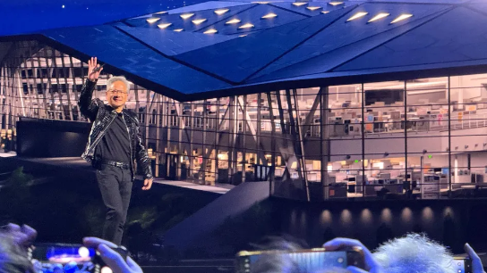
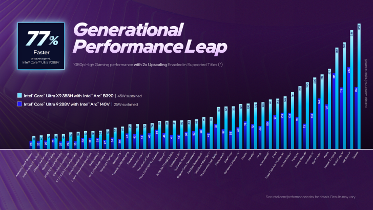
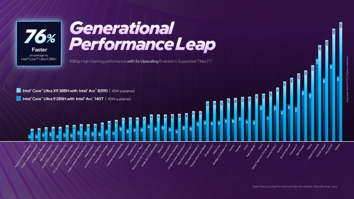
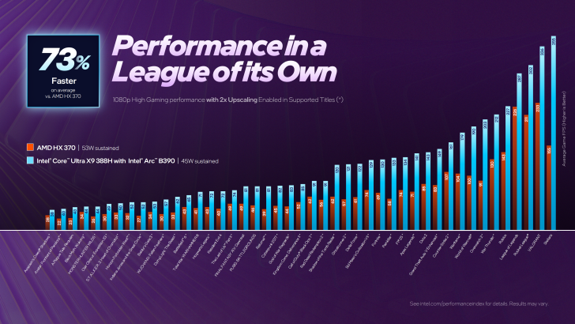
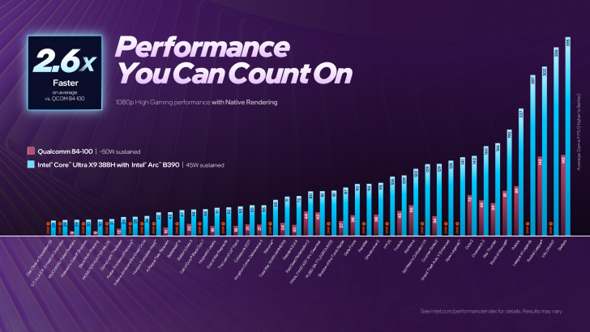
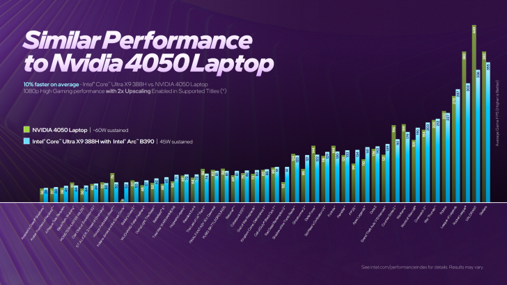

01
渾河冰牆封存浪漫 成冬日網紅景點
oncc
新聞
2026-01-06 22:02
遼寧瀋陽市渾河外灘市集近日設置了數面創意冰牆，冰封玫瑰、士多啤梨、凍梨等鮮花鮮果，在陽光下呈現晶瑩剔透的「果凍」質感，迅速成為社交平台熱點。
今晚（6日）《東張西望》報導一宗妻子紅杏出牆，令年長夫有家歸不得的故事。報《東張》的何先生表示於50多歲時意外獲得麟兒，當時十分高興，到翌年其妻馮小姐更再多生一個女兒，令他突然成為四孩之父。其妻之後將手機借給大女使用，但內裏竟藏着媽媽和另一名男人的床照，大女更發現姦夫是其父親的朋友。大女將事實告之爸爸，何先生在檢驗DNA後知道該兩名小朋友都並非親生骨肉，自己幫出軌妻子白白養了數年「便宜仔女」。
何先生跟前妻本為老闆秘書關係 何先生向《東張》表示，他跟馮小姐的戀情於2003年開始，當時四十多歲的何先生是公司老闆，而廿多歲的馮小姐則是秘書，何先生表示：「當時佢同我講屋企冇電，想喺公司瞓一晚，我話你咪瞓囉，點知佢話隔籬冇冷氣，最終走咗嚟同我瞓」。二人發生關係，之後有了BB後決定結婚。
何先生50多歲兩年抱兩起疑心 之後馮小姐好快幫何先生誕下兩名女兒，到2017年，馮小姐告之何先生有了身孕，之後誕下一名兒子，何先生話：「我當時好開心，咁耐之後突然有個仔，個個都話個仔好似我咁，肥嘟嘟」。翌年馮小姐再生一女，何先生亦開始起疑：「兩公婆呢啲最清楚啦。佢出面同個男人搞完，可以返嚟搵我補飛，你話呢個人賤唔賤格？」。
馮小姐電話充斥通姦證據 天網灰灰，一次馮小姐將手機借予大女使用，竟忘了將私密相片刪除，大女發現媽媽和另一男人的床照和其他親熱照片，並發現該男子是何先生和馮小姐平時會聯絡的朋友羅先生，而羅先生亦屬有家室之人。大女最後決定將真相告之爸爸。
何先生白養便宜仔女 握有馮小姐通姦證據的何先生，之後驗過三子、四女的DNA，不出所料都並非自己骨肉：「嗰陣成個世界黑晒。一個唔止，仲要兩個咁樣去呃我，我真係好傷」。何先生之後帶走大女、二女決定和馮小姐離婚，兩夫妻即時嗌大交，馮小姐理直氣壯，指香港沒有通姦罪，她一定要分何先生一半身家。
何先生：呢個女人會有報應 最後上完法庭，判二人共同擁有的物業，需於4個月內以不低於1,000萬出售，但之後因為未能賣出而引起之後事端。何先生因為之後經濟出現問題，希望返回該物業居住，不過馮小姐卻不允許；之後和新歡羅先生，於同屋苑置業的馮小姐更索性自己搬入舊居，之後何先生多次想重返物業都不果，雙方更多次報警。何先生表示：「呢個人無論同邊個一齊都唔會專一，就算之後同姦夫一齊都唔會專一。呢個人一定會有報應」。
乾燥的冬季季候風正影響廣東沿岸，天文台下調明日(7日)的最低氣溫預測。天文台晚上9時45分發特別天氣提示，指受冬季季候風持續影響，星期三至星期五早上天氣寒冷，市區最低氣溫在10至11度左右，新界再低幾度，日間非常乾燥，呼籲市民注意保暖，並多關顧長者及慢性病患者。預料周末期間氣溫稍為回升，但早上仍然清涼。
天文台亦曾在今日（6日）早上11時45分發出特別天氣提示，表示受冬季季候風持續影響，周三至周五（7至9日）早上天氣寒冷，市區最低氣溫在11°C左右，新界再低幾度。
天文台預料今日天氣大致天晴及乾燥，氣溫介乎12°C至18°C，吹清勁北風，離岸及高地吹強風。
另外，天文台指乾燥的冬季季候風會在未來兩三日持續為廣東帶來寒冷及晴朗的天氣，該區日夜溫差頗大。根據九天天氣預報，天文台再次調低周三、四（7、8日）氣溫預測，最低氣溫降為11°C。而 季候風會在周末稍為緩和，廣東沿岸氣溫略為回升，但早上仍然清涼，預料季候風補充會在下周初至中期影響華南沿岸。
摩根士丹利睇好樓市，預期2026年的住宅樓價、中環寫字樓租金及本港零售銷售額，將是自2018年以來首次進入上行周期，遂將香港房地產評級上調至「吸引」，其中料今年住宅價格升10%，並於2027年進一步攀升。
置業回報轉正 住宅交投趨活躍 大摩發表報告表示，美國聯儲局在過去18個月累計減息1.75厘，出現「供平過租」，置業回報轉正，同時來港移民數目增加，令人口回復增長；強勁的股市表現亦有助改善市場氣氛；以及樓市辣招已全面撤銷，令樓市需求改善，交投轉趨活躍。
中環寫字樓租金料升3% 年底空置率15% 對於寫字樓，大摩預計，中環寫字樓在追求質素的趨勢下，租戶需求持續回升，預期今年中環寫字樓租金上升3%。該行續指，整體寫字樓基本面有改善跡象，出租率轉趨穩定，雖然整體租金仍料下跌3%，但下跌速度放緩。該行預計今年底寫字樓空置率維持約15%。
零售銷售或增3% 北上消費仍有壓力 零售業方面，大摩預計，由於內地訪港旅客上升，今年本港零售銷售額有望增長3%，但憂慮仍受網購及深圳廉價服務與產品的衝擊，或持續對香港零售市道構成壓力。該行指，即使美元走弱及股市帶來的效應，亦難刺激消費，預期今年零售租金仍跌3%。
05
天文台預測明早寒冷 市區最低氣溫約10度
RTHK
新聞
2026-01-06 21:54
天文台料明早市區最低氣溫約10度，提醒市民注意保暖，多關顧長者及慢性病患者。（林紹鋒攝）
天文台表示，乾燥的冬季季候風正為廣東沿岸帶來普遍晴朗的天氣，預測明早寒冷，市區最低氣溫約10度，新界再低一、兩度。
新世界夥遠東合作發展啟德跑道區柏蔚森系列，銷情持續，自現樓以來已火速售出150伙，套現逾11.6億元。為回應市場需求，今日上載全新銷售安排，於本周六起以價單形式發售22伙1房戶，以120天付款計劃，提供最高折扣18%計算， 折實售價由531萬元起，折實呎價18,502元起，同日亦以招標形式推售11伙2房戶。
周六以價單形式推售22伙1房戶，面積262至287方呎，折實售價531萬至639.3萬元，折實呎價18,502至22,275元，當中16伙折實售價低於600萬元。另以招標形式推售11伙2房戶，面積385至443方呎。
柏蔚森系列自開售以來累售807伙，套現逾57億元，當中錄得不少大手投資客及外籍買家入市，成2024年啟德跑道區銷量冠軍紀錄，更創下啟德跑道區史上預售樓花銷售最高新紀錄！
07
食安籲勿食用21個批次嬰幼兒配方奶粉 產品涉雀巢能恩及惠氏營養品
oncc
新聞
2026-01-06 21:49
食物環境衞生署食物安全中心呼籲市民不要食用21個批次的嬰幼兒配方奶粉。
08
食安中心籲勿食用雀巢能恩及惠氏營養品21個批次嬰幼兒配方奶粉
RTHK
新聞
2026-01-06 21:41
食安中心呼籲市民不要食用21個批次的嬰幼兒配方奶粉。
食物環境衞生署食物安全中心（中心）今日（6日）表示，中心持續積極跟進雀巢公司在歐洲部分地區自願預防性回收個別批次的嬰幼兒配方奶粉，因為個別原材料可能存在源自微生物蠟樣芽孢桿菌（Bacillus cereus）的物質。中心早前已即時作出跟進調查，聯絡本地進口商（包括雀巢香港有限公司（雀巢香港））、零售商及有關當局，根據雀巢香港今日的最新資料，其進口本港的嬰幼兒配方奶粉有21個批次亦可能曾使用相關原材料，為審慎起見，雀巢香港已自願將受影響產品停售和下架，並展開預防性的回收。
雀巢香港現正回收受影響批次產品 中心發言人說，雀巢香港現正回收受影響批次產品，市民可於辦公時間致電其熱線2599 8874，查詢有關產品的回收事宜。
雀巢香港現正回收受影響批次產品
雀巢香港現正回收受影響批次產品
雀巢香港現正回收受影響批次產品
能恩啟護 3 號配方 BL 2 HMO (800 克)。雀巢官網圖片
中心早前透過食物事故監測系統，得悉雀巢公司在歐洲自願回收部分批次的雀巢嬰兒配方奶粉，因為懷疑個別產品可能受到蠟樣芽孢桿菌污染。中心得悉事件後，已即時作出跟進，並發布食物事故報表，讓公眾和業界知悉有關事件，並一直積極跟進事件和加強抽檢。
蠟樣芽孢桿菌普遍存在於環境中。如製作或貯存食品的過程欠缺衞生，可引致該菌繁殖。致吐毒素是由一些蠟樣芽孢桿菌菌株在食物中產生的耐熱毒素。進食含過量蠟樣芽孢桿菌或其耐熱毒素的食物，可能引致腸胃不適，例如嘔吐及腹瀉。
發言人呼籲市民不要讓嬰幼兒食用受影響批次的產品，如發覺嬰幼兒食用有關產品後不適，應盡快求醫。業界亦應立即停止使用或出售受影響批次產品。
發言人說，中心已就事件通知業界及相關部門，並會繼續跟進事件和採取適當行動。跟進工作仍然繼續。
據官網介紹 ，該車的模擬電機聲音可以進行自定義，車主可以將車輛的音頻反饋與不同的PlayStation主題相匹配。
索尼和本田聯合打造的電動汽車Afeela 1將以PlayStation系列遊戲為主題，並配備相應的音效，例如 《宇宙機器人》《戰神》等
在CES 2026上，官方宣佈Afeela 1將為用户提供多種選擇，使其數字儀表盤以《宇宙機器人》、《戰神5：諸神黃昏》和“其他幾款PlayStation遊戲”為主題。這些主題將包括遊戲中的“自定義壁紙和電動馬達音效”。索尼表示，他們正在打造“一種獨特的視聽體驗，以吸引遊戲愛好者”。
與這家日本遊戲巨頭的合作還不止於此，Afeela還將支持PlayStation Remote Play。在CES的發布會上，索尼還展示了多張Afeela 1集成的“遠程遊玩（Remote Play）”功能的概念圖，索尼在去年年底時就確認了這一功能。
索尼本田移動公司當時在一份聲明中表示：“藉助PS遠程遊玩，用户可以使用Afeela車載信息娛樂系統，直接從汽車界面遠程訪問和控制家中的PS4或PS5遊戲機。
它為用户提供了一種便捷的方式，讓用户可以通過集成顯示屏和高級音響系統，遠程操控遊戲主機進行遊戲。無論您是在停放的汽車裏等候，還是在公路旅行中為乘客提供娛樂，Afeela的集成功能都能讓您在車內盡享PlayStation的遊戲體驗。”
索尼本田移動出行代表董事、總裁兼首席運營官川西泉補充道：“PS Remote Play的推出體現了Afeela對移動出行的願景：將旅行空間轉變為引人入勝、充滿情感的體驗。通過此次整合，我們將客户的整體旅行體驗提升到了一個前所未有的娛樂高度。”
這並非汽車首次內置遊戲支持。2022年，特斯拉為其汽車推出了原生Steam應用，用户可在車輛停放或充電時通過車載顯示屏暢玩Steam遊戲。但到了2024年，特斯拉停止了對Steam的支持。
微軟還在9月份宣佈，只要擁有Xbox Game Pass Ultimate訂閲和汽車數據套餐，使用LG webOS汽車內容平台的汽車也可以通過Xbox雲遊戲串流遊戲。
據索尼和本田透露，索尼與本田合作推出的Afeela 1將於2026年底上市，起價10萬20900美元。Origin車型預計將於2027年上市，起價8萬9900美元。目前，有意購買該車的客户可以支付200美元的定金進行預訂。
這款平板電腦配備鍵盤、13.4英寸2.5K分辨率180Hz刷新率顯示屏，以及AMD Ryzen AI Max+ 395處理器和Radeon 8060S顯卡。此外，它還附贈一個由新川洋司設計的《死亡擱淺》風格便攜包。
這位藝術家在一份聲明中表示：“我想創造一款屬於Ludens的產品，並將這個想法融入到這款PC設計中。它的部件和設計靈感都來自Ludens，並藴含着Ludens的精髓。”
除了Flow Z13-KJP之外，華碩還推出了一系列以小島工作室為主題的PC配件，包括ROG Delta II-KJP遊戲耳機、ROG Keris II Origin-KJP Edition遊戲鼠標和ROG Scabbard II XXL-KJP高級鼠標墊。
華碩尚未公佈ROG Flow Z13-KJP和配件的定價或發布信息，但預計它們將於今年上半年上市。
新川洋司和Ludens（身後）
小島工作室正在推進一系列《死亡擱淺》項目，包括動畫電影《死亡擱淺：Mosquito》、Disney+ 劇集 《死亡擱淺：隔離》以及A24製作的真人電影。
小島工作室的華碩產品線：
《咬文嚼字》編輯部6日在上海公佈2025年十大語文差錯，包括緬甸首都誤為「仰光」等語文生活中出現頻率高、覆蓋面廣的差錯入選。
「神祇」誤為「神祗」 其中一大差錯是「神祇」誤為「神祗」。電影《哪吒之魔童鬧海》（《哪吒》系列電影的第二部，又稱《哪吒2》）刷新多項影史紀錄，有媒體稱哪吒為「道教神祗」。
「神祗」的寫法有誤，應寫為「神祇」。「神祇」泛指神靈。神，指天神；祇，指地神。祗，義為恭敬，如「祗仰」即「敬仰」、 「祗候」即「恭候」。祇、祗字形僅差一點，在古代典籍中偶有通假的用法，但如今兩者分工明確，音義相去甚遠。哪吒是神仙，當稱「神祇」而非「神祗」。
另一大差錯是緬甸首都誤為「仰光」。不少媒體在報道中將緬甸首都誤稱為「仰光」。其實，如今緬甸首都是「內比都」。仰光於1755年建城，在1948年緬甸獨立後被定為首都。2005年11月，緬甸首都從南部沿海的仰光遷往中部山區的內比都。
內比都於2003年始建，並在2006年3月被命名為「內比都」，其意為皇家首都。仰光距離內比都約400千米，仍是緬甸最大的商港和世界聞名的旅遊城市，但已不再是緬甸首都。
《咬文嚼字》創刊於1995年，享有較高社會聲譽。《咬文嚼字》主編黃安靖表示，自2006年開始，該雜誌社堅持進行年度十大語文差錯的評選與發布，至2025年已有20年，以期持續發揮糾錯效應，助力語文規範。
值得關注的是，在該股最後一次收於歷史高點當日，其股價較2022年底累計漲幅超過1300%，市值突破5萬億美元，而不到三年前該公司市值僅約4000億美元。如今，該公司股價在短短數月內蒸發4600億美元市值，三年累計漲幅回落至近1200%。
與此同時，這家佔據主導地位的人工智能芯片製造商正面臨前所未有的競爭壓力，競爭對手既包括AMD這類同行，也涵蓋Alphabet、亞馬遜公司等核心客户。華爾街對於英偉達向眾多客户進行投資的做法也愈發擔憂，此類投資或被視作人為提振需求的手段。
“相關風險已顯著上升。”資產管理規模達130億美元的Advisors Capital Management合夥人兼投資組合經理JoAnne Feeney表示，這一風險將影響到大多數股票投資者。相關數據顯示，自2022年10月市場牛市啓動以來，英偉達股價的上漲貢獻了標準普爾500指數約16%的漲幅，而緊隨其後的蘋果公司貢獻佔比僅為7%左右。
英偉達公司收益預期高漲。儘管市場對其股票的需求依舊強勁，但其估值相較許多科技巨頭同行仍處於較低水平。預計在截至2027年1月的下一財年，英偉達銷售額將增長53%，利潤增幅可達57%。相比之下，蘋果公司同期的銷售額和利潤增幅預計均在10%左右。
華爾街也並未打算放棄英偉達。在追蹤該公司的82位分析師中，有76位給予買入評級，僅有1位建議賣出。華爾街給出的平均目標價顯示，未來12個月英偉達股價有望上漲37%，屆時其市值將突破6萬億美元。
“英偉達仍有望成為公開市場中增長最快的公司之一。”菲尼説，“你會選擇持有這隻股票嗎？答案是肯定的。”
英偉達首席執行官黃仁勳週一在拉斯維加斯舉行的國際消費電子展上發表演講時表示，公司新一代名為Rubin的芯片將於今年推出，客户很快就能體驗這項技術。
“市場對英偉達GPU的需求正呈爆發式增長。”黃仁勳稱，“之所以會出現這種爆發式增長，是因為人工智能模型的規模正以每年十倍的量級持續擴張。”
以下是英偉達股票在2026年面臨的幾大關鍵問題。
芯片市場競爭加劇
英偉達是人工智能加速器領域的龍頭企業，佔據着超過90%的市場份額。但目前競爭對手正開始嶄露頭角。
彭博社數據顯示，AMD已贏得OpenAI、甲骨文公司等企業的大型數據中心訂單，預計其2026年數據中心業務收入將激增約60%，達到近260億美元。與此同時，佔英偉達營收超 40% 的Alphabet、亞馬遜、Meta、微軟等客户，正着手自研芯片，以期擺脱對英偉達芯片的依賴 —— 這類芯片單價可超過 3 萬美元。
“只要有性價比更高的替代芯片，企業就會選擇後者。”Jonestrading首席市場策略師Michael O‘Rourke表示，“顯然，英偉達想要維持90%的市場份額將面臨嚴峻挑戰。”
早在十多年前，Alphabet旗下的谷歌就已啓動首款TPU的研發工作，並對其進行優化，用於人工智能模型的訓練和推理。谷歌最新推出的Gemini人工智能聊天機器人收穫了廣泛好評，而該產品正是基於自研TPU運行的。2025年10月，Alphabet宣佈與人工智能公司Anthropic達成一筆價值數百億美元的芯片合作協議。同年11月，科技媒體The Information報道稱，Meta正洽談於2026年從谷歌雲租賃芯片，並計劃在2027年將其部署至自家數據中心。
市場對這類定製芯片的需求也帶動了博通公司的發展，該公司專為人工智能巨頭生產半導體產品。博通的專用集成電路業務實現快速增長，助力其躋身全球市值最高的企業之列。目前博通市值已達1.6萬億美元，超過特斯拉公司。
2025年12月24日，英偉達宣佈授權使用芯片初創公司Groq的技術並聘請其高管，這一舉措似乎也印證了市場對更專業、性價比更高的芯片需求正在攀升。英偉達計劃將格羅克芯片的相關技術融入未來產品設計中，藉此掌握低延遲半導體技術 —— 這是一種與專用集成電路類似、可用於運行人工智能軟件的技術方案。
不過，人工智能計算需求的規模極為龐大，即便科技巨頭紛紛部署自研芯片，仍在大量採購英偉達芯片。分析師Kunjan Sobhani和Oscar Hernandez Tejada因此指出，在可預見的未來，英偉達的市場份額有望保持穩定。
“市場低估了英偉達的行業地位。”給予英偉達買入評級的摩根士丹利分析師Joseph Moore等人在2025年10月5日發布的一份研究報告中寫道，“在雲服務領域，英偉達仍是唯一的專業解決方案提供商。”
預計2026年亞馬遜、微軟、Alphabet和Meta的資本支出總額將超過4000億美元，其中大部分資金將用於數據中心設備採購。此外，未來幾年這些企業還將斥資數千億美元租賃其他公司開發的數據中心空間。開放人工智能研究中心已承諾在未來數年投入1.4萬億美元，儘管外界對這家持續虧損的初創公司能否兑現這一投入存有疑慮。
利潤率與估值承壓
隨着競爭對手推出更多性價比更高的替代產品，投資者正密切關注英偉達的利潤率表現，因為該公司定價策略的任何鬆動都將直接反映在利潤率數據上。
作為衡量盈利能力的關鍵指標，英偉達的毛利率（不計銷貨成本）在2024和2025財年維持在75%左右的水平。但在2026財年，由於大力推進Blackwell系列芯片量產導致成本上升，公司毛利率出現下滑。英偉達預計，在截至2026年1月31日的2026財年，毛利率將降至71.2%，並計劃在2027財年回升至75%左右。由此可見，一旦毛利率未能達到預期，華爾街或將拉響警報。
另一個讓投資者繼續看好英偉達的因素，是其相對低廉的估值。以未來12個月預期市盈率25倍計算，英偉達的估值低於 “華麗七巨頭” 中的所有其他個股，僅高於Meta。其估值水平也低於標準普爾500指數中超過四分之一的成分股，包括税務軟件TurboTax製造商Intuit。
美國銀行半導體行業分析師Vivek Arya表示：“當前市場對英偉達的估值邏輯，彷彿是行業週期已經終結、人工智能技術無人再部署、前路遍佈重重阻礙一般。這恰恰是投資者眼中的機遇所在，而且顯然與互聯網泡沫鼎盛時期的市場格局截然不同。”
電影《尋秦記》上周三（2025年12月31日）上映，截至昨天（5日）港澳兩地累計票房，高達港幣$45,454,742（香港地區佔HK$42,803,931）。
“X” 平台上最早且傳播最廣的相關視頻片段之一，由名為 “華爾街猿” 的賬號發布，該賬號在平台上擁有超過 100 萬粉絲。
這條帖子呈現了多名委內瑞拉民眾喜極而泣的場景，畫面中的民眾還對美國及總統唐納德・特朗普推翻馬杜羅的行為表達了感謝。
該視頻隨後被 “X” 平台的 “社區備註” 功能標記。這一功能是平台依託用户眾包開展的事實核查機制，允許用户為其認為具有誤導性的帖子補充背景信息。備註內容顯示：“此視頻由人工智能生成，目前被當作真實事件傳播，意在誤導公眾。”
這條視頻的瀏覽量已超 560 萬次，被至少 3.8 萬個賬號轉發分享，其中包括商界大亨埃隆・馬斯克，不過馬斯克最終刪除了該轉發內容。
美國消費者新聞與商業頻道（CNBC）未能核實該視頻的來源，但英國廣播公司（BBC）和法新社（AFP）的事實核查人員表示，已知的該視頻最早版本出現在抖音賬號 “@美國好奇智庫”，該賬號經常發布人工智能生成內容。
事實上，早在這類視頻出現之前，在特朗普政府發布馬杜羅被捕的真實照片前，網絡上就已經流傳着由人工智能生成的馬杜羅被美方羈押的相關圖片。
這位委內瑞拉前總統於 2026 年 1 月 3 日被捕，當時美軍發動了空襲與地面突襲行動。這場軍事行動在新年伊始佔據了全球各大媒體的頭條位置。
除了這些人工智能生成視頻外，法新社的事實核查團隊還標記了多條與馬杜羅倒台相關的誤導性內容，其中包括將智利民眾的慶祝畫面偽造成委內瑞拉場景的視頻片段。
重大新聞事件期間滋生虛假信息並非新鮮事。此前在巴以衝突和俄烏衝突期間，也曾出現過類似的不實或誤導性內容。
然而，此次與委內瑞拉近期局勢相關的人工智能生成內容，憑藉其廣泛的傳播範圍和高度的逼真度，成為人工智能技術日益淪為虛假信息傳播工具的鮮明例證。
像蘇蕊和米德爾旅程這類人工智能內容生成平台的出現，使得人們能夠更便捷地快速製作超寫實視頻，並在突發新聞引發的信息混亂中冒充真實內容傳播。這類內容的製作者往往意在放大特定政治敍事，或是在全球受眾中製造認知混亂。
去年，一段由人工智能生成的視頻也曾在網絡上瘋傳，視頻中幾名女性控訴政府停擺期間自己失去了補充營養援助計劃（即 “糧票計劃”）的福利補貼。該視頻甚至騙過了福克斯新聞頻道，後者曾將其當作真實事件撰寫報道，相關文章後來才被刪除。
鑑於此類趨勢愈演愈烈，社交媒體公司正面臨越來越大的壓力，外界要求它們加大力度，為具有潛在誤導性的人工智能生成內容添加明確標籤。
去年，印度政府提出一項法案，要求對人工智能生成內容強制標註；西班牙則出台法規，對未標註的人工智能生成內容最高可處以 3500 萬歐元的罰款。
為回應日益增長的擔憂，抖音、元宇宙平台等主流社交媒體均已推出人工智能內容檢測與標註工具，但實際效果參差不齊。
美國消費者新聞與商業頻道（CNBC）發現，抖音平台上部分被當作委內瑞拉歡慶場面傳播的視頻，已經被標註為人工智能生成內容。
而 “X” 平台在內容標註方面，主要依賴 “社區備註” 功能。批評人士指出，這一機制往往反應遲緩，難以阻止人工智能虛假信息在被識別前大面積擴散。
負責監管照片牆和 “思瑞德” 平台的亞當・莫塞裏，在最近的一則帖子中坦承了社交媒體行業面臨的這一挑戰。他表示：“所有主流平台都會在識別人工智能生成內容方面付出努力，但隨着人工智能技術愈發擅長模仿現實，平台的識別能力反而會逐漸下降。”
他還補充道：“如今，越來越多的人和我一樣認為，相比給虛假內容做標記，為真實內容設置數字水印將是更可行的方案。”
週二清晨，巴黎的標誌性建築屋頂與景點銀裝素裹。因學校停課，孩子們迎來意外的雪假日，興奮不已。但航空旅客的心情卻跌至谷底，強降雪導致法國北部和西部的 6 座機場被迫關閉。
荷蘭遭遇惡劣天氣侵襲
荷蘭全境普降大雪，阿姆斯特丹史基浦機場表示，由於工作人員需全力清理跑道、為待飛飛機除冰，約 400 架航班被取消。事實上，阿姆斯特丹的航班從週一開始就已大面積取消，氣象部門預計本週後續仍有降雪。
除航班受阻外，往返荷蘭首都郊外機場的交通也幾近癱瘓。受道岔結冰和凌晨突發的軟件故障影響，荷蘭鐵路系統陷入一片混亂。
荷蘭國家鐵路公司在官網發布公告稱，上午晚些時候部分鐵路線路恢復運營，但阿姆斯特丹周邊路段因路面結冰仍基本處於關閉狀態。該公司呼籲通勤者 “若非絕對必要，請勿出行”。
不得不駕車通勤的民眾同樣苦不堪言，積雪和薄冰導致多條高速公路交通嚴重堵塞，上班路程耗時大幅增加。
羅馬陰雨連綿 教皇主顯節祈福活動參與人數鋭減
羅馬地區已持續數週降雨，台伯河水位暴漲、多次漫過堤岸，教皇利奧十四世的聖誕系列慶祝活動也因此一再受影響。本週二，聖彼得廣場僅有零星民眾聚集，數千人撐着五顏六色的雨傘，聆聽利奧十四世在聖彼得大教堂露台上發表主顯節祈福講話。
自聖誕節前開始，羅馬便陰雨不斷。羅馬市長安東尼奧・瓜爾蒂耶裏於週二頒佈政令，限制民眾進入公園及其他存在樹木倒伏、洪水氾濫風險的區域。
意大利北部的博洛尼亞已飄起雪花，多洛米蒂山區的滑雪愛好者為此歡欣鼓舞。不過氣象部門預測，未來幾天意大利北部和中部大部分地區將迎來持續嚴寒。
英國氣温驟降
寒流突襲英國，夜間最低氣温跌至零下 12.5 攝氏度（華氏 9.5 度）。大雪導致英國北部地區鐵路、公路和航空交通全面受阻，數百所學校停課。
受積雪和霜凍天氣影響，多場賽馬及足球賽事被迫取消；結冰引發的電力故障導致格拉斯哥地鐵停運；利物浦約翰・列儂機場也於週一關閉數小時。
氣象部門預計，蘇格蘭北部地區 6 日降雪量或將達到 15 釐米（6 英寸）。當地部分民眾已被前期降雪困在家中。蘇格蘭東北部議員安德魯・鮑伊稱當前局勢 “十分危急”，呼籲派遣軍人蔘與除雪作業，併為受困民眾運送食品和醫療物資。
巴爾幹地區遭遇冰雪災害
巴爾幹多國同時遭遇暴雪和暴雨侵襲，河流水位暴漲，不僅造成交通癱瘓，還引發多地電力和供水中斷。週一，波黑首都薩拉熱窩一名女子被積雪壓斷的樹枝砸中頭部，不幸身亡。鄰國塞爾維亞的西部部分城市已宣佈進入氣象緊急狀態。
由於週三是東正教聖誕節，不少民眾計劃前往滑雪場度假或返鄉過節，塞爾維亞當局提醒駕車出行者務必格外謹慎。週二清晨，前往薩拉熱窩近郊別拉什尼察山的道路因路面結冰發生車輛滯留，許多司機不得不將車停靠在路邊。
克羅地亞和黑山的亞得裏亞海沿岸則遭遇狂風巨浪襲擊。視頻畫面顯示，風暴來襲時，黑山南部的阿達博亞納地區，海水倒灌湧入沿海度假小屋。
法律與金融領域專家向哥倫比亞廣播公司新聞網表示，這筆勝算渺茫的投注，讓人不禁懷疑這位匿名投注者的真實身份，以及其是否在美國抓捕馬杜羅及其妻子的軍事行動前就已獲取內幕信息。
總部位於紐約的加密貨幣預測市場Polymarket，近期剛獲得證券交易所運營商Intercontinental Exchange20億美元的投資，目前該平台正在美國尋求監管機構的批准。
投注時機是否可疑？
一位去年12月才註冊Polymarket的用户，斥資32537美元押注“馬杜羅將於2026年1月31日前下台”的可能性。而這筆投機性投注完成後不久，特朗普便於週六凌晨4點21分在社交平台Truth Social上宣佈了馬杜羅被捕的消息。
專家表示，多項跡象表明，這名投注者有可能獲取了與美軍抓捕馬杜羅行動相關的機密信息。
“這一情況顯然説明，該投注者確實掌握了內幕信息。”無黨派金融改革倡導組織Better Markets聯合創始人兼首席執行官Dennis Kelleher指出，“這筆投注完全具備內幕交易的所有特徵：投注時間極晚，恰好在其所押注的事件發生前夕；投注金額相對較大；且交易發生在一個缺乏真正監管、毫無透明度可言的市場。”
該Polymarket賬户還進行了另外三筆投注：1000美元押注美軍將於1月31日前入侵委內瑞拉；250美元押注特朗普總統將於1月31日前針對委內瑞拉援引《戰爭權力法》；146美元押注美軍將於當月月底登陸委內瑞拉。
“這是一個新註冊賬户，且投注標的全部圍繞委內瑞拉總統可能下台的相關事件——諸多跡象都讓人有理由懷疑這是一起內幕交易。”Troutman Pepper Locke專注於期貨交易領域的監管事務律師Stephen Piepgrass向哥倫比亞廣播公司新聞網表示。
Polymarket未就這幾筆與馬杜羅相關的投注回應置評請求。去年秋天，該公司首席執行官Shayne Coplan曾向哥倫比亞廣播公司新聞網表示，內幕人士“擁有市場信息優勢並非壞事”。
他在接受《60分鐘》節目主持人Anderson Cooper採訪時稱：“顯然，我們需要篩選這類人羣，並且必須明確嚴格地劃定行為邊界，釐清道德準則，我們在這方面投入了大量精力。但這種情況的發生具有一定必然性，而且也能帶來諸多益處。要知道，市場參與者會逐步適應這一狀況。”
市場競爭是否存在不公？
美國商品期貨交易委員會（CFTC）是負責監管Polymarket以及Kalshi等預測市場的政府機構，後者是另一個允許消費者就各類新聞、體育賽事及其他事件進行投注的在線平台。
但凱勒赫認為，該委員會對預測市場的監管力度十分薄弱。
“這類博彩性質的市場幾乎完全處於無人監管的狀態。商品期貨交易委員會本應履行監管職責，但該機構既缺乏足夠資金與人員，也不具備相應專業能力。”他表示，“這絕非所謂的‘輕監管’，而是徹頭徹尾的‘無監管’。”
商品期貨交易委員會未立即回應置評請求。
專家向哥倫比亞廣播公司新聞網表示，這筆Polymarket投注或涉嫌違反規範期貨與期權交易的聯邦法律《商品交易法》（CEA）。該法案明確禁止針對暗殺、恐怖主義及戰爭相關事件進行投注。
凱勒赫還指出，這一事件凸顯了預測市場對其他用户存在的潛在風險。
“消費者與投資者應當清楚，這些市場完全不受監管、毫無透明度可言，參與者虧損的概率極高。”他説。
派普格拉斯向哥倫比亞廣播公司新聞網表示，這筆馬杜羅相關投注成為了爭議的“引爆點”，而爭議的核心正是他所指出的此類市場監管不力的問題。他認為，若放任掌握機密信息的內幕人士在這類交易平台投注，會使其他用户陷入不利境地。
“這關乎最基本的公平性。”派普格拉斯稱，“試想一下，在一個部分參與者掌握着贏取投注的直接相關信息，而你卻一無所知的市場裏，你是否願意參與投注？作為消費者，你必須認真審視，這樣的市場是否值得你去涉足。”
18
旺角冚百家樂賭場 拘主持賭客共7人
oncc
新聞
2026-01-06 21:26
旺角警員今日(6日)在區內突擊搜查上海街一單位，搗破一個懷疑非法百家樂賭場，拘捕7人，包括一名73歲本地男負責人及一名50歲本地女負責人，涉嫌「管理賭博場所」、「協助經營賭博場所」。
以全年計，比亞迪在歐洲最大的電動車市場德國的銷量增長七倍，至23306輛，而特斯拉的銷量幾乎腰斬，降至19390輛。
比亞迪在英國這一歐洲第二大插電式汽車市場同樣領先特斯拉。比亞迪在去年9月超過特斯拉，並以51422輛的全年銷量收官，高於特斯拉的45513輛。
20
孫東取消訪美 貿發局科技園如期參加國際消費電子展推廣香港科技
RTHK
新聞
2026-01-06 21:21
創新科技及工業局局長孫東取消美國訪問行程，當局指特區政府一直對官員外訪的適切性作動態評估，經評估決定取消。
普拉達（Prada，1913）公布，位於香港置地廣塲的新店開幕，為亞太區至今面積最大的專門店。Prada指，品牌將開業20多年的置地廣塲舊有門店遷至新址，鞏固其立足香港核心地段的定位。
三層樓面 面積逾1300平方米 Prada表示，新店佔地三層，面積逾1,300平方米，設男、女裝全系列精品。一樓展示女裝成衣系列，二樓則為男裝專區，另有空間陳列精選女裝臻品。而地面一層牆身飾以獨特立體花卉圖案，藏有多間貴賓室，為選購Prada Fine Jewelry Eternal Gold高級珠寶系列的顧客，提供客製服務。
Prada又指，店面以灰白色精鋼外牆定調，啞面滑石框架交疊成Prada三角形構圖，配襯Porto Bianco白色石材，而透明窗戶讓店內空間布局一覽無遺。
至於室內空間再現經典黑白棋盤大理石地板，靈感源自意大利米蘭Galleria Vittorio Emanuele II拱廊街的Prada元祖店，配合綠色牆身及黑色金屬桿。
節目《尋歡作樂的姐姐》由麥玲玲帶領兩組「佳麗」何依婷、何沛珈、林凱恩、劉曉昆；及戴祖儀、吳若希、游嘉欣玩轉上海、廣州及深圳，體驗當地新興「女性消費群」吃喝玩樂勝地，一嘗被爆肌男及小鮮肉「包圍」滋味。
何沛珈嗌得誘惑 今晚播出第二集，麥玲玲與何依婷、何沛珈（Roxanne）、林凱恩，聯合自稱上海地膽的劉曉昆玩轉上海，先後到「色彩繽紛的減壓潑墨畫室」；由型男主廚主理的「隱世私房菜」；面積接近十二個足球場的室內滑雪場；以「名畫美食」+專業跳舞表演馳名的餐廳等等，吃喝玩樂。蒲點當中以網紅熱捧的酒吧最具噱頭，除了有大量適合打卡的Cocktail之外，酒吧中每一位猛男均身懷絕技，其中一名「剝衫黑背心」猛男上演完「麒麟臂生剝合桃」後，再追加兩招極具視覺衝擊的「體能之巔」貼身體驗，成功震懾何沛珈、林凱恩及劉曉昆。
之後「黑背心」按要求「公主抱」何沛珈，期間還輕輕拋起她製造驚險效果；連爆「害羞三連環」的何沛珈一度緊張至整個Body見紅。之後「黑背心」再示範單手舉起林凱恩，嚇得「怕醜妹」林凱恩瘋狂尖叫。下集，劉曉昆與林凱恩將體驗潑墨畫減壓。
23
24議員申報擁土地及物業 有議員在內地有土地5住宅全出租
oncc
新聞
2026-01-06 21:08
新一屆90名議員需要提交利益申報表，截至今日(6日)晚上，最少67名議員的利益申報表已上載至立法會網站。
24
台F16戰機夜訓失事飛行員跳傘逃生 當局搜救中
oncc
新聞
2026-01-06 21:07
一架隸屬台灣花蓮空軍基地、編號6700的F16AM戰機，周二（6日）執行夜間飛行訓練任務時，突然從雷達上消失，隨後證實失事。
25
全國宣傳部長會議召開 要求加強建設國際傳播能力
oncc
新聞
2026-01-06 21:05
全國宣傳部長會議周一（5日）在北京召開，中共中央政治局常委、中央書記處書記蔡奇強調，要做好新聞輿論工作，把經濟宣傳擺在重要位置，加強輿情應對與輿論引導，壓實意識形態工作責任制，鞏固壯大主流思想輿論。
71歲賈思樂今年2月15日再開騷，於伊利沙伯體育館舉行《Happy Together Again 2026 in Concert》。
天文台表示，本港周三（7日）天晴，早上寒冷，市區最低氣溫約11°C，新界再低兩三度。日間非常乾燥，相對濕度最低25%，最高氣溫約17°C。吹和緩至清勁北至東北風，初時離岸及高地間中吹強風。隨後一兩日早上持續寒冷，天晴及非常乾燥。周末期間氣溫稍為回升，但早上仍然清涼。
瑞士食品巨頭雀巢公司（ Nestle）周一（5日）宣布，在多個歐洲國家回收部分嬰兒奶粉產品，包括法國、德國、奧地利、丹麥、意大利及瑞典，原因是產品可能含有可引致食物中毒的毒素。
雀巢表示，在主要供應商提供的原料中發現「品質問題」，截至目前尚未接到因食用受影響奶粉導致患病的報告，但為審慎起見仍決定回收產品。雀巢在法國的公司表示，最新調查顯示部分批次可能含有可引致消化系統問題的cereulide毒素。它由蠟樣芽孢桿菌產生，可引致噁心及嘔吐。
雀巢已在網站公布受影響產品批次編號及圖片，這些產品在不同地區以不同名稱銷售，在德國市場，相關產品名為Beba與Alfamino。
（法新社/路透社）
現年43歲、有「台灣第一帥」封號的男星王陽明，曾經跟天后級人馬蕭亞軒拍拖3年，而他亦是愛車之人，近年開設網上頻道解構各款汽車，成為「車界KOL」。王陽明前晚（4日）自爆發生車禍，因個人判斷錯誤，導致交通意外，王陽明更公開影片，講述事故經過，以及後續處理問題。王陽明強調因責任在於自己，因此拍片並發文道歉，又承諾會負責到底，引起網民熱議。
王陽明讚前車車主友善 王陽明前晚在IG公開影片，表示：「沒想到2026第一天就⋯好啦是我自己不小心沒注意到，真的很不好意思前車的車主，還好你們人也超Nice，接下來我一定會把該負責的負責到底！」
相關閱讀：王陽明蔡詩芸傳離婚！爆婚變分居後首現身 手上婚戒消失
影片中見到王陽明展示座駕，當中見到車頭位置有刮痕，前車車尾同樣有刮痕，以及明顯凹陷問題。王陽明透露當時情況：「2026年第一天就出車禍了，Yap是我的問題，在一個紅綠燈然後變綠燈，我就踩了油門，我以為前面的車子也走了，但還是我的問題我會負責。」王陽明表示雖然感覺好糟糕，但必須面對現實，以及處理好事件。
王陽明達成和解 片尾見到王陽明與前車事主已達成和解，更搞笑地拍攝合照，王陽明態度誠懇多度向前車事主道歉：「很謝謝對方的諒解，不好意思造成你們的麻煩」，同時慶幸雙方都安然無恙。不少網民對王陽明的態度及處理手法表示讚揚，更討論起被撞後換來合照，非常搞笑。
相關閱讀：王陽明近200萬名車被撞 涉事司機不顧而去嬲到爆粗
網民留言：「哥，他們感覺都好開心，但大家平安真的就太好了」、「這樣的大氣與態度，很讚」、「最重要的是人沒事」、「花錢消災不是難事，人平安甚麼都好」、「還好雙方都沒受傷」、「可以和平解決是最好的」、「開車注意安全囉」等。
相關閱讀：「東張女神」俞可程遇恐怖車禍險喪命 更多細節曝光左臂血肉模糊 座駕損毀嚴重
台灣空軍今天表示，1架由辛姓上尉駕駛的F-16V（blk20）單座戰機（機號6700），晚間執行例行性訓練任務，於晚上7時29分於花蓮縣豐濱鄉東面10浬疑跳傘，空軍立即成立應變中心，展開搜尋行動。
台灣官方表示，領導人賴清德第一時間已指示國防部及相關單位全力搜救，務必以確保人員平安為最高目標。
台灣空軍失事的F-16單座戰機，目前仍在搜尋跳傘落海的機師。FB:IDF經國號粉絲專頁
31
元旦至今 違例吸煙發89張定額罰款通知書 擴大範圍內有1張
oncc
新聞
2026-01-06 20:54
元旦(1日)起實施新一階段控煙措施，由元旦至今日(6日)下午5時，衞生署控煙酒辦公室在社交專頁指共巡查885次，包括新措施涵蓋的地點，並就違例吸煙行為發出89張定額罰款通知書，當中在新擴大的法定禁煙區及新設的排隊禁煙範圍內，發出1張定額罰款通知書。
周大福人壽宣布，進一步擴展大灣區城市的「直接支付服務」網絡，合作醫院數目由原來4間大增至23間，涵蓋公營及私營醫療機構；客戶亦可透過「中國內地入院支援」服務，使用市場首創香港醫生轉介服務。
尖沙咀診所代辦「預先批核」申請 周大福人壽指，客戶可於大灣區醫療集團（GBAH）尖沙咀診所預約全科醫生諮詢，由醫生評估是否適合到內地治療，並推薦合適醫院及協助預約。診所職員亦可代辦「預先批核」申請，獲批後，GBAH將安排與醫院直接付款，客戶無需墊付醫療費用。
該企指，是項舉措旨在回應客戶對優質便捷醫療服務的需求，透過GBAH的龐大醫療網絡，便利更多長居中國內地及經常北上南下的客戶，提供更多可負擔的醫療服務選擇。
多個醫療計劃納入中醫治療保障 周大福人壽又指，因應中醫治療需求日益增加，亦於多個醫療保障計劃全面納入中醫治療保障，讓客戶靈活選擇最合適的治療方法。該企指，大灣區城市的醫院針對癌症等長期或複雜病症，推出結合中醫與西醫的綜合治療方案，並以相宜價格，為客戶提供全面、個人化的醫療選擇。
葉文傑：跨境就醫免除繁複理賠程序 周大福人壽行政總裁葉文傑表示，擴展大灣區「直接支付服務」醫院網絡和透過「中國內地入院支援」服務提供香港醫生轉介服務，讓客戶在就醫時免除繁複的理賠程序，享受更快捷、更安心的醫療體驗。
「直接支付服務」覆蓋的大灣區城市醫院新增了19間，包括香港大學深圳醫院、深圳新風和睦家醫院、廣州和睦家醫院等。
剛踏入2026年，苑瓊丹便在佛山舉行新直播公司的開幕儀式，邀請一眾圈中好友，包括陳百祥、陳浩民、鄭則士、黃一山、林子聰、羅天池、金剛、黃子揚、李焯寧、金剛、張穎康、張美妮等出席，苑仔更宣布與「視帝」陳山聰簽約，齊齊直播拍住上！陳山聰很安心合作：「其實我覺得最重要是大家互相信任，我在內地經驗不及苑仔，她是我的盲公竹！」山聰笑言未知直播收入，但兒子始讀小學，要苑仔幫補補習費，場面非常好笑！
陳山聰為苑瓊丹第一個簽約藝人 苑仔表示今次投資過千萬，對陳山聰非常有信心：「他基本上是我第一個簽約藝人，各方面很適合做直播，十分有說服力！第二件事就是他知道我唔係古靈精怪，起碼他和我一起合作，不會有人跣佢！」叻哥更爆新出爐視后佘詩曼昔日往事：「當年係我提攜佢出嚟，你地知唔知？我喺意大利識佢媽媽，佢當年選香港小姐時，佢媽媽打比我話個囡選香港小姐，咁我話包佢頭三名，我諗住亂噏，點知佢真係第三！」提到好友曾志偉宣布離任TVB高層一事，叻哥為對方送上祝福：「替佢開心！功成身退！」
陳浩民被苑仔口才折服 陳浩民表示曾與苑仔直播，被對方口才折服外，更要「揞住」苑仔個嘴收口：「我直頭要揞住住佢個嘴，佢係咁講係咁講，到最後人哋都叫佢唔好講呢啲，咁我就出手揞住咗佢個嘴！(講緊咩？)唔記得啦！」姚瑩瑩這天都現身開幕禮，提到《尋秦記》上映仍非常興奮，並指獲古天樂邀請看首映。
新濠國際（200）主席何猷龍的家辦黑桃資本宣布，旗下特殊目的收購公司（SPAC）「Black Spade Acquisition III」的首次公開發行1500萬單位價格為每單位10美元，規模1.5億美元（約11.7億港元），預計於1月6日在紐約證交所上市交易，股票代號為「BIIIU」。
Black Spade Acquisition III每個單位由一股A類普通股，以及3分之1的可贖回認股權證組成，受限於一些調整，每一完整認股權證，均可以每股11.5美元的行使價格購買一股A類普通股。當構成有關單位的證券開始單獨交易時，A類普通股和認股權證預計將在紐交所上市，股票代號分別為「BIII」和「BIIIW」。
探索數位資產在休閒娛樂產業機遇 該SPAC指，儘管可能在任何行業尋求業務合併， 但仍視生活品味及娛樂領域為其核心重點領域之一，尤其對該領域的用戶體驗如何被人工智能（AI）、機器人和量子計算的應用而提升感到特別鼓舞，期待進一步探索數位資產在休閒娛樂產業中日益被接受所帶來的機遇。
前兩次SPAC高層埋位 該公司的管理團隊由執行主席兼聯席行政總裁譚志偉、聯席行政總裁兼首席財務官吳繩祖，以及聯席行政總裁兼首席營運官Richard Taylor帶領，皆曾擔任黑桃資本旗下其他SPAC的執行董事或顧問，包括Black Spade Acquisition（BSAQ）及Black Spade Acquisition II（BSII）。
BSAQ在2023年8月與越南汽車製造商VinFast完成了價值230億美元的企業合併，為當時有史以來以交易作價計算第三大的SPAC企業合併（de-SPAC）。而BSII於去年6月，即少於上市後10個月，與The Generation Essentials Group完成了價值4.88億美元的企業合併。
Black Spade Acquisition III執行主席兼聯席行政總裁譚志偉表示，該SPAC為2026年首批新股之一，以擴展其特殊目的收購公司系列。他稱，黑桃在生活品味及娛樂領域的強大背景，以及自身商業網絡和專業知識，構成了其第三個特殊目的收購公司的基石。
Prada亞太區至今面積最大的專門店，將開業20餘年的置地廣塲舊有門店遷至新址後，已經開幕。
國務院總理李強1月6日下午在北京人民大會堂同來華進行正式訪問的愛爾蘭總理馬丁舉行會談。
李強表示，中方願同愛方推動雙邊貿易擴面提質，拓展飛機租賃、保險、醫療、健康等服務貿易，歡迎愛方企業用好進博會、服貿會等平台加大商品推介。
馬丁表示，願同中方加強各層級交往，發揮互補優勢，促進貿易、投資、科技、醫療、農業、綠色經濟、人工智能等領域合作，密切教育、地方等人文交流。（新華社）
第八屆立法會主席候選人特別論壇將於本周四（8日）上午舉行，參選人包括身兼全國人大常委的民建聯李慧琼，以及金融界陳振英。立法會秘書處今日（6日）提交文件，提及論壇為時不超過兩小時，即最遲於上午11時30分結束，強調不論論壇實際於何時結束，立法會主席選舉均將於論壇結束並小休10分鐘後隨即舉行，並由未有參選並年資排名最高的民建聯陳克勤主持。
陳克勤 : 所有環節均遵循公平、公正、公開原則 民建聯立法會議員陳克勤向記者表示，不論是座位、問答及發言次序均由電腦抽籤隨機決定，強調所有環節均遵循公平、公正、公開原則，會確保言論不具冒犯性、不涉及對其他議員的不當指控，並督促發言精簡扼要。
第八屆立法會主席候選人特別論壇將於本周四（8日）上午舉行，並由陳克勤主持。資料圖片
至於發言和提問安排，候選人發言的次序及時限，按有效提名名單上的次序，每位限時5分鐘。有意提問的議員無需在論壇舉行之前報名。論壇舉行時，秘書處會按論壇主持人指示，開啟會議室1輪候提問系統，有意提問的議員屆時可即場按「要求發言」按鈕，輪候提問議員提問的次序，每位議員連問連答限時5分鐘。
立法會主席選舉｜李慧琼硬撼陳振英 後者獲工聯、新民黨議員和議 建制分析二人勝算
另外，每位議員每次提問只可提出一項問題，可要求1位或2位候選人回答 。 若提問的議員只要求某位候選 人回答，但另一位亦想回答，陳克勤亦會容許該位候選人回答。議員提問及候選人回答均須精簡切題，文件中特別提及「發言和提問時，不得對議員使用冒犯性及侮辱性言詞，亦不得意指另一議員有不正當動機。」
記者︰黃子龍
2026年中學文憑試（DSE）將於4月起舉行，為助考生及公眾了解文憑試相關資訊，考評局將於本月舉行兩大活動，包括文憑試資訊日，以及文憑試核心科目網上資訊講座。
今年資訊日增設英語口試錄影體驗 資訊日將於1月17日在考評局紅磡辦事處及考試中心舉行，涵蓋內容包括文憑試最新發展、閱卷與評級資訊講座等，今年更增設英語口試錄影體驗、監考員體驗等有獎互動遊戲，供參加者熟悉考試規則。此外，奧地利、法國等多國教育機構及領事館將設展覽攤位，提供海外升學諮詢。
文憑試核心科目網上資訊講座將於1月24日舉行。除英國語文科外，其他講座均以廣東話進行，現正開放報名。
本報記者
延伸閱讀：
考評局公布2026至28年DSE《考試規則》 明年起自修生首考文憑試 須交特殊報考申請
考評局推數字化變革 獲國際考試業協會亞洲分會大獎
彭博引述消息指，廣發證券（1776）擬發行2027年到期的零息債券，藉此融資21.5億元。
香港將於今年3月25日首度主辦「亞洲 50 最佳餐廳」頒獎典禮。旅發局指，頒獎禮將匯聚亞洲頂尖大廚、餐廳經營者及業界領袖。旅發局總幹事劉鎮漢表示，在港主辦該頒獎禮彰顯旅發局與「50 最佳」的深化合作。
旅發局亦提及，香港在2025年分別由 Bar Leone 及香港瑰麗酒店奪得「世界最佳酒吧」及「世界最佳酒店」殊榮，成為首個於同年摘下兩項「50 最佳」全球榜首榮譽的城市，充分印證香港在國際餐飲及酒店業的領先地位。
影視串流平台Netflix韓國綜藝節目《黑白大廚：料理階級大戰》第2季上月開播，今天（6日）公開第11及12集，結局延至本月13日上架。
政府中午12時發稿公布，創新科技及工業局長孫東將出訪美國。不過，當局在4小時20分鐘後公布行程取消。據悉，出訪團隊仍身處本港。創科局回覆本報查詢指，特區政府一直對官員外訪的「適切性」作「動態評估」，政府經評估後決定取消行程。
政府較早前指，孫東原定於加州時間1月6日起訪問拉斯維加斯和三藩市，並出席國際消費電子展2026。當局亦提及，孫東原定在訪美期間會參與由香港駐三藩市經濟貿易辦事處、貿發局和科技園公司主辦的香港科技推介會，以及駐三藩市經貿辦主辦的新年港人聚會，亦會前往矽谷地區，參觀當地科技企業及大學並交流，並將於1月11日返港。
翻查政府上周五（2日）憲報的行政長官委任令，孫東原定今日（6日）下午起因「離港公幹」，由張曼莉署任局長。
國際消費電子展屬全球最大科技展覽之一，於1月6至9日在拉斯維加斯舉行。香港科技園公司與香港貿易發展局亦會組織61家創科企業參加該展覽，為歷屆最大規模的香港創科代表團。
飛天茅台雖然在消費下行下，售價已較去年初大跌逾3成，但始終是貴價白酒中的名牌，上海有飯店職員，早前被揭發偷偷將客人帶來的3瓶飛天茅台以假調包。而物主識破職員蠱惑，居然是憑「神之手」發現假酒溫度有異。
一摸瓶身發現溫度有差異 據「新聞坊」報道，王先生日前在上海閔行區宴請親朋，自帶3瓶飛天茅台到飯店準備享用。飛天茅台線上掀搶購潮 春節前每日限買6瓶
不過，在開席時，細心的王先生發現桌上的茅台有異，好像並非原物，王先生先用手觸及酒瓶，便感覺瓶子的溫度有差異，於是進一步仔細檢查茅台的生產日期、批次等資料，確認不是自己帶來的正品。
報警後，警方在現場調查及對比閉路電視影片後，鎖定疑犯是嚴姓的女待應。
嚴女在警方盤問下，承認是她以假調包。她稱，案發時趁人不備，將三瓶真茅台轉移到酒水車，隨後藉口離開至隔壁備菜間，取出提前藏好的三瓶假酒，偷龍轉鳳，然後把真酒用衣服遮掩，運出飯店，放入泊在店外的「電雞」內。飛天茅台跌至1780元 年內跌幅近20%
據嚴某交代，她網購的假茅台，每瓶只要兩三百元。
目前，嚴某因涉嫌盜竊罪已被閔行警方依法採取刑事強制措施。
內地消費下行影響下，一向身價不菲的茅台也放下身段，53度飛天茅台每瓶售價由去年1月的約2220人民幣，不斷下調。至1月1日在官方線上平台開售時，每瓶只售1499元，跌幅超過三成。不過，線上開售後連續4日出現「秒空」搶購潮，平台已採限購措施，在春節前每人每日只可買6瓶。
今日（6日）下午3時許，一名33歲男子相約買家於港鐵藍田站交收近期大熱的Pokémon卡，當時他在閘內，年約20歲的買家則站在閘外。事主不虞有詐，將大約19張、約值20萬元的Pokémon卡交予對方檢查時，男子突然轉身逃走，並往匯景廣場方向逃去。警方接報到場調查，案件列作「盜竊」，交由觀塘警區刑事調查隊跟進，正追緝涉案一名年約18至23歲青年。
一名男子相約買家交收Pokémon卡時遭對方搶走。曾志恒攝
翻查資料，精靈寶可夢的Pokémon集換式卡牌（Trading Card Game，TCG）自1996年在日本面世，截至去年3月，累計生產750億張卡，在全球超過96個國家和地區發售。近年Pokémon集換式卡牌在全球盛行，除吸引一大批卡迷「打Deck」（卡牌對戰），不少人更視Pokemon卡為收藏品或投資工具。
據了解，在卡牌投資的世界，「評級」是指將未經鑒定的卡牌送往權威機構（如PSA）進行封裝及評分，如卡牌的印刷是否置中、四角有沒有破損、有沒有污漬等均影響評級，幾乎完美無瑕的卡牌會獲得最高的10分，加上卡牌上的「小精靈」亦會直接影響其價值，可獲得極高回報，一些較冷門的「小精靈」卡牌，其升值潛力相對較低。著名美國Youtube網紅Logan Paul於2022年時，就曾以 527萬美元（約4095萬港元）購入一張「比卡超插畫家」Pokémon卡，創下Pokémon遊戲卡價格的健力士世界紀錄。
近年Pokémon集換式卡牌在全球盛行，除吸引一大批卡迷「打Deck」（卡牌對戰），不少人更視Pokemon卡為收藏品或投資工具。資料圖片
近年Pokémon集換式卡牌在全球盛行，除吸引一大批卡迷「打Deck」（卡牌對戰），不少人更視Pokemon卡為收藏品或投資工具。
Pokémon卡。Pokémon網站圖片
Google香港今日（6日）公布2025年度搜尋榜，港人去年所關注的本地及國際話題人物，包括政壇人物、體壇精英、網絡創作者、新聞事件主角。在「Google 香港 2025 年度熱搜本地話題人物」中，於國際賽事屢創佳績的香港網球新星黃澤林登上榜首，而政界人物方面，新任旅遊界立法會議員、「微笑劍后」江旻憓位列第五，因參選港姐而引發討論的民建聯西貢區議員莊雅婷則排名第八。
江旻憓以馬會「賽馬旅遊」經驗回應業界質疑 江旻憓在2024年巴黎奧運獲得金牌後退役，隨即加入馬會出任對外事務助理經理。她去年宣布參選立法會旅遊界功能界別議席，隨即成為社會焦點，其業界經驗一度受質疑。江旻憓回覆選舉主任闡述與旅遊界關係時表示，任職馬會期間參與「賽馬旅遊生態圈」項目工作，被納入《香港旅遊發展藍圖2.0》核心戰略，成功把沙田馬場打造成為亞洲頂級體育旅遊綜合體，為香港旅遊業開拓新的發展方向。
相關新聞：
江旻憓參選旅遊界 已申請放棄加拿大護照：體育精神適用所有界別｜立法會選舉2025
江旻憓參選立法會 遭半百記者包圍「舉步維艱」 展招牌笑容：大家食咗飯未？｜多圖
江旻憓：以「追落後」心態彌補經驗不足 江旻憓在選舉期間暫停馬會職務，全力投入選舉工作。其後她在旅遊界選舉論壇中承認自己業界經驗不足，但會以比賽「落後追上」的心態，保衛並傳承前輩的開拓與奮鬥精神，並以運動員的拚搏精神，推動香港旅遊發展。她最終以131票當選，並於今年1月1日正式上任。
相關新聞：立法會選舉｜旅遊界論壇 江旻憓：「追落後」心態彌補經驗缺乏 馬軼超冀揀旅遊業人士
莊雅婷參選港姐引爭議 翌日退選 另一位上榜的政界人士莊雅婷，為現屆區議會最年輕議員。她去年6月報名參加香港小姐競選並進入首輪面試，事件迅速引起公眾關注，期間更被問及議員助理陪同參選，是否涉及公帑運用問題。當時民政及青年事務局局長麥美娟曾表示，從新聞得悉莊雅婷參選港姐，強調所有區議員不論職業、背景或界別，均須遵守履職指引。莊雅婷所屬政黨民建聯主席陳克勤表示，區議員是一份非常嚴肅及要好好履行職務的工作，故政黨要求莊雅婷履職盡責。
在報名翌日，莊雅婷以選美「非所有人能接受」及擔心「影響市民對區議會的觀感」為由宣布退選。麥美娟對此表示，樂見區議員以服務市民為優先，冀做好紮實的地區工作，得到社會認同。
相關新聞：
港姐2025│24歲民建聯小花莊雅婷參選香港小姐！最年輕區議員 日前任國安法論壇嘉賓 ︱Kelly Online
港姐2025︱莊雅婷參選一日即退選：保護區議會形象 非所有人能接受 TVB：港姐代表香港品牌
港姐2025︱麥美娟從新聞獲悉莊雅婷參選 強調選美亦須確保履職盡責
港姐2025｜莊雅婷退選 麥美娟：樂見服務市民放首位 冀區議員紮實做好地區工作
2025年本地十大話題人物 黃澤林 五索 馬清鏗 試當真 江旻憓 潘浠淳 吳泳 莊雅婷 混血肥仔 張潤衡
「全民情歌天后」丁噹睽違10年，帶着《夜遊》夜未眠巡迴演唱會重返台北小巨蛋後，也即將於4月18日前往高雄巨蛋開唱！日前丁噹搶先在高雄舉辦限定簽票會，現場湧入滿滿歌迷，也吸引許多路過遊客駐足聆聽。向來活力十足的丁噹一到現場就「人來瘋」，在簽票會上一連演唱10首歌曲，讓歌迷笑稱：「這根本不是簽票會，是小型演唱會吧！」丁噹更驚喜邀請神秘小嘉賓「原民弟弟」家叡現身，兩人同台熱辣尬舞，將現場氣氛推向最高潮。
與家叡大唱大跳《叮叮噹》 丁噹簽票會開場一連獻唱經典歌曲《猜不透》、《最好不要再遇見你》，活動一開始就掀起全場大合唱。丁噹透露簽唱會隔天將留在高雄走走，並向台下歌迷詢問高雄好玩的去處，希望可以一一打卡，也笑說歡迎大家一起在高雄捕捉「野生」丁噹。這次丁噹邀請家叡現身簽票會現場，兩人同台翩翩起舞，不只隨着《夜貓》扭腰擺臀，還大唱大跳《叮叮噹》，在舞台上默契十足！家叡跳得欲罷不能，讓丁噹也忍不住笑喊：「好了就好了！」
盼高雄巨蛋演唱會加場 迎接2026年的到來，丁噹也為大家準備了一連串新年驚喜與禮物，簽唱會場唱滿整整十首歌曲，也讓場館大讚是「第一次看到簽唱會唱這麼多首歌的第一人！」丁噹在簽票唱驚喜宣布將於明天（7日）發行全新單曲《最痛的遺憾》，以及將於1月推出全新自選輯，為新的一年揭開最感性的序章。談到2026年的新年願望，丁噹表示最重要還是希望大家都能平安健康，也不忘許願期待高雄巨蛋演唱會能夠加場，笑說：「聽大家說小巨蛋聽完都走不出來，希望這次也有機會再加場！」
47
男子為阻施襲者投汽油彈遭刺死 台北捷運擬設紀念牌
oncc
新聞
2026-01-06 20:04
台灣捷運台北車站及中山商圈上月19日，發生當街投擲煙霧彈及汽油彈後揮刀殺人事件。
48
控煙酒辦元旦至今巡查885次 1張定額罰款通知涉新擴大禁煙區
RTHK
新聞
2026-01-06 20:04
新一階段控煙措施一月一日起生效，元旦至今日下午5時，衞生署控煙酒辦公室共巡查885次，包括新措施涵蓋的地點，並就違例吸煙行為發出89張定額罰款通知書。當中，在新擴大的法定禁煙區及新設的排隊禁煙範圍內，共發出1張定額罰款通知書。
供應商「鑫鼎鑫」涉以不實資料奪得政府辦公室飲用水合約，經營該公司的61歲男子原被控一項「欺詐」罪，案件今日（6日）在東區裁判法院再訊。控方申請修訂首控罪、加控一項「企圖欺詐」罪及3項「使用虛假文書的副本」罪作為交替控罪，並申請押後案件，以待將本案與海關及食環署的案件一併處理。主任裁判官張志偉批准控方申請，將案件押後至下周二（13日）再訊，被告繼續還押候訊。
61歲被告呂子聰報稱商人。修訂首控罪指，被告於2025年5月1日至8月16日期間，向物流署人員虛假陳述，由「鑫鼎鑫」供應的瓶裝飲用水由「樂百氏（廣東）飲用水有限公司廣州分公司」（下稱樂百氏）生產、由樂百氏廣州分公司發出的《製造商意向書》、《製造商產能自我証明》及《自我聲明》為真實，誘使物流署向「鑫鼎鑫」簽訂價值5294萬元的瓶裝飲用水供應合同。
新增控罪指，被告於2025年8月11日，向物流署虛假陳述由香港標準及檢定中心有限公司發出的3份申請人為「鑫鼎鑫」的東莞市東娃飲用水有限公司的水樣本檢測報告為真實，企圖誘使政府就與「鑫鼎鑫」於2025年6月26日簽訂的為港島區及離島區多個政府部門提供瓶裝飲用水的合同下，批准變更生產商的申請；被告另被控知道或相信上述檢測報告為為虛假文書，而使用該文書的副本。
50
宏福苑五級火｜麥美娟稱政府將提修例建議助業主會處理合約問題
RTHK
新聞
2026-01-06 20:00
土地審裁處批准解散大埔宏福苑業主立案法團管理委員會，並委任華懋集團旗下合安管理有限公司為管理人，但法官認為土地審裁處角色中立，合安管理公司沒有需要提交季度報告。
由馬德鐘、吳偉豪、賴慰玲、陳煒、陳曉華、游嘉欣、蔣家旻、張馳豪、李成昌、程可為等主演的全新劇集《非常檢控觀》，將由1月19日起、逢周一至五晚八點半翡翠台播映。
52
六合彩頭獎無人中 下期周四基金1300萬元
oncc
新聞
2026-01-06 20:00
今晚(6日)第2期六合彩攪珠結果：2、8、12、19、28、36，特別號碼為1。
TIOBE CEO Paul Jansen指出，多年來C#這門語言經歷了多次根本性演進，成功完成了兩次重要的轉變：從僅限Windows平台走向跨平台，從微軟私有走向開源。
長期以來，Java與C#一直在企業級軟件市場中正面競爭，Paul Jansen過去過去一直認為Java終將勝出，但時至今日，這場較量依然沒有分出勝負。
除此之外，2025年還有一些其他變化，C與C++互換了位置，C語言在嵌入式市場依然穩固，而Rust創下第13名的歷史新高，但在該領域仍難以撼動C的地位。
Perl表現驚人，從第32名一躍升至第11名；R語言也得益於數據科學的增長重返前十。
展望2026年，Paul Jansen預測TypeScript可能會打入前20名，而Zig則有望進入TIOBE前30。
TIOBE指數是通過分析全球範圍內的工程師、課程和第三方供應商的數據，以及來自Google、必應、雅虎、維基百科、亞馬遜、YouTube和百度等搜索引擎的搜索數據來計算得出。
需要注意的是，TIOBE指數只是反映某個編程語言的熱門程度，並不能説明一門編程語言好壞，也不能説明語言所編寫的代碼數量多少。
當車輛退出L4級自動駕駛模式時，所有操作逆向執行，顯示屏滑回原位，方向盤也會自動展開並精準歸位。
為了匹配可摺疊方向盤的使用場景，該系統還配備了智能切換的安全氣囊方案，確保不同駕駛模式下的駕乘安全。
在自動駕駛模式下，方向盤收起後，儀表板內置的安全氣囊將自動激活，人工駕駛模式下，則可啓用方向盤內的安全氣囊，兩種配置均能提供同等水準的防護性能。
搭載這項創新技術的Tensor自動駕駛汽車，計劃於今年年內上市，由越南車企VinFast負責生產製造。
新車定位豪華跨界SUV，除搭載可摺疊方向盤外，還配備後對開門以及可通過車載表情符號與其他道路使用者實現信息交互的信號顯示屏。
核心配置方面，該車將搭載112千瓦時電池組，並配備由37個攝像頭、5個激光雷達等組成的先進多傳感器融合系統。值得一提的是，這款車型的定位是私人用車，而非面向出行服務車隊的運營車輛。
值得注意的是，本輪“國補”優化支持範圍，把設備更新也納入補貼範疇，在民生領域增加老舊日小區加裝電梯、養老機構設備更新。
在安全領域增加消防救援、檢驗檢測設備更新。在消費基礎設施領域增加商業綜合體、購物中心、百貨店、大型超市等線下消費商業設施的設備更新。
數碼和智能產品方面：“國補”支持範圍包括手機、平板、智能手錶手環、智能眼鏡、智能家居產品。 補貼標準上，個人消費者購買手機、平板、智能手錶手環、智能眼鏡等4類，單件銷售價格不超過6000元的產品時,按產品銷售價格的15%給予補貼。
每位消費者每類產品可補貼1件，每件補貼不超過500元。智能家居產品包含適老化家居產品，具體補貼品類、補貼標準由地方結合實際自主合理制定。
家電方面，“國補”支持範圍包括冰箱、洗衣機、電視、空調、電腦、熱水器6類家電產品。 個人消費者購買這6類家電1級能效或水效標準的產品時,按產品銷售價格的15%給予補貼。每位消費者每類產品可補貼1件,每件補貼不超過1500元。
汽車方面：今年的“國補”繼續支持汽車報廢更新和汽車置換更新。
如果是報廢更新:個人消費者報廢登記在本人名下的乘用車併購買符合條件的新能源乘用車，補貼車價的12%，最高不超過2萬元；購買2.0升及以下排量的燃油乘用車，補貼車價的10%，最高不超過1.5萬元。
如果是置換更新：個人消費者轉讓登記在本人名下的乘用車併購買符合條件的新能源乘用車，補貼車價的8%，最高不超過1.5萬元；購買2.0升及以下排量燃油乘用車，補貼車價的6%，最高不超過1.3萬元。
運輸署原定去年第四季全面改為網上預約免試簽發本地駕駛執照，取代現場派籌，惟署方早前稱正最後測試網上預約系統，需延至今年3月才推出。金鐘牌照事務處近日有人通宵排隊，本報記者今午（6日）到場觀察，有排隊人士手持一大袋至少數十份申請表，聲稱是受「老闆」聘用來幫忙排隊處理俗稱「吸牌」的免試簽發本地駕駛執照申請，「工人費用400元」，又指很多內地人申請換香港車牌以申請粵車南下。有親自來場的申請者嘆已連續3天清晨來排隊，但仍鬥不過排隊黨，批評排隊情况「核突」，盼署方盡快改為網上預約。
運輸及物流局於facebook指，免試簽發執照的服務需求一直上升，過去五年的簽發數目由2021年的2.7萬多宗增加至去年的8.4萬多宗 。局長陳美寶下午聯同常任秘書長丘卓恒與運輸署召開緊急視像會議，敦促署方進一步優化處理程序，要求運輸署盡快提出短期改善方案，處理因「免試簽發」申請而出現的排隊現象，以杜絕有人濫用派籌安排的不理想情況。
另外，陳美寶亦敦促署方繼續提升網上預約系統，在3月前推出優化的網上預約免試簽發櫃位服務，讓預約可以全面在網上處理，申請人同時可以上載證明文件核實資格，相關櫃位服務亦會在全港四間牌照事務處適用。
位於統一中心的金鐘牌照事務處現時為全港唯一免試簽發本地駕駛執照申請點，辦事處每日會分別發放「一般駕駛執照服務」（即一般續牌及新領牌等）及「免試簽發本地駕駛執照服務」籌號， 前者每日上下午分別派170及130個籌號，後者每日上下午發放80和60個籌號。
記者今午12時到金鐘牌照事務處觀察，運輸署將「一般駕駛執照服務」及「免試簽發本地駕駛執照受服務」分為兩條隊；前者安排在中心樓下的樂禮街及金鐘道交界排隊，「免試簽發本地駕駛執照」 則在辦事處門口排隊。有職員解釋，因「一般駕駛執照」籌號有百多個，辦事處門口無位排隊，故安排在樓下排隊。
不過，據記者觀察及申請者所述，有大量本身是申請 「免試簽發本地駕駛執照」服務的「排隊黨」，連日在中心樓下通宵露宿排隊，目的為可爭先在臨近派籌時間，轉到樓上辦事處門口正式排隊。
記者下午12時半以尋找代辦服務的顧客身分向在樓下排隊的人士查詢，在場人士約有10多人，但用作「霸位」的摺櫈已有數十張。有操普通話的排隊者向記者稱，連日已在樓下通宵排隊，今晚會繼續留守，輪候翌日的上午籌。他指是受「老闆」聘用來港排隊，並向記者展示一個膠袋，內裏有數十份內地駕駛者填寫的免試簽發香港駕照申請表，附有申請人的內地駕駛執照。記者問這些申請人換香港駕照是否為申請粵車南下，該排隊者稱「聽說是」，代辦費數百元，著記者向老闆查詢，他稱僅知道「工人（排隊者）費用就400元」。
有親自來排隊申請免試簽發駕照的申請者批評當局縱容「排隊黨」。來自內地、已來港定居4年的申請人黃生指，因網上預約未來70日均已滿額，他已是連續第3日清晨來排隊，而且與家人「輪更」，家人每日早上6時許從馬鞍山搭頭班車到場排隊，他則下午12時到場接更，「飯都無食，廁所都唔敢去」但仍鬥不過「排隊黨」。他指來排隊多日，已認得「每日都是同一批人」，慨嘆香港出現這樣的排隊場面「核突」，當局不應容許派籌發展成一盤生意，縱容「排隊黨」生存，對有需要並親自來排隊的申請者不公平。黃生今午終排到後補籌頭位，最後成功取籌。
同樣來自內地、已在港定居申請者陳生，連續第2天來排隊，他今晨5時半到場，終成功取得下午籌。陳先生向記者呻「好辛苦，已經講嘢都無力」，認為署方不應容許同一批人每日排隊，隊伍中亦不時有人插隊，令他感十分無力及無奈。他期望運輸署盡快全面改為網上預約，杜絕排隊黨出現。
57
宏福苑五級火｜黃偉綸稱正積極研究長遠安置方案 按情理法處理
RTHK
新聞
2026-01-06 19:54
財政司副司長黃偉綸表示，「應急住宿安排工作組」正積極研究大埔宏福苑居民的長遠安置方案，並會全面考慮各項因素，以情、理、法處理，照顧居民個別情況及意願，亦要善用資源，協助受影響的家庭重建家園。
宏福苑大火發生後，有居民入住青年宿舍不足一個月，便被要求要在月內遷出。麥美娟今日（6日）會見傳媒，被問及相關情况、是否有為居民準備好過渡性房屋，麥美娟提及，為解決業主中期住宿問題，政府已於12月中推出宏福苑業主租金補助，有超過1400戶業主領取相關補助。她強調，雖然項目名為「租金補助」，但沒有強制要求有租約才能領取，業主即使搬去與家人居住，仍可領取補助；居住於過渡性房屋的居民交租3000至4000元，領取補助後仍有餘額作為生活開支。
麥美娟表示，居民於酒店或青年宿舍居住時，也知道是「一個短暫的住宿」，但酒店及青年宿舍營運者「很好」，將期限延長，青年宿舍的營運者亦清楚表明將按實際情况酌情處理個案，若住戶暫時未找到中期住宿，營運者亦會提供不同的協助，務求每個個案按實際情况處理，為居民提供妥善安排。
達力普控股（1921）宣布，集團產品已完成沙特阿拉伯國家石油公司（「沙特阿美」）發出的試訂單，全部試用指標測試均已取得合格，正在履行沙特阿美的供應商資格內部流程，屆時，達力普及其附屬公司將成為沙特阿美的合格供應商。
內地傳媒報道，2026年全國外匯管理工作會議1月5日至6日在京召開，會議強調，穩步推進外匯領域高水平制度型開放，穩妥有序推進銀行外匯展業改革，指導已改革銀行向全國範圍的分支行擴圍，推動更多銀行改革，加強展業改革與便利化政策融合。
61
孫東取消訪美 創新科技及工業局稱政府經評估後作決定
RTHK
新聞
2026-01-06 19:36
創新科技及工業局局長孫東取消原定展開的美國訪問行程，創新科技及工業局回覆查詢說，特區政府一直對官員外訪的適切性作動態評估，經評估後決定取消。
62
全國廣電工作會議召開 推動微短劇精品化發展
oncc
新聞
2026-01-06 19:35
2026年全國廣播電視工作會議周一（5日）至周二（6日）在北京召開，總結去年工作情況，分析形勢任務，安排部署今年廣播電視和網絡視聽工作，要求推動微短劇精品化發展。
下午4時許，警方接獲男子報案，指其爺爺身上的衣物懷疑起火。兩爺孫其後自行將火救熄。警員及消防接報到場，經初步調查，相信81歲姓莫老翁當時於天水圍天瑞（一）邨瑞龍樓一單位吸煙期間，意外有火花燃點其身上的羽絨外套引致火警。老翁腳傷，清醒送往天水圍醫院。事件中毋須疏散。
下午2時許，警方及消防接獲多宗報案，指筲箕灣阿公岩道明華大廈有單位起火，冒出大量濃煙。現場所見，起火單位位於明華大廈E座6樓。消防到場將火救熄，事件中無人受傷、無需疏散。據初步調查，相信有煙頭隨風飄起，燒着露台的衣服，引起火警，初步相信無可疑。
微盟集團（2013）公告，與阿里巴巴集團旗下本地生活服務平台淘寶閃購展開業務合作，於雙方共通行業開展多維業務合作與探索，包括解決方案商家互聯，即時零售生態共建；公私聯營、會員打通，一站式營銷升級；及創新共創，在企業級客戶拓展、AI、數據運營等場景探索共建。
百歲高齡的馬來西亞前首相馬哈蒂爾周二（6日）早上不慎摔倒送院，證實右側髖部骨折，預計要住院數周。
綜合內地傳媒報道，2026年中國人民銀行工作會議於1月5日至6日召開，會議強調，繼續實施適度寬鬆的貨幣政策，發揮增量政策和存量政策集成效應，加大逆週期和跨週期調節力度，提升金融服務實體經濟高質量發展質效。
ERROR成員梁業﹑吳保錡和何啟華（阿Dee），前晚（4日）亮相《全民造星VI 總決賽》，成員三缺一，獨欠193（郭嘉駿），當晚評判團包括少時成員孝淵﹑古天樂和梁詠琪等，其間保錡和阿Dee在台下訪問評判團，保錡的港式英文惹詬病，負評不絕，有網民批評他「拉低水準」﹑「令人尷尬」﹑失禮欠莊重等，有傳保錡主持位置原本由193（郭嘉駿）負責。
69
天水圍八旬翁疑吸煙惹火燒身 與孫兒撲熄清醒送院
oncc
新聞
2026-01-06 19:12
今日(6日)下午4時34分，天水圍天瑞(一)邨瑞龍樓有男住戶報案，指其爺爺身上的衣物懷疑起火，報案人及事主其後自行將火救熄。
由嘉華國際（0173）、會德豐地產及中國海外（0688）發展的啟德跑道區新盤啟德海灣，今日售出6伙，包括1宗一房戶及5宗兩房戶，共套現5740萬元，當中涉2組大手客入市成交。
71
全球最快高鐵CR450 爭取今年設計定型
oncc
新聞
2026-01-06 19:11
內媒周日（4日）報道，2026年國鐵集團力爭完成基建投資5,200億元人民幣（約5,840億港元），投產新線2,000公里以上。
第52屆香港玩具展、第17屆香港嬰兒用品展，和第 24 屆香港國際文具及學習用品展將於下周一（12日）至下周四（15日）在灣仔香港會議展覽中心舉行。三項展覽將以「全新玩意 與眾同樂」為題。當中有來自37個國家及地區超過2600家展商，新設的「潮玩館」（Pop & Play）匯聚約 150 個「潮玩」IP ，同步開放予業界買家及公眾。玩具參展商對銷售持樂觀態度，亦有文具參展商望借展覽推廣品牌。
在「潮玩區」展出新作的IP包括B.Duck、CardFun 集卡社、 Hot Toys、以及 threezero 等。其中，部分 IP 會推出「會場首發」及「全球限量」的珍品，包括 threezero 與本地動畫《世外》合作推出的「小鬼」搪膠人偶，現場亦開放預售。
「潮玩館」現場亦有 Hot Toys 展示的漫威「鐵甲奇俠」、迪士尼「史迪仔」及星球大戰Grogu COSBI 雕像 、 threezero 展示的《新世紀福音戰士新劇場版》ROBO-DOU 13 號機雕像、以及由 Semk Global Marketing Limited 提供的充氣及玻璃纖維 B.Duck 裝置等供入場人士「打卡」。參觀者於現場玩扭蛋遊戲，有機會抽出一款全球限量800套的收藏卡，亦可透過 AI 與收藏卡角色合照，以及參加「專屬紀念品 DIY」工作坊，親手創作潮玩紀念品。
香港貿發局副總裁古靜敏表示，今年大會新增「樂齡產品 Happy Ageing」標誌，以便買家識別專為長者或「祖孫同樂」設計的玩具和遊戲。逾 40 家展商將率先採用產品標誌及展出有關產品，包括「顏色分類練習」等。
貿發局組織來自 40 多個國家及地區、逾 200 個買家團到場參觀採購，如樂天、天貓國際和亞馬遜等電商將到場採購。三項展覽會為買家提供一站式採購平台，，線上展覽由即日起開放至 22 日。
參展商Cinereplicase今年會展出《Kpop 獵魔女團》、《魷魚遊戲》及《海賊王》等作的周邊產品，經理Chad表示還未估算銷售增減，但仍持樂觀態度，他指《Kpop獵魔女團》比較受歐美買家青睞，故預計其銷售表現會最為理想。
主要銷售幼兒教育遊戲產品的參展商鵬利（香港）有限公司今年重點推出循環回收遊戲產品，高級業務經理羅手兵表示已參展約二十餘年，每年銷售情况不一，但因局方今年安排逾200個買家團入場，又引述局方公布去年第四季玩具業指數升至全年最高的50.5，因此希望銷售額有約一成增長。
去年12月成立的產品商Young Tide Limited 為推廣品牌，今年亦參與香港國際文具及學習用品展，負責人Woody Chau表示面對AI熱潮，香港亦未有本土筆記本品牌，因此推出是次筆記本系列。另一負責人Douglas Poon則稱未有預計銷售額，指參展主要旨在推廣品牌，稍後亦會另有批發及零售，亦會到其他地方參展。
日本中部電力公司周一（5日）承認，該公司位於靜岡縣御前崎市的濱岡核電站，存在抗震安全評估違規行為，社長林欣吾道歉。經濟產業省已要求中部電力提交報告。
該核電站所有機組自2011年3月11日東日本大地震後應政府要求停運，須待通過抗震審查才能重啟。其中的第1、第2號機組已報廢，而第3、第4號機組2023年9月獲批重啟。惟至去年2月原子能規制委員會接獲舉報。
林欣吾周一在名古屋市召開的臨時記者會承認，該公司2019年向日本原子能規制委員會報告的地震最大震動評估，蓄意選用有利於公司的數據、低估地震倘發生時的搖晃幅度，惟稱「違規原因不明」，公司已成立由外部律師組成的第三方委員會詳細調查。（新華社/共同社/中國核電網）
74
政府委任合安作宏福苑管理人 將接收前法團文件協助業主釐清
oncc
新聞
2026-01-06 19:09
宏福苑大火慘劇釀成大量人命傷亡，政府早前申請解散大埔宏福苑業主立案法團管理委員會，並委任華懋集團旗下合安管理有限公司為管理人，協助受影響業主跟進火災後續事宜。
新地(0016) 西沙SIERRA SEA本周六首輪開售之際，信置（0083）、嘉華國際（0173）等合作的將軍澳日出康城凱柏峰，今日公布新一份銷售安排，同於本周六推售餘貨，當日早上10點於奧海城1期售樓處發售18伙1房(開放式廚房)單位。
香港網球首席代表、世界排名150位的黃澤林今午（6日）於ATP250級中銀香港網球公開賽男單首圈旗開得勝，以6：3、7：5擊敗世界排名第72位的阿根廷籍球手拿禾尼，突破過去兩屆皆在首圈止步宿命，明午將於16強乘勝狙擊，迎戰來自加拿大的雙打拍擋的6號種子加比爾迪亞路，期望能在維園主場球迷支持下再下一城。
昨在雙打首圈過關的黃澤林（Coleman）今午於維園中央球場出擊，儘管賽事於下午上班時段展開，仍有儘管賽事於下午上班時段展開，仍有超過七成入座率，包括歌星陳奕迅父女連續兩日捧場。兩位球手世界排名相差78位，今仗亦是二人首度在ATP職業巡站賽首度交手。黃澤林開賽初段便採取主動幾乎「破發」，雙方在第一盤中段互相打破發球局，Coleman其後爭取主動上網，加上主場球迷熱烈吶喊助威下，把握機會第二度打破拿禾尼的發球局，以6：3取下首盤。第二盤戰情勢均力敵，儘管黃澤林於中後段先被對手破發，但他迅即調整陣腳連取11分，終以7：5鎖定勝局，取得自2024年出戰香港網球公開賽以來的首場男單勝仗，突破過去兩屆首圈止步宿命。
主場「開齋」的Coleman直言「唔容易」，「在主場出戰會有壓力，開賽初段亦有點緊張，但好開心見到即使是4點幾開波、大家還未收工，仍有那麼多球迷到場支持，去到末段更幾乎坐滿觀眾席。自己本身較喜歡在下午較溫暖的時間比賽，希望下場繼續keep住」。Coleman在第二盤中段段一度被拿禾尼打破發球局，幸他仍在關鍵時刻臨危不亂，「最重要是打好每一球，尋回自己的節奏，始終每個對手都好勁，不會輕易給你機會，要自己創造出來」。
黃澤林緊接會在明午16強迎戰雙打拍檔、現世界排名40位的加拿大球手加比爾迪亞路，後者以6：4、7：6擊敗荷蘭籍球手謝斯柏迪莊晉級。Coleman賽後得悉即將「化友為敵」，笑言幸好雙打賽事非於同日舉行，最重要是好好休息，「享受每一場比賽」。身高高達2.03米的加比爾迪亞路昨與Coleman於雙打首圈合作報捷，二人過去曾於2024年的ATP挑戰賽級別卡瑞網球挑戰賽交手，當時迪亞路以盤數2：1獲勝。迪亞路盛讚Coleman球場內外也是「nice guy」，而且去年表現進步神速，深信今仗不易應付之餘，亦已做好與維園全場球迷為敵的準備，「球迷有時會比較狂野，但明白到他們只是支持自己地區的球手，並非針對我或其他對手，我會做好準備調節」。
其餘賽果方面，衞冕的法國籍球手阿歷山祖梅拿及國家隊球手商竣程皆在首圈過關，後者以兩盤6：4擊敗甘美辛拿。
根據全球最大的靈活辦公室營運商，在港品牌包括Regus、Spaces、Signature、HQ和OpenOffice的International Workplace Group（IWG）最新發布，針對企業高層所進行的《2026年企業高層展望報告》顯示，在經歷了一年的經濟波動與審慎觀察後，受訪的美國企業高層中，有95%行政總裁對2026年感到樂觀，並有84%預期全球經濟狀況將會好轉 。
時任匯豐銀行男職員串謀內地女中介收取逾1.3萬元人民幣賄款，以協助中介的逾120名內地客戶開立香港銀行戶口。男職員及女中介今（6日）於觀塘裁判法院同承認一項串謀使代理人接受利益罪。辯方求情指，兩名被告為情侶，女中介按男友的建議開設中介公司，加上她受文化差異影響以及不了解香港法律，終做出案中行為。署理主任裁判官鍾明新終判處兩人各監禁6個月，男職員另須向銀行賠償逾1.3萬元人民幣。
被告為匯豐時任高級銀行業務主任陳晉熙（30歲），以及深圳玲科企業咨詢服務有限公司的董事兼股東張玲（29歲，持內地身分證）。控辯雙方達成認罪協議後，兩人同承認一項串謀使代理人接受利益罪，陳晉熙被控的另一項向代理人提供利益罪則存檔法庭。
辯方求情指出，男被告陳晉熙的犯案動機屬「天真單純」；女被告張玲求情指，她曾為內地農村的留守兒童，長大後努力讀書並入職外資公司；她取得如此成就，卻犯下本案，感到非常後悔。女被告不知賄賂行為在香港屬嚴重罪行，這屬文化差異，加上她出於對男友的信任，按男友的建議開設中介公司，最終做出涉案行為。辯方稱，兩名被告在案發前數月成為情侶，後來成為未婚夫妻。
鍾官引述案例指，須對貪污案被告判處具阻嚇性的刑罰，以剷除貪污腐敗，終以監禁9個月為量刑起點，經認罪扣減後，判處兩名被告各入獄6個月。
案情指，案發時陳晉熙在匯豐銀行九龍灣的分行任職，他於2024年1月與張玲成為情侶。張玲成立的深圳玲科在內地提供開立香港銀行戶口服務，並向每名客戶收取500至1,500元人民幣服務費。在2024年3月至2025年1月其間，陳晉熙從張玲接受賄款逾1.3萬元人民幣，以協助逾120名客戶在匯豐銀行開立戶口。
港大醫學院研究發現，針對45歲以上男性進行前列腺特異抗原（PSA）篩查能將晚期癌症發生率由39%大幅降低至約1%，死亡率從6.14%降至2.85%。研究指，在香港為45歲至75歲群組每年進行PSA篩查的成本遠低於其價值，建議對人群進行疾病風險的「精準分層」，增加對高風險族群的監測，減少對中低風險族群的檢測，能進一步提高成本效益。
PSA篩查助降低晚期癌症發生率及死亡率 醫衞局數據指，近年前列腺癌已成爲本港男性最常見的癌症之一，發病率排名第三，患病人數隨著人口老齡化而逐年增長。惟本港衛生政策暫時未有針對前列腺癌的篩查，目前亦沒有足夠科學證據為政策制定者提供依據以推行全民篩查。
港大醫學院臨牀醫學學院外科學系臨牀助理教授那溶表示，前列腺癌的早期病徵不明顯，導致患者容易延誤治療，PSA篩查透過抽血化驗，偵測血液中 PSA水平，以助盡早發現高風險或已擴散的前列腺癌。研究團隊評估了56種不同的PSA篩查策略，包括為45至75歲男性每年進行PSA篩查，發現此篩查策略可將初診時已確診晚期的比例從約39%大幅降至約1%；每年前列腺癌死亡比率亦可從6.14%降至2.85%。
香港推行篩查具成本效益 倡推分層篩查 團隊評估在本港推行篩查的成本效益，假設針對45至75歲群組每年進行PSA篩查，篩查及後續治療費用將遠低於世界衛生組織所界定「合乎成本效益」的水平。團隊估計每人每年所需成本約為4,950美元（38,500港元），這筆支出遠低於其創造的價值。尤其相較於香港人均GDP約55,000美元（420,000港元）更顯突出，證實定期進行PSA定期篩查「極具成本效益」。
團隊建議，可透過對人群進行疾病風險的「精準分層」，高風險族群應進行更頻繁的監測，而對於佔約三分二的中低風險族群，則可延遲篩查起始年齡或減少檢測頻率，可進一步提升成本效益。
那溶表示，香港有條件推行更積極的早期篩查，以減少晚期癌症帶來的社會負擔，希望本港重新檢視前列腺癌篩查指引，長遠達至「早發現、早治療」，提升本港男性的健康壽命，減輕社會和醫療成本。
80
香港首度主辦亞洲50最佳餐廳頒獎禮 旅發局指彰顯美食之都地位
oncc
新聞
2026-01-06 18:59
亞洲50最佳餐廳頒獎典禮將於3月25日首度在香港舉行，旅發局指標誌著香港的重要里程碑，並彰顯其作為全球其中一個美食之都的地位，兼具全球影響力、東西文化薈萃以及悠久的創新文化。
海關表示，為期3個月的完稅標籤制度先導計劃已於1月4日順利完成。附貼操作的附貼成功率達99%，已附貼試行完稅標籤的香煙於完稅後已運送至全港各區零售點以供銷售，當中包括連鎖便利店、報販及士多。海關計劃於今年第四季實施首階段的完稅標籤制度並於2027年第二季全面推行有關制度，期望有效區分已完稅和未完稅香煙，打擊「白牌煙」。
海關指出，香港海關透過先導計劃於實際操作環境中模擬完稅標籤制度的運作流程及相關技術，並監察已附貼試行完稅標籤的香煙，由生產場所運送至零售銷售點的整個供應鏈流程，並收集各持份者的意見。此外，海關於六個邊境口岸管制站及香港國際機場貨運站的海關課稅室，為旅客攜帶進入香港或以貨件進口香港的香煙在完稅後附貼試行完稅標籤。
截至1月3日，海關共收集504份公眾的問卷回應，綜合意見顯示公眾人士對完稅標籤制度先導計劃的宣傳資訊、完稅標籤的設計及其附貼後香煙零售封包的狀況等均予以正面評價。
海關亦於去年12月舉行講解會，合共有42位代表出席，當中包括本地香煙生產商及進口商、海外香煙生產商及報販業的代表等講解先導計劃的內容及目標、已測試完稅標籤申請流程及數據資訊。海關指煙草業界對海關發放的資料反應正面，並會在總結測試的經驗及檢視業界意見後，與技術顧問研究持續優化完稅標籤制度的設計，包括申請完稅標籤的程序、附貼要求及檢測儀器的安裝和設計等。
82
疑粵車南下令免試簽駕照需求激增 金鐘現通宵紮營、露宿排隊黨
oncc
新聞
2026-01-06 18:48
「排隊黨」問題至今未解，反而因新政變本加厲。
車路士周四凌晨英超作客富咸前，今日（6日）宣布由法甲球隊斯特拉斯堡主帥羅辛尼亞接手主教練一職，簽約6年半至2032年夏天。這名41歲英籍少帥表示這是「千載難逢的機會」，他無法拒絕「藍戰士」。
馬利斯卡離任後，同為車路士大股東BlueCo集團持有的姊妹球隊斯特拉斯堡主帥羅辛尼亞，一直被視為接掌帥印的大熱門。這名曾效力及執教侯城的41歲英籍教頭，今在斯特拉斯堡召開告別記者會，承認將會執教車路士，「這是千載難逢的機會，加盟一間令人難以置信的球會，車路士是世界冠軍，我無法拒絕」。他稱在斯特拉斯堡這18個月是他執教生涯最美好的時光，今次亦讓他重返英國與家人重聚，不用分隔兩地。
羅辛尼亞在球會聲明上表示，他的職責是為球隊繼續贏取錦標，「我深信團隊合作的重要性，這個價值觀將是我們一切工作的核心，也將是成功的基石，我很期待能夠與這班充滿才華的球員和職員共事，在場內場外建立緊密聯繫，創造團結一致和目標一致的環境」。車路士表示，羅辛尼亞已證明他能夠打造一支擁有清晰戰術體系的球隊，有能力迅速激發球隊最佳狀態，「他肩負確保車路士今季以至未來數季繼續保持競爭力的責任」。
車路士在元旦日宣布與主帥馬利斯卡分道揚鑣後，日前由U21教練麥法倫暫代領軍下，憑中場安素費南迪斯補時建功，作客1：1逼和曼城，現20戰31分排第5，只落後第4的利物浦3分。
據報作客富咸一仗，將續由麥法倫領軍，羅辛尼亞首擊預計是下周日英格蘭足總盃第3圈作客英冠球隊查爾頓。
84
港鐵藍田站交收失19張Pokémon卡 男子損失20萬元
oncc
新聞
2026-01-06 18:45
一名姓陳(33歲)男子，早前在網上出售Pokémon(寶可夢)遊戲卡，並相約一名年約20歲男買家到港鐵藍田站交收。
佘詩曼憑《新聞女王²》Man姐一角第4度封視后，創無綫開台以來最強紀錄。
86
【重溫】2026年1月6日新聞天地
RTHK
新聞
2026-01-06 18:39
詳盡報道本地時事、大中華消息、國際局勢等新聞，緊貼最新熱話。
民政及青年事務局日前向土地審裁處申請委任華懋集團旗下「合安管理有限公司」為宏福苑管理人，取代現屆宏福苑法團管理委員會，今日（6 日）獲土地審裁處批准。民青局長麥美娟強調，管理人只暫代原有管委會職能，代表法團處理屋苑管理事務，而法團作為依法成立的法人仍然存在，亦不會影響宏福苑業主對重要屋苑管理事務的最終決定權，所有重大決定會透過召開業主大會，由業主決定。
麥美娟又指，完成必要委任程序後，合安將履行在《建築物管理條例》下的管委會職能，展開一系列工作， 首先會立即與前管理公司交接，接收由對方持有的各項與法團相關文件，包括由法團簽訂的合約，例如大維修和屋苑其他服務相關的合約；合安收到相關資料後會聘請專業顧問或專業人士分析，在採取下一步行動如終止相關合約前，合安會確保與業主有充分溝通。合安亦會聘用專業人士協助查明法團的帳目情况。
麥美娟亦提及，合安會設立溝通渠道，包括籌備舉辦簡介會，向業主和居民介紹作為管理人的角色和職能，收集業主和居民的意見等，了解他們就大廈管理方面的需要和訴求，確保他們充分掌握現况。合安不會向宏福苑業主收取任何費用，龔如心慈善管理有限公司會捐出共1000 萬元，支付管理人的日常運作開支，包括相關的專業服務的費用。
內地房地產市場過去4年持續下行拖累投資和消費，瑞銀投資銀行高級經濟學家張寧預期，今年房價料將續跌5%至10%，2027年再跌單位數。
機場紫花風鈴徑的紫花風鈴木近日開花，紫粉紅色花朵隨風搖曳，與藍天相映成趣，本文短片帶讀者現場觀賞紫花風鈴木。（拍攝及剪接：陳凱雯）［地點及交通資訊按此
為了更直觀的展示無摺痕面板的優勢，三星專門設立了一個摺痕展示區，將新款摺疊OLED面板（右）與現有OLED面板（左）擺放在一起。
對比不難看出，全新的摺疊屏OLED面板完全看不到任何摺痕，可以説三星徹底解決了困擾所有廠商的行業難題。三星稱新款面板可實現“摺疊區域無縫顯示”，帶來無摺痕的沉浸式視覺體驗。
據悉，三星全新摺疊OLED面板採用激光打孔金屬顯示板，該金屬板可分散手機屏幕摺疊時產生的應力，從而實現無摺痕效果，這塊金屬板由韓國企業Fine M-Tec供應，消息稱蘋果的摺疊屏iPhone同樣會採用這一組件。
除了無摺痕的設計，這款面板的耐用性也得到提升。如果這塊面板最終被應用到Galaxy Z Fold8上，那麼三星將是第一家消滅摺痕的手機廠商。
其中，李在鎔的一段私人行程意外引發輿論關注。
昨日，有網友在北京一家商場偶遇李在鎔，並傳出其一次性購買了泡泡瑪特100個Labubu的消息。
隨後，“三星掌門人買Labubu”迅速登上熱搜榜首，泡泡瑪特股價在今日早盤應聲上漲。
不過，三星電子今日對外回應稱，經內部確認，李在鎔當時確實視察了商場內的自家門店及周邊設施，以瞭解當地市場趨勢，但在現場“並未購買任何商品”。
資料顯示，李在鎔於1968年出生於韓國，曾在2010年11月出任三星電子的社長，2012年12月出任副會長，原本如果一切順利的話，他本可更早出任會長職務，但因相關司法問題一度入獄，繼任進程受到影響。
92
玩具展等3展下周假會展舉行 37國家逾2600展商參展
oncc
新聞
2026-01-06 18:30
香港玩具展、嬰兒用品展及國際文具及學習用品展將同步於1月12日至15日假灣仔香港會議展覽中心舉行，貿發局副總裁古靜敏指，三項展覽緊貼全球潮玩及玩具收藏熱潮，吸引來自37個國家及地區、超過2,600家展商，當中更迎來孟加拉、新西蘭和挪威等新展商參展。
93
路怒症司機撞翻過路行人 車Cam錄到意外「聲效」獲讚賞
oncc
新聞
2026-01-06 18:30
網上流傳行車紀錄儀片段，一名私家車司機狂響按之餘，在明知有行人路過之際，還是加速駛向前，結果把該名行人撞翻。
94
多名大埔區議員促政府公布宏福苑重置方案
RTHK
新聞
2026-01-06 18:30
大埔區議會討論宏福苑火災善後安排，多名區議員期望政府盡快公布重置方案。
95
東岸板道玻璃觀景台 市民嫌循環用鞋套唔衞生
oncc
新聞
2026-01-06 18:29
北角東岸板道東段的「最後一公里」，於上月29日開放予公眾使用，其中最大賣點是號稱可讓遊人「飽覽腳下維港景色」的玻璃觀景台。
瑞士政府周二（6日）承認，當局過去幾年未有對造成40死116傷的大火酒吧進行定期防火和安全檢查。
阿爾卑斯山滑雪勝地克朗－蒙大拿（Crans-Montana）鎮長費勞迪（Nicolas Feraud）在周二舉行的記者會上說：「2020至2025年間並沒有進行定期檢查。我們深感遺憾。」（法新社）
97
攜5400支私煙機場被截 抵港旅客判囚38天兼罰款
oncc
新聞
2026-01-06 18:27
一名53歲抵港男旅客昨日(5日)在香港國際機場被海關人員截查，期間在他攜帶的個人行李內檢獲約5,400支未完稅香煙，估計市值約2.2萬港元，應課稅值約1.8萬港元。
98
宏福苑五級火｜麥美娟：歡迎土審處裁決交由專業團隊接管屋苑管理
RTHK
新聞
2026-01-06 18:27
宏福苑五級火｜麥美娟：歡迎土審處裁決交由專業團隊接管屋苑管理
2026-01-06 HKT 18:27
麥美娟表示，歡迎土審處的裁決，交由專業團隊接管屋苑管理。（孔令輝攝）
福建省廈門市同安區一名母親1月5日披露，稱其5歲的兒子被鄰居殺害。廈門警方1月6日通報，案發2025年12月29日晚上8時許，某住宅小區發生一宗刑事案件，致一名未成年人遇害。59歲張姓疑犯作案後已當場自殺身亡。
警方稱，案件目前正在進一步調查中；為保護未成年人隱私，請廣大網友不信謠、不傳謠，避免給被害者家屬造成二次傷害。
受害者母親稱，當晚孩子在小區玩耍，脫離家長視線約半小時後被發現遇害，行兇者墮亡。
物業管理人員稱，聽居民說曾見過行兇者與小孩家屬爭吵。孩子母親則稱，不認識行兇者及其家人。（綜合報道）
100
深水埗外籍漢與11個月大兒失蹤 妻報案籲尋人
oncc
新聞
2026-01-06 18:19
一名37歲持「行街紙」的印尼籍男子Mukit Alam Pratama與其11個月大兒子Mukit Shznjz Putra Pratama，昨日(5日)下午離開其位於深水埗桂林街的住所後便告失蹤，男子妻子同日報案。
五旬男子2023年在女友人家中留宿時，涉強姦對方的16歲女兒。母親在牀上發現避孕套包裝袋，始揭發事件。男子否認強姦罪，今（6日）在高院受審。控方開案陳辭指，被告曾與事主母親發展親密關係，常在涉案寓所留宿。事主透過視像形式供稱，被告在牀上侵犯她，「做緊啲唔應該做嘅嘢」，她推開被告不果。
男被告C. Z. G.（現57歲）報稱街市管理人員，被控2023年5月8日在上水一單位強姦事主X（案發時16歲）。控方開案陳辭稱，X與父母及胞姊居於涉案單位，被告是X一家的舊鄰居。X父患病長期臥牀，X母和被告於2017年起發展親密關係。自從X父2023年3月離世，被告一直在單位留宿，X稱被告為「叔叔」。
控方表示，X母及胞姊案發日早上外出，餘下被告和X在家。被告走入X的睡房，X感覺被告撫摸其下體，嘗試反抗不果。被告將陽具插入X的陰道，其間被告曾接聽X母電話，之後繼續性侵X。X母晚上在牀發現避孕套包裝袋，遂與被告對質；X母不接受被告解釋，翌日向女兒查問始揭發事件。根據控辯雙方承認事實，X的處女膜驗出一新一舊的撕裂傷痕。
現19歲的X供稱，被告是其母親的好友，自從父親離世，被告常待在家中，每晚在X的睡房牀邊「打地鋪」。事發當日，X睡醒後發現母親及胞姊已離家，她獨自在牀上玩手機；突然被告入房並睡在她旁邊，被告用手指觸碰及撥弄其下體，令她感覺不舒服。她背對被告時，聽到被告拆開包裝紙的聲音，但不知道發生何事。
X供稱，當時房間的窗簾被關上，她在昏暗光線下看不清被告臉孔，感覺被告將她平放在牀上，繼續用手指撫摸其下體。她表示，後來感覺到被告不再使用手指，改以陰莖插入其下體，令她感疼痛。她稱意識到被告想發生性行為，「想阻止件事發生，（被告）唔好再侵犯我」，她用手推開被告不果。她作供時一度哽咽，法官下令提早休庭。聆訊明續。
法國興業銀行（法興）上市產品銷售部董事蔡秀虹表示，隨著港股去年造好及上升，窩輪及牛熊證市場成交也見增加，兩者按年也大升55%至44945億元，但是因為升幅不及大市成交量的升幅，因此佔總市場成交比例下跌至約7.3%。
103
國泰80周年 經典「生菜葉三文治」飛機塗裝重現
RTHK
新聞
2026-01-06 18:16
國泰今年成立80周年，有多項慶祝活動，包括為兩架飛機換上復古塗裝，重現俗稱為「生菜葉三文治」的經典綠白間條設計。
新地(0016)及會德豐合作發展、已屆現樓的何文田太子道西233號，最新以招標形式售出10樓E室，單位實用971方呎，4房1套(工作間連洗手間)間隔，成交價2,275萬元，實呎23,429元。
2026年中學文憑試（DSE）筆試將在今年4月開鑼。考評局今日表示，將於本月17日（下周六）舉辦一年一度的DSE資訊日，冀讓考生及公眾更深入了解DSE。今年活動增設英語口試錄影體驗，以及監考員體驗等有獎互動遊戲，讓參加者親身了解DSE各個重要的考試流程和規則；考評局屆時亦會介紹DSE最新發展、閱卷與評級的資訊講座。
活動當日亦設海外升學展覽，考評局邀請多間海外教育機構、院校與領事館代表，包括奧地利、法國、愛爾蘭、加拿大及日本，設展覽攤位，盼為有意透過DSE成績報讀海外課程的學生提供實用資訊，協助學生規劃升學方向。考評局指，參加者當天有機會可獲禮品，包括限量版考評局紀念品和精美文儀用品，以及DSE《試題專輯》。有興趣參加者可到考評局網站
另外，考評局於本月24日舉辦DSE核心科目網上資訊講座，涵蓋中英數及公民與社會發展科。
106
元朗夫婦因故爭執 丈夫激動天台企跳
oncc
新聞
2026-01-06 18:11
元朗有人企圖跳樓。
107
殲16戰機-30℃起飛訓練 展現高強度作戰準備
oncc
新聞
2026-01-06 18:10
中國人民解放軍空軍殲16戰機近日在-30℃的嚴寒天氣下起飛訓練，官媒指是要在惡劣環境中練出真本領。
今年1月，韓劇迷迎來驚喜滿滿的開年，本月必看6個節目，即可到Viu收看。
外資代理行世邦魏理仕今日發表《2026年香港商業房地產市場展望》指，商業房地產去年已現穩定跡象，核心區辦公室租賃回暖、零售市場部分復蘇，而工業需求則仍較為疲弱，預計今年市場情緒預料進一步改善，辦公室的空置率將有改善，惟因新供應仍然多，料今年租金仍然受壓，全年租金或再跌約3%。
110
擬調查中資安世半導體 荷蘭下周三公開聆訊
oncc
新聞
2026-01-06 18:03
荷蘭法院周一（5日）宣布下周三（14日）舉行公開聆訊，就是否對晶片製造商安世半導體涉嫌管理不善展開正式調查，聽取陳詞。
數碼通（Smartone）（0315）推出新客戶優惠。
越秀地產（0123）公布，實際擁有95%權益的附屬公司上海樾恒通過公開掛牌方式以約25.61億元人民幣（下同）成功競得上海市浦東新區的住宅地塊。
彭博報道，內房萬科（2202）（深000002）的危機餘波正一路蔓延至全資國有地產公司。
甘肅省政府原副省長趙金雲受賄、內幕交易一案1月6日在天津市第二中級法院一審宣判，法院裁定趙金雲受賄罪、內幕交易罪罪名成立，決定執行有期徒刑15年，罰款350萬元（人民幣，下同）。
法院審理查明，被告趙金雲2005年上半年至2024年10月單獨或伙同其丈夫包東紅（另案處理），利用趙金雲擔任甘肅省國土資源廳耕地保護處副處長、甘肅省公路航空旅遊投資集團有限公司副總經理、甘肅機場運營管理有限公司董事長、甘肅省政府副省長，以及利用包東紅擔任甘肅省敦煌市委副書記、市長、市委書記，甘肅省發展和改革委員會黨組成員、副主任，國家稅務總局甘肅省稅務局黨委書記、副局長、局長，國家稅務總局陜西省稅務局黨委書記、局長等職務上的便利以及職權、地位形成的便利條件，為有關單位和個人在承攬工程項目、申辦探礦權、解決涉稅問題、調整職務等事項上提供幫助，受賄5409萬餘元。
2018年6月至2022年3月，被告趙金雲利用在工作中獲悉的內幕信息，使用其控制的親友證券帳戶多次買入相關股票，成交額共計702萬餘元。趙金雲將上述股票賣出後，非法獲利人民幣30萬餘元。（新華社）
Google香港今日（6日）公布2025年搜尋榜，無綫劇集、綜藝節目及藝人再度傳來喜訊，其中《萬千星輝頒獎典禮》囊括9個獎的《新聞女王²》，除了成功進佔「熱搜關鍵字」排行榜第9名、成為唯一躋身10大的本地劇集；亦同時在「年度熱搜劇集及節目」力壓一眾勁敵榮登榜首，絕對大豐收！
A股上市公司、截至今日收市市值超過700億元人民幣的興業銀錫（深：000426）公告，正在籌劃發行境外上市股份（H股）並申請在港交所（0388）上市事宜，正與相關中介機構商討中，具體細節尚未確定。
本年度世界羽聯（BWF）巡迴賽今（6日）於馬來西亞揭開戰幔，港隊星將混雙的「鄧謝配」鄧俊文／謝影雪及男單的李卓耀分途在新年首擊旗開得勝，惟女雙8號種子的「雙楊配」楊雅婷／楊霈霖則意外「一輪遊」。
屬BWF千分級賽的馬來西亞公開賽今於吉隆坡國家體育中心展開，去年勇奪亞洲賽冠軍的鄧俊文／謝影雪以混雙7號種子身分出戰，首圈面對東道主組合黃顯維／賴沛君，輕鬆直落兩局21：10、21：9取勝，晉級16強後將鬥中華台北隊的陳政寬／許尹鏸。
至於去年表現低迷的港隊男將李卓耀在新一年取得好開局，這名世界排名第18位的29歲好手今惡鬥6號種子的法國隊名將基士圖波波夫，在先輸一局13：21下，連贏兩局21：19、23：21，局數2：1反勝過關，將與印度隊球手勒斯亞爭入8強。
另外，以8號種子參戰的楊雅婷／楊霈霖於女雙首圈力戰3局後，以19：21、21：11、16：21，局數1：2意外不敵泰國隊的鍾莎普恩柏恩／蘇瓦猜，經歷「一輪遊」。
其他報道： 籃球｜火箭偕獨行俠落實參戰下屆NBA中國賽 10月9及11日澳門兩度交手
118
內地女涉申來港讀書時虛報曾在美大學就讀 准保釋至1.20再訊
oncc
新聞
2026-01-06 17:36
持雙程證的32歲內地女子，涉嫌於2021年申請來港就讀的入境許可時，虛報自己曾在美國德克薩斯大學奧斯汀分校就讀。
·Alaskanbabydaddy玩家的這台電腦機箱是自己花了30美元在亞馬遜買的MicroATX類型，上個月底下午4點半左右自家窗户突然飛進來3顆子彈，其中一發就打在機箱上，嚇得正在玩遊戲的孩子不輕。
·玩家報警後，目前警方仍在調查子彈的來路，帖子發出後網友表示人沒事就是萬幸，不過這台功臣電腦並沒有因為機箱遇襲而罷工掛掉，仍然能夠正常運行。
會計及財務匯報局基於公眾利益實體核數師容誠（香港）會計師事務公司、李偉志及陳健偉嚴重違反《會計及財務匯報局條例》（第 588 章）（會財局條例）有關註冊及通報的規定，對其作出以下處分；公開譴責容誠香、李偉志及陳健偉；處以罰款合共 118.3萬元，包括對容誠香港處以罰款80.8萬元、對李處以罰款14萬元及對陳處以罰款23.5萬元；及命令李及陳繳付會財局的調查費用及開支。
多個超級豪宅錄高價買賣，而建灝地產旗下赤柱「ONE STANLEY」，則推出全部付款方法。
新濠國際 （0200）主席何猷龍旗下家族辦公室黑桃資本宣布，旗下附屬公司發起的特殊目的收購公司（SPAC）Black Spade Acquisition III Co 將於今晚在紐交所上市，首次公開發行1,500萬單位，每單位10美元，股票代號為「BIIIU」。
旺角半新盤ONE SOHO錄得一手業主蝕讓個案。
標普全球今日發布報告指出，中國消費者在2026年將傾向於增加服務類支出而非商品消費。
125
煙盒藏鏡頭放酒吧女廁偷拍 的哥認罪判囚8個月
oncc
新聞
2026-01-06 17:15
一名的士司機涉將隱藏鏡頭偽裝成煙盒，放置在酒吧女廁內進行偷拍，其後被發現並因涉嫌窺淫罪被捕。
美國疾病控制及預防中心（CDC）周一（5日）宣布，除非嬰孩高危或有醫生建議，否則不再建議給美國嬰幼兒接種甲型肝炎、麻疹和百日咳等疫苗，即時生效。免疫學家、醫療衛生保健專家對此紛表憤慨，擔心這些可預防疾病死灰復燃。
CDC所屬美國衛生及公共服務部（HHS）修訂兒童接種疫苗建議，把常規疫苗種類由原來的17種大幅減至11種，不再建議每名嬰孩接種輪狀病毒、流感、腦膜炎雙球菌疾病、甲型肝炎等疾病的疫苗。CDC早前已把新冠疫苗剔除出建議接種名單。
當局指出此舉是要跟丹麥的做法等齊。HHS部長、疫苗懷疑論者小羅拔甘迺迪發聲明稱，美國的嬰幼兒疫苗接種建議「與國際共識保持一致」。總統特朗普讚稱這番改動是「讓美國衛生再次偉大」（MAHA） 的媽媽們多年所祈。
儘管各州保健服務仍會提供疫苗接種，但預計接種率將會下跌。醫學和公共衛生專家猛烈抨擊新措施缺乏科學證據，危害兒童健康。美國兒科學會傳染病委員會主席奧利里（Sean O'Leary）指出，兒童接種疫苗是「保護兒童免受嚴重甚至致命疾病侵害的最完善工具之一」，任何相關決策皆須建基於證據、透明、既定科學程序。（華盛頓郵報/法新社/BBC）
Google香港今天（6日）公布2025年度搜尋榜，彙整去年搜尋量飈升最高關鍵字，透過數據回顧2025 年港人關注的話題。
128
不服判決打球證 渝超球員重罰禁賽5年
oncc
新聞
2026-01-06 17:12
重慶城市足球超級聯賽（又稱渝超）上周六（3日）一場比賽中，有教練和球員分別因不滿判決和毆打球證，分別被判停賽4場和禁止參加賽事活動5年。
大埔宏福苑五級火影響近2000戶，負責處理災後重建工作的財政司副司長黃偉綸今日（6日）聯同政務司副司長卓永興、房屋局署理局長戴尚誠、民政及青年事務局副局長梁宏正等，與自由黨立法會議員及區議員會面，商討火災的善後安排。
黃偉綸指，政府的「應急住宿安排工作組」正積極研究宏福苑居民的長遠安置方案，會全面考慮各項因素，稱會以情、理、法處理，照顧居民的個別情況和意願，亦要善用資源，協助受影響的家庭重建家園。
出席會議的包括自由黨黨魁張宇人、主席邵家輝議員、副主席李鎮強議員、陳曉峰議員、梁進議員等。
35歲的士司機於2022年將隱藏鏡頭包裝成煙盒，並放在酒吧女廁內偷拍，當中有7名受害人被拍攝到如廁過程，最後由酒吧職員發現鏡頭。司機早前承認一項窺淫罪，案件今（6日）於區院判刑。辯方稱，被告在新冠疫情時收入減少以及與前女友分手，最後在喝酒後犯事。暫委法官黃士翔指，被告屬有預謀地偷拍，即時監禁是唯一合適選項，終判處他監禁8個月。
被告陳嘉維（35歲）承認一項窺淫罪。他早前否認另一項管有兒童色情物品罪受審，並被裁定罪脫。
辯方今求情指，心理報告顯示，陳在疫情時收入減少以及與前女友分手；他又曾在網上看到一些偷拍照片，令他「有衝動」，最後在喝酒後犯事。辯方稱，雖然報告指他的重犯機會為中等偏高，但沒證據指他有窺淫的癖好，加上他現與家人保持緊密溝通，也得到現任女友支持，相信他不會再犯事。辯方續指，陳曾向「大埔事件」中的有需要人士捐款以及提供義載服務，希望法庭接納他熱心公益，加上陳已還押3周，希望法庭再為他索取社會服務令報告，或判處短期監禁。
黃官引述辯方書面求情陳辭稱，陳已透過社福機構的計劃接受輔導。黃官又引述心理報告指，陳是衝動的人，會藉尋求刺激來緩解壓力，但他已意識到自己的問題。
黃官稱，陳把安裝在煙盒內的攝錄裝置放在酒吧廁所，在30多分鐘內拍攝到8名受害人，當中有7人被拍到如廁過程，而陳更曾進入廁所檢查裝置，可見他屬有預謀地偷拍。黃官說，陳安裝兩個鏡頭，拍攝受害人的樣貌及私人部位，法庭考慮各項因素後，以監禁12個月為量刑起點，經認罪扣減後，判處他入獄8個月。
控方開案陳辭指，案發於2022年11月20日，尖沙嘴一間酒吧的職員在女廁窗台和馬桶旁找到兩個煙盒，內有拍攝功能裝置，職員遂報警揭發事件。
131
美智庫：武統台灣失敗代價高 料影響北京決策
oncc
新聞
2026-01-06 17:01
美國智庫德國馬歇爾基金會周一（5日）發表報告，假設武統台灣以失敗告終，將對大陸經濟、軍事能力、社會穩定及國際地位產生巨大代價，嚴重打擊北京2049年中華民族偉大復興目標。
近月二手樓價回升，屯門新屯門中心更錄得創歷史新高價買賣個案。
民航局今（6日）披露，2025年，中國民航全年完成運輸總周轉量1640.8億噸公里、旅客運輸量7.7億人次、貨郵運輸量1017.2萬噸，同比分別增長10.5%、5.5%、13.3%，其中國際航班恢復至2019年90%以上，國際旅客運輸量同比增長21.6%。民航旅客周轉量在綜合交通體系中的佔比為39%，航空總人口超5億，中國成為全球第一航空人口大國。
民航局表示，2025年，中國民航加快基礎設施建設，帶動行業完成固定資產投資1200億元（人民幣，下同）。全年實現盈利65億元，經營效益進一步向好。新修訂的《中華人民共和國民用航空法》頒布。傳統通用航空完成飛行121.8萬小時，實名登記無人機總數突破328萬架，累計飛行4530萬小時，同比增長近70%。
（央視新聞）
貿發局指本港玩具業出口於去年首11個月錄得超過169億港元，按年增長34.8%。
陜西省寶雞市太白縣相關部門今（6日）披露，5名違規穿越秦嶺主脈西段重要山峰鰲山的外地人員中，有2人已經死亡。另外3人中，1人自行下山，1人獲救，還有1人發生墮崖事故。目前相關部門正在全力組織救援。
1月3日上午11時，太白縣公安機關接到報警，聲稱有人穿越鰲山失聯。警方了解到，1月2日凌晨2時左右，5名外地人員避開管護站，從太白縣黃柏塬鎮附近違規登山。1月3日上午，1名穿越人員自行下山，其他4人失聯。
接到報告後，太白縣立即啟動應急救援預案，組織相關部門、4支專業救援隊和當地群眾全力搜救。寶雞市相關負責人帶領市級相關部門現場指揮搜救工作。1月4日11時，救援隊成功搜救到1名穿越者，其身體狀況良好。
1月5日凌晨4時30分，太白縣又組織雷霆救援隊等多支救援力量和群眾進山，並組織直升機參與救援工作。當日下午4時許，搜救隊員發現兩名失聯者，均已無生命體徵。此外，救援隊發現最後一名失聯者發生墜崖事故，但因現場坡陡崖高，搜救隊員無法到達，直升飛機正在全力救援。
鰲山區域地形複雜、氣候多變，部分區域屬於自然保護區，明確禁止違規穿越。然而，仍有一些驢友無視禁令，冒險闖入未開發區域，最終因迷路、失溫、墜崖等原因遇難。當地政府提醒，違規穿越危險性極大，請大家遵規守法，敬畏自然，珍愛生命。
（新華社）
136
港大研究指45歲以上男性前列腺篩查 晚期病例可降至1%
oncc
新聞
2026-01-06 16:54
前列腺癌近年已成本港男性最常見的癌症之一，發病率高踞第三，2023年間就錄得逾3,000宗新症。
137
內地漢涉強姦女友女兒 控方指女事主母親在床上見安全套包裝揭發
oncc
新聞
2026-01-06 16:52
在內地任職街市管理員的男子，涉於兩年半前在女友位於上水某公屋單位內，強姦女友的16歲女兒。
宏福苑五級大火後，樓宇維修圍標問題受關注，由行會成員湯家驊帶領的「民思政策研究所」發表研究，形容本港圍標防賄條例範圍狹窄，執法資源與技術不足，面臨「制度失效」。湯家驊表示，不少亞洲已將圍標刑事化，本港應仿效並加重罰則，並倡議修改《防止賄賂條例》，明文納入私人屋苑圍標、業主法團等。
研究總監潘學智估算，樓修維修圍標每年可能導致數百億元損失，又列舉多項制度漏洞，例如政府未強制要求競爭性招標程序、法團缺乏專業知識及議價能力、資訊不透明等，形容樓宇維修圍標問題，已構成「系統性制度失效」。
湯家驊則表示，本港法律框架有漏洞，例如《競爭條例》雖禁止圍標，但僅以民事處理；而且《防止賄賂條例》第6條「賄賂他人撤回標書」罪，只適用公共機構招標，建議拓展至圍標及私人屋苑。他又說，條例第9條有關代理人貪污，但「代理人」定義存灰色地帶，未𨤳清是否涵蓋法團或屋苑成員，倡列明包括法團。
對於圍標難以舉證，例如宏福苑居民曾向廉署立案但被告知「證據不足」，湯家驊稱，目前本港有合謀罪，有不少成功檢舉的案例；至於調查工作不順，可能關乎競委會調查、執法力及資源不足。
潘學智則表示，香港可參考新加坡《競爭法》，採用「寬恕政策」，即圍標內部第一名舉報人可豁免刑責，鼓勵舉報。日本、韓國、馬來西亞、印尼、菲律賓等地已將圍標刑事化，並建立電子採購平台增加透明度。
對於增加資訊透明，潘學智建議建立「數碼樓宇護照」及區塊鏈招標平台，以區塊鏈技術確保招標數據無法篡改；並開發AI風險預警系統，上載不同項目標書，分析可疑招標模式。
潘學智又建議，設專責政府單位，協助資源不足的舊樓業主立業法團招標及管理工程合約，以及設立「統一維修基金」，政府按資助比例引入政府實體或其代表，行使部分監督投票權。社區監督方面，潘倡議培訓社區義工，例如已退休專業人士，協助業主審核工程報價及質量。
一條「霸王茶姬店員徒手操作」的短片今（6日）在網上流傳，一名霸王茶姬店員未佩戴手套，徒手捏擠檸檬片或者橙子片，並直接用手在奶茶杯內攪拌奶茶，配上印度音樂。此舉引發網民熱議，有人稱「愛喝霸王茶姬的我天塌了」。霸王茶姬官方立即發布調查及處理通報，表示片中店員為跟風網絡「印度奶茶」熱梗博取流量，該物料在拍攝結束後被當場倒掉，未對外銷售。涉事門店被調查，將無限期停業整頓。
當天上午，霸王茶姬表示關注到網絡上流傳的「霸王茶姬 手打」短片，對此高度重視，並第一時間展開了內部調查。跟據通報，涉事門店為福建漳州龍文寶龍廣場店，即刻起無限期停業整頓，直至徹底完成整改並通過嚴格驗收。涉事店員劉××，因嚴重違紀及誠信問題，予以辭退處理。門店店長及該區域督導，因管理監督失職，進行降職處分。
（新浪微博）
下午1時許，葵涌石蔭邨商場一長者中心職員報案，指一名50多歲坐輪椅女子在後樓梯欄杆吊頸，並將她救下。女事主昏迷送往仁濟醫院後不治。警方正調查事主身分。
防止自殺求助熱線 「情緒通」精神健康支援熱線：18111 生命熱線：2382 0000 撒瑪利亞防止自殺會：2389 2222 社會福利署：2343 2255 明愛向晴軒：18288 人生熱線：8100 8012
NBA賽會今（6日）宣布，下屆NBA中國賽將由侯斯頓火箭與達拉斯獨行俠出戰，於今年10月9及11日在澳門威尼斯人綜藝館上演兩次季前賽。
因應2019年香港社會事件引發的言論風波，NBA中國賽在該年戰畢上海及深圳兩站後停辦，直至去年才回歸，並與金沙中國有限公司簽下5年合約，連續5屆於澳門主辦賽事。而去年10月布魯克林籃網及鳳凰城太陽最終在威尼斯人綜藝館兩度交手各勝一場，而賽會更初次在兩場賽事中間的休息日舉辦球迷日，找來兩軍球員及香港男團MIRROR成員參與技巧挑戰賽等活動。
賽會今宣布，來屆NBA中國賽將由球星杜蘭特領銜的火箭，與應屆選秀狀元法拉格及星將艾榮領軍的獨行俠訪澳出戰，賽期落實在10月9及11日於威尼斯人綜藝館各演一仗。
沈殷怡（Shirley）今天（6日）以性感打扮現身灣仔，為玩具展發布會擔任嘉賓，她指自己仍然有顆童心，很喜歡寵物小精靈卡通，愛收藏周邊產品，甚至會飛日本搜購特別版，買玩具程度尚算冷靜，笑言近年認識玩具收藏家，正挑戰列入健力士世界記錄大全。
143
孫東取消美國訪問行程
RTHK
新聞
2026-01-06 16:44
創新科技及工業局局長孫東取消美國訪問行程。
中國商務部2026年1月6日宣布加強軍民兩用物項對日本出口管制。
商務部發言人稱，日本領導人近期公然發表涉台錯誤言論，暗示武力介入台海可能性，粗暴干涉中國內政，嚴重違背一個中國原則，性質和影響極其惡劣。
發言人表示，為維護國家安全和利益、履行防擴散等國際義務，根據《出口管制法》和《兩用物項出口管制條例》等法律法規有關規定，中方決定禁止所有兩用物項向日本軍事用戶、軍事用途，以及一切有助於提升日本軍事實力的其他最終用戶用途出口。任何國家和地區的組織和個人，違反上述規定，將原產於中華人民共和國的相關兩用物項轉移或提供給日本的組織和個人，將依法追究法律責任。（商務部網站）
145
涉毆斃女友藏屍寓所床底 無業漢判囚終身不服上訴 6個月內頒裁決
oncc
新聞
2026-01-06 16:41
無業漢涉於2019年在同居女友家中將她殺害，再藏屍於床下底。
踏入2026年不足一周，土地審裁處已收到今年首宗強拍申請，物業位於鰂魚涌英皇道921至927號麗池大廈，該廈共涉4個地段，申請人就其中兩個地段（英皇道921及927號）申請強拍，持有的平均業權為86.37%，盼能透過統一業權而進行發展。
147
港股高收逾1% 金融及科技股支持
RTHK
新聞
2026-01-06 16:39
港股高收逾1%收市，創逾1個半月高位。恒生指數曾升逾510點，收市報26710點，升363點，升幅1.38%。主板成交額約2918億元。
證監會公開譴責盛寶金融（香港），並處以罰款400萬元，原因是盛寶金融在其網上交易平台分銷非證監會認可的虛擬資產基金及虛擬資產相關產品（下稱虛擬資產產品）時犯有缺失。
149
研究指本港法規對私樓圍標監管不足 促政府將圍標刑事化
oncc
新聞
2026-01-06 16:36
大埔宏福苑火災令圍標問題受到重視。
150
宏福苑五級火｜土審處頒令解散法團管委會 華懋旗下公司任管理人
RTHK
新聞
2026-01-06 16:28
宏福苑五級火｜土審處頒令解散法團管委會 華懋旗下公司任管理人
2026-01-06 HKT 16:28
一手樓市活躍，部份特色戶以高價成交。
152
筲箕灣明華大廈單位失火 黑煙席捲半空
oncc
新聞
2026-01-06 16:26
筲箕灣發生火警。
153
土地審裁處批准解散宏福苑法團管委會 委任管理人無限期接管
oncc
新聞
2026-01-06 16:25
政府於上月19日首次引用《建築物管理條例》31條向土地審裁處申請「解散」現任宏福苑法團管理委員會，並委任華懋集團旗下「合安管理有限公司」為管理人「取代」管委會。
法興發布今年投資策略及市場展望，看好標普500指數今年底可升見7300點，預期人工智能仍是全球投資核心。
動力方面，新車將延續插混、純電雙版本佈局，插混版搭載2.0T發動機並匹配易三方系統，純電續航有望突破300km+。
純電版基於比亞迪超級e平台打造，高配車型綜合功率超640千瓦，零百加速成績邁入4秒級，CLTC續航里程或達620公里左右。
在外觀設計上，騰勢D9L預計將繼續採用“π-Motion”勢能美學設計語言，同時有望新增7字形燈。
從車身側面觀察，其線條相較於現款騰勢D9更顯平直，第三排車窗的明顯加長，暗示着新車在後排空間上的優化升級。
配置方面，該車的亮點同樣突出，雲輦-A智能車身控制系統、天神之眼B輔助駕駛功能均在列，隱藏式車門把手、雙側電滑門、二三排隱私玻璃等配置也一應俱全。
此外，騰勢D9L座艙將搭載10屏互聯，涵蓋17.3英寸中控屏，後排零重力座椅升級16點按摩，還搭配有車載冰箱和26揚聲器帝瓦雷音響。
在北水帶動下，港股今早表現強勢，日中最多升逾510點，高見26,498點，創去年11月14日以來新高。
民青局日前向土地審裁處申請委任華懋集團旗下「合安管理有限公司」（下稱合安）為宏福苑管理人，取代現屆宏福苑法團管理委員會。案件今日（6日）進行聆訊，局方代表稱是次申請在香港史上是史無前例，唯一目的是維持和促進宏福苑居民的權益，建議合安以「無限期」且「無報酬」方式管理宏福苑，並得悉現屆管委會不反對有關申請。法庭命令根據《建築物管理條例》31條，解散宏福苑業主立案法團的管理委員會，並委任合安作管理人，不設期限，合安需每月向民青局提交報告及匯報工作進度。
申請人為民政及青年事務局長，答辯人共15人，包括宏福苑業主立案法團及14名現屆法團成員。答辯人均無出席聆訊，獲法庭批准毋須到庭；民青局由資深大律師呂世杰代表，指答辯人不反對局方的申請，而政府知悉有關申請引來社會揣測，局方重申現在是眾志成城處理宏福苑事件的關鍵時期，不容任何人士以陰謀論等作無理指控。
局方在庭上提出多項支持合安出任管理人的理據，包括合安具有管理物業的資格、現屆法團由居民以自願方式組成，無力承擔處理宏福苑事件，須交由具備法律、財務及工程人士的協調及有結構下管理，以及當局仍在調查事件的法律責任，不能排除法團有可能承擔個人責任或法律後果，在不明朗因素下法團的公正與合適性存疑。
局方代表透露，龔如心慈善管理有限公司會就合安出任管理人，捐款1000萬元用於外聘專業人士、支付營運開支及購買公司保險。局方代表另指，由於難以評估合安需出任答理人至何時，故建議法庭委任合安以無限期形式出任管理人，合安承諾每月向當局及法庭提交報告。
半新盤屯門NOVO LAND錄得今年首宗二手成交。
這部電影被譽為“恐怖片教科書”的作品，以其獨特的敍事手法、超前的視聽語言和深邃的心理驚悚氛圍，穩居全球各大電影榜單前列。
消息稱本次公映為全新修復版，此前在北美、韓國等地已推出IMAX版本重映，不過內地是否同步上映IMAX版還要留待官方公佈。
據悉，《閃靈》改編自斯蒂芬·金的同名小説，由美國華納兄弟娛樂公司出品。
影片講述了作家傑克·託蘭斯為尋找創作靈感並擺脱經濟困境，接管了一家坐落於偏僻山區、有着血腥歷史的奢華飯店，卻在漫長的冬季封山期間，逐漸被幻象侵蝕心智，最終走向瘋狂並試圖殺害家人的故事。
該片以其獨特的“洛氏恐怖”美學著稱，它摒棄了傳統的Jump Scare（突然驚嚇）和血腥視覺刺激，轉而通過構建一個與世隔絕的幽閉空間，利用對稱構圖、長鏡頭和詭異的配樂，營造出一種“不可名狀”的恐懼感。
片中如237號房間、雙胞胎女孩、迷宮等意象，以及傑克·尼科爾森那句經典的“Here's Johnny!”和最終定格在1921年宴會照片上的結尾，都已成為影史不可磨滅的文化符號。
傑克·尼科爾森貢獻了影史級的表演，將角色從壓抑到崩潰的變態過程演繹得淋漓盡致；謝莉·杜瓦爾則真實地呈現了絕望與恐懼。
儘管上映初期褒貶不一，但隨着時間的推移，《閃靈》的聲譽與日俱增，被公認為是庫布里克最傑出的作品之一，也是恐怖類型片的巔峯之作。
160
華續成柬埔寨最大投資來源國 佔逾54%
oncc
新聞
2026-01-06 16:15
內媒周一（5日）報道，柬埔寨發展理事會去年共批准630個投資項目，協議投資總額100億美元（約780億港元），中國繼續穩居柬埔寨最大投資來源國地位。
繼此前 DLSS 4 為 RTX 50 用户帶來“每一真實幀生成最多 3 幀虛擬幀”的幀生成方案後，此次 6 倍多幀生成在插幀倍數上再度翻番，進一步擴大了 GPU 在同等渲染負載下可實現的表觀幀率空間。與此同時，英偉達還宣佈引入“動態多幀生成（Dynamic Multi Frame Generation）”選項，由系統根據屏幕內容動態決定生成幀的數量，試圖在極高幀率與畫面穩定性、輸入延遲之間自動尋找平衡點。上述兩項多幀生成功能預計將在 2026 年春季推送給 RTX 50 系列用户。
除了幀生成，DLSS 4.5 還在超分辨率模塊上進行重要更新：面向所有 GeForce RTX 顯卡推出第二代 Transformer 模型，用以提升 DLSS 超分辨率的畫質表現。英偉達表示，這一 AI 模型升級將帶來更好的光照還原、更精細的物體邊緣以及更清晰的運動呈現，尤其是 DLSS“性能（Performance）”和“超性能（Ultra Performance）”兩種模式的畫質提升最為明顯。官方宣稱，在第二代 Transformer 的加持下，性能模式的畫面質量已經可以媲美甚至超越原生分辨率，而超性能模式也首次成為在 4K 分辨率下可真正實用的選項。
英偉達同時強調，DLSS 4.5 在整體圖像質量上實現了“顯著躍升”，具體表現為抗鋸齒更鋭利、鬼影偽像減少以及時間穩定性增強，從而在高幀生成倍率下儘量降低動態畫面中的拖影與細節閃爍問題。為了方便用户體驗這次升級，所有 GeForce RTX 顯卡擁有者可以通過新版 NVIDIA App 測試版直接啓用 DLSS 4.5 的第二代 Transformer 模型，在應用的“圖形（Graphics）”標籤頁中，通過“DLSS Override feature - Model Presets”選項，對支持 DLSS 的 400 餘款遊戲進行統一模型覆蓋與調節。
據介紹，目前已經可用的，是面向全系 RTX 的 DLSS 4.5 超分辨率新模型，而動態多幀生成以及 6 倍多幀生成模式仍需等待數月。英偉達計劃在 2026 年春季，將這兩項多幀生成增強功能正式推送至 RTX 50 系列顯卡用户，為高刷顯示器與 4K 甚至更高分辨率遊戲場景提供更激進的幀率擴展工具。
中紀委6日披露，各級紀檢監察機關組織開展「天網2025」行動，2025年1月至11月共追回外逃人員782人，其中黨員和國家工作人員61人、「紅通人員」36人，「百名紅通人員」2人。
國家監委首次開展職務犯罪境外追贓挽損專項行動，多措並舉有效提升跨境追贓質效，去年前11個月共追回贓款236.57億元人民幣。
另外，中紀委在2025年全年通報接受審查調查的中管幹部達65人。（中新社）
儘管體積緊湊，EliteBoard G1a 依然集成了雙麥克風與揚聲器，並號稱可以提供桌面級的本地 AI 運算性能。在核心配置方面，這款設備最高支持 64GB 內存與 2TB SSD 存儲，搭載 AMD Ryzen AI 300 系列處理器，其內置 NPU 可提供超過 50 TOPS 的算力，面向 Copilot+ PC 場景。通過 HP Smart Sense、AMD Auto State Management 等技術，以及可選配的 32Wh 內置電池（官方標稱續航約 3.5 小時），系統可以根據使用情況動態優化性能、散熱與能效表現。
惠普表示，EliteBoard G1a 將於 3 月開啓訂購，具體售價將在接近上市時間時公佈。惠普商用系統與顯示解決方案事業部資深副總裁兼總經理 Guayente Sanmartin 在發布時表示，如今的工作方式正在被實時重塑，從地點、過程到工具都在發生變化，惠普的目標是消除阻礙效率的摩擦與複雜度，並把新興的 AI 技術轉化為真正的生產力優勢。她稱，EliteBoard G1a 通過在鍵盤級別的形態中提供下一代本地 AI 運算能力，使其能夠匹配現代工作節奏。
除這款鍵盤形態 AI PC 外，惠普同時推出了 HP Series 7 Pro 4K 顯示器。該顯示器採用 IPS Black 面板和 4K 分辨率，並配備 Neo:LED 背光技術，相比傳統 IPS 面板，可提供更高的對比度和更深邃的黑位表現，同時出廠經過專業色彩校準，並支持用户自定義色彩配置，以滿足不同工作流對色準的需求。在連接性方面，Series 7 Pro 支持 Thunderbolt 4，提供最高 140W 供電和 40Gbps 帶寬，可通過一根線纜同時實現供電、數據傳輸與視頻輸出，同樣計劃於 3 月上市，價格信息將於臨近發售時公佈。
摩根士丹利發表報告，睇好本港樓市前景， 預計住宅樓價、中環辦公室租金和本港零售銷售額將會自2018年以來首次實現按年增長，將香港房地產評級上調至「吸引」。
有宏福苑火災罹難居民遺屬日前向傳媒表示，其申請法律援助辦理亡妻的遺產承辦，查詢進度時獲社工引述法援署指「要集齊一次過處理」。法援署今日（6日）在社交媒體澄清，不會等收到所有申請後才一併處理，該署就事件設立特別專責組，職員會根據指引處理宏福苑居民的電話查詢，並告知查詢者收到申請表後會與其聯絡。
相關報道又提到，居民申請近兩周，僅獲法援署「認收通知」及叫其「請耐心等候」。法援署則指，相信個別居民或對申請遺產承辦及法援事宜有混淆，強調居民是去年11月29日向法庭而非法援署提出遺產承辦申請，另在去年12月23日向法援署提交法援申請。
法援署表示，非常重視協助宏福苑居民及其他受影響人士申請法援，會盡快與宏福苑居民聯絡，並安排辦理申請；又指已簡化申請程序，酌情豁免相關人士申請時提供部分資料，以加快審批進度。法援署指，宏福苑居民如有疑問可致電該署總部諮詢，電話為2867 4516或2867 3049。
週二的成交量為4.9284億股，成交額25.27萬億韓元（約合174億美元），482只個股下跌，394只股票上漲。
散户投資者當天淨買入5975.5億韓元股票，抵消了外國投資者和機構的淨拋售（分別為6188.3億韓元和689.3億韓元）。
“在新年的前兩個交易日，KOSPI指數上漲了近6%。它每天都在改寫歷史，”Kiwoom證券公司分析師Han Ji-young在一份報告中表示。
今年的上漲是由兩大芯片製造商——三星電子和SK海力士——以及汽車製造商和券商的大幅上漲帶動的。
三星電子股價週二收於創紀錄的13.89萬韓元，其競爭對手SK海力士以72.6萬韓元收盤，也打破了此前的歷史最高紀錄。
今年以來，三星電子和SK海力士分別上漲了7.5%和2.96%。
去年，這兩家芯片巨頭在人工智能（AI）引領的芯片熱潮中分別增長了一倍多和兩倍多。
由於外國投資者的持續需求和盈利的上升勢頭，今年KOSPI指數有可能突破5000點。
元大證券（Yuanta Securities）週一將KOSPI指數的目標位從3800 - 4600點上調至4200 - 5200點。Kiwoom證券也將其目標位上調到了5200點。
分析師表示，企業獲利增加和政策支持將提振市場。
蘇姿豐還發布了MI440X芯片。作為MI400系列的企業級版本，它專為企業本地部署環境設計，旨在適配那些非AI集羣專用的現有基礎設施。值得注意的是，MI440X是美國計劃用於某台超級計算機的一款早期芯片的衍生版本。
AMD是英偉達（Nvidia）最強勁的競爭對手之一，但在市場表現上仍難以企及後者。去年10月，AMD與OpenAI簽署了一項協議。這筆交易不僅帶來可觀的財務收益，更被視為對AMD AI芯片與軟件的一次重要信任票。
不過，分析師表示，這不太可能撼動英偉達的主導地位。這家市場領軍者生產的每一顆AI芯片，依然供不應求。
週一活動現場，OpenAI總裁格雷格·布羅克曼（Greg Brockman）登台助陣。他表示，芯片技術的持續進步對於滿足OpenAI巨大的算力需求至關重要。
着眼於OpenAI等公司的未來需求，蘇姿豐提前披露了MI500的信息。她表示，這款處理器的性能將是舊版本的1,000倍。公司稱，該系列芯片計劃於2027年推出。
同一場活動中，蘇姿豐還邀請了意大利AI開發商Generative Bionics的首席執行官達涅萊·普奇（DanielePucci）登台，發布了一款名為GENE.01的人形機器人。
“我們的首款商用人形機器人將於2026年下半年投產，”普奇表示。
週一稍早時候，英偉達展示了其下一代Vera Rubin平台。該平台由六顆獨立芯片組成。首席執行官黃仁勳（Jensen Huang）表示，該平台已進入全面量產階段，預計將於今年晚些時候首秀。
去年10月，AMD與ChatGPT開發商OpenAI簽署了上述協議。這將為公司年度營收增加數十億美元。首批集成AMD MI400系列的AI芯片部署計劃於今年啓動。
相比之下，英偉達憑藉AI芯片銷售，每季度已能創造數百億美元營收。這是AMD至今仍難以企及的成績。
同樣在週一，AMD還發布了面向AIPC的Ryzen AI 400系列處理器，以及面向高級本地推理與遊戲場景的Ryzen AI Max+ 芯片。英特爾（Intel）則於稍早時候舉辦了Panther Lake芯片發布會，並表示相關產品將於週二開放訂購。
該公司在美國拉斯維加斯的威尼斯人會展中心設立了以“創新的AI，可持續的明天”為主題的AI存儲器解決方案展示廳。
此次展示廳將首次展示繼12層HBM4 36GB芯片之後的16層HBM4 48GB芯片。
最新型號目前正在根據客户的時間表進行開發。
SK海力士還將展示搭載HBM3E芯片的英偉達圖形處理單元（GPU）模塊。
據業界透露，SK海力士社長當地時間週一在美國拉斯維加斯的一家酒店會見了英偉達有關人士，討論了合作事宜。
原生 Linux 客户端是 GeForce Now 用户長期呼聲極高的功能，此前玩家多依賴非官方應用或瀏覽器“偏方”來訪問服務。英偉達表示，GeForce Now for Linux 將率先以測試版形式登陸 Ubuntu 24.04 及更新版本，時間點接近其此前簡化在基於 Linux 的 SteamOS 上使用 GeForce Now 方案的一年後。英偉達產品營銷經理 Michael McSorley 介紹稱，之所以優先支持 Ubuntu 24.04，是因為該長期支持版提供了更穩定的圖形驅動和系統庫；在持續測試過程中，官方計劃在接下來幾周內將正式支持擴展到更多 Linux 發行版。
面向客廳場景，英偉達還將把 GeForce Now 推向亞馬遜 Fire TV 平台。GeForce Now 應用將於今年稍早時間率先登陸 Fire TV Stick 4K Plus 和 Fire TV Stick 4K Max，用户只需搭配手柄即可在電視上串流遊玩 PC 遊戲。
針對飛行模擬愛好者，英偉達宣佈 GeForce Now 將新增對專業飛行控制設備的完整支持。更新推出後，來自 Thrustmaster 和羅技（Logitech）等廠商的搖桿、方向盤式操縱桿（yoke）等設備，都可以在雲端環境下用於諸如《微軟飛行模擬》等遊戲。通過這一系列更新，GeForce Now 試圖在平台覆蓋和配件兼容性方面進一步縮小云遊戲與本地 PC 遊戲體驗之間的差距。
根據微軟 2026 年的終止支持時間表，Windows 11 24H2 計劃於今年 10 月結束生命週期，這一時間點距離 Windows 10 停止標準安全更新僅一年。微軟已在 24H2 發布後自動將部分設備升級至 25H2，未來該升級將對仍停留在 24H2 的用户變為強制行為，而最新版本在功能層面只帶來相對温和的改動。隨着 24H2 的退場，作為微軟應對 ChromeOS 而推出的教育平台系統 Windows 11 SE 也將同步退役，因為 24H2 是其最後一個可用的 Windows 版本。
面向企業和教育市場的 Windows 11 23H2 版本同樣面臨時間壓力，其中包括 Windows 11 IoT Enterprise、Windows 11 Enterprise 與 Windows 11 Education 等版本，將在 2026 年 11 月停止接收更新。與此同時，多款 Windows Server 2022 版本將於 10 月 13 日從“主流支持”轉入“擴展支持”階段，繼續獲得免費的安全更新，但通常不再增加新功能。
辦公軟件方面，獨立版 Microsoft Office 2021 的五年支持窗口將於 2026 年 10 月 13 日到期，Office LTSC 2021（Windows 與 macOS 版）也將在同一天走到生命週期終點。對於不願訂閲 Microsoft 365、但希望持續獲得功能更新與安全修補的用户而言，轉向獨立版 Office 2024 成為主要選項。目前 Office 2021 市場上經常能看到較大幅度折扣，價格低至約 35 美元，但新一代 Office 2024 仍明顯更貴，且價格促銷有限。
微軟給出的價格參考顯示，Office 2024 一般的終身授權定價約為 150 美元，當前優惠價約為 120 美元。在功能層面，Word 2024 增加了對 ODF 1.4 的支持、新的協作能力以及文檔恢復功能；Excel 2024 引入新的數組函數，以應對複雜數據與公式場景；PowerPoint 2024 則加入語音錄製、墨跡批註、隱藏字幕以及更多與視頻相關的演示能力。
除 Windows 與 Office 外，微軟還計劃在 2026 年結束對多款企業級與開發相關產品的支持。具體包括：Advanced Threat Analytics 1.x（2026 年 1 月 13 日）、Dynamics 2016（多批次日期）、InfoPath 2013（7 月 14 日）、Project Server 2016 與 2019（均為 7 月 14 日）、SharePoint Designer 2013、SharePoint Server 2016 與 2019（同樣為 7 月 14 日）。在開發與腳本平台方面，.NET 9 將於 5 月 12 日結束支持，.NET 8 LTS 以及 PowerShell 與 PowerShell 7.4 LTS 則計劃於 11 月 10 日到期。
隨着上述產品陸續退場，微軟的支持策略正無形中重塑數以百萬計用户與企業的安全與升級節奏。在 Windows 10 標準安全更新剛剛落幕不久、Windows 11 與 Office 新舊版本交替加速的背景下，如何在成本、風險與使用習慣之間取得平衡，將成為許多用户和機構在 2026 年前後必須正面回答的問題。
這項研究由佛羅裏達大學和得克薩斯大學 MD 安德森癌症中心團隊聯合完成，發表於 2025 年 10 月的《自然》雜誌，回顧性分析了 2019—2023 年間在 MD 安德森接受免疫治療的 1000 餘例晚期非小細胞肺癌及轉移性黑色素瘤患者的病歷資料，重點比較在開始免疫檢查點抑制劑治療前後 100 天內是否接種新冠 mRNA 疫苗，與患者後續生存結局之間的關係。 結果顯示，在控制多種臨牀及分子特徵後，接種 mRNA 疫苗的患者總體生存期顯著延長，且在按常規指標本不被看好、理論上對免疫治療反應較差的那一部分患者中，獲益反而最為突出。
具體來看，在晚期非小細胞肺癌隊列中，180 名患者在開始免疫治療前後 100 天內接種了新冠疫苗，另有 704 名類似患者未接種；前者中位總生存期達到 37.3 個月，而未接種組僅為 20.6 個月，差距接近翻倍。 在轉移性黑色素瘤患者中，43 人在免疫治療窗口期內接種新冠疫苗，167 人未接種；未接種組中位生存期為 26.7 個月，而接種組則延長至約 30–40 個月，且由於部分接種者在隨訪結束時仍然存活，研究人員認為真實獲益可能被低估。 值得注意的是，研究在對比接種流感、肺炎等非 mRNA 疫苗的患者後發現，這類傳統疫苗並未帶來類似的生存優勢，進一步指向 mRNA 技術本身的獨特作用。
團隊成員指出，這一臨牀信號與他們此前在基礎與轉化研究中的發現高度吻合。多年來，Sayour 團隊一直在探索將脂質納米顆粒與 mRNA 技術結合，用以激發機體對腫瘤的免疫攻擊，他們此前在動物實驗中意外發現，要引發強烈的抗腫瘤免疫反應，並不一定非要針對腫瘤中特定的蛋白或抗原，反而是類似病毒感染那樣的“廣譜激活”更容易調動免疫系統全面出擊。 在小鼠模型中，當他們將自研的“非特異性” mRNA 疫苗與免疫檢查點抑制劑聯合使用時，原本對治療耐藥的腫瘤出現了明顯縮小甚至生長停滯，這一疫苗雖然既不針對新冠刺突蛋白，也不瞄準某一種癌症，但所採用的平台技術與新冠 mRNA 疫苗高度相似。
在此基礎上，第一作者、現就職於 MD 安德森的 Grippin 提出關鍵問題：既然實驗室裏的“非特異性” mRNA 疫苗能顯著放大免疫治療效果，那麼現實世界中大規模接種的新冠 mRNA 疫苗，是否也在無形中扮演了類似的免疫增強角色？ 回顧分析的結果為這一猜測提供了有力支持，也因此被多位專家視作腫瘤免疫治療領域潛在的“轉折點”。 佛羅裏達大學兒科腫瘤學家、該研究共同通訊作者 Sayour 甚至表示，如果這一現象在前瞻性隨機臨牀試驗中得到證實，未來或有望設計出更優的、可批量生產的“非特異性” mRNA 疫苗，作為一種通用、現成的癌症疫苗平台服務於各類腫瘤患者。
為進一步闡明機制，研究團隊在小鼠體內又開展了補充實驗：將針對新冠刺突蛋白設計的 mRNA 疫苗與免疫檢查點抑制劑聯合應用於對治療耐受的腫瘤模型，結果同樣觀察到腫瘤生長放緩乃至被控制的現象。 Sayour 解釋稱，mRNA 疫苗在機體內如同一枚“信號照明彈”，會促使各類免疫細胞從“壞區域”——例如腫瘤微環境——遷移到“好區域”如淋巴結，重新激活並整合免疫攻擊力量，從而讓原本“剎車踩死”的免疫系統重新“踩下油門”。 正是這種對免疫系統整體“重置”的能力，使得 mRNA 疫苗具備了為免疫治療“助攻”的潛力。
儘管結果令人鼓舞，多位研究者也強調，這一發現目前仍來自回顧性、觀察性研究，尚不足以證明疫苗與生存獲益之間存在直接因果關係，仍需通過嚴格設計的前瞻性隨機臨牀試驗加以驗證。 佛羅裏達大學臨牀與轉化科學研究所負責人 Mitchell 指出，這樣規模和幅度的生存獲益通常是腫瘤學家對新療法“夢寐以求”的目標，但現實中極為罕見，因此當前工作的緊迫任務是在更大人羣、更嚴謹條件下復現並確認這一效果。
下一步，研究團隊計劃依託佛羅裏達大學牽頭的 OneFlorida+ 臨牀研究網絡開展大規模臨牀試驗，該網絡覆蓋佛羅裏達、阿拉巴馬、喬治亞、阿肯色、加利福尼亞和明尼蘇達等多州的醫院和醫療機構，目標是將高校和研究中心的發現儘快帶入真實世界的臨牀場景。 如果未來試驗證實新冠 mRNA 疫苗確能系統性提高免疫治療敏感性，研究者希望在此基礎上進一步開發改良版、專為增強抗癌免疫而設計的非特異性 mRNA 疫苗，用於更廣泛的癌種和人羣。 對於已經用盡手術、放化療等常規手段、寄希望於免疫治療的晚期患者而言，即便是 5%—10% 的生存改善，或是中位生存期的“再翻一番”，都意味着極其寶貴的時間。
據介紹，該研究由美國國家癌症研究所及多家基金會資助，Sayour、Grippin 和 Mitchell 等人持有與佛羅裏達大學開發的 mRNA 疫苗相關的專利，這些專利已授權給從該校孵化而出的生物科技公司 iOncologi Inc.。 研究團隊與企業之間的利益關聯也在論文中進行了披露，以提醒同行在解讀結果時充分考慮潛在利益衝突，但他們同時強調，無論從基礎機制還是從現有臨牀數據出發，mRNA 技術在腫瘤免疫治療領域的前景都正在日益清晰，值得投入更多資源和關注，以期在未來為更多癌症患者贏得生存機會。
編譯自/ScitechDaily
截至1月5日，美國疾病控制與預防中心（CDC）估算，本季流感至少已導致約1100萬人感染、12萬人住院以及5000例死亡，這一住院人數已是有記錄以來同期最高水平，且專家預計，隨着冬季流感高峯到來，疫情仍將進一步惡化。
此次引發流行的H3N2 K亞分支源自此前的J.2.4譜系，通過所謂“抗原漂移”在病毒關鍵基因區域發生了一系列小幅但疊加效應突變，從而改變了病毒攻擊人體的方式。 CDC對自2025年9月下旬以來收集的275例H3N2樣本進行基因測序後發現，其中近九成（89.5%）已屬於這一新亞分支，顯示其在傳播競爭中迅速佔據優勢地位。 在K亞分支中，病毒表面血凝素蛋白（HA）發生了10處氨基酸改變，這是流感病毒吸附並進入宿主細胞的關鍵蛋白，也是人體免疫系統以及季節性流感疫苗的首要攻擊靶點。
專家指出，對於流感病毒而言，血凝素上的少數結構性改變，就足以讓既往感染或接種疫苗所形成的抗體“認不全、抓不牢”，而K亞分支一次性攜帶了10處變異，顯著提高了免疫逃逸能力。 其中不少突變集中在血凝素表面暴露區域，即通常為抗體結合位點的部位，使蛋白整體構象發生細微改變，從而削弱既有抗體的結合效率。 除了氨基酸變異外，病毒還通過改變血凝素上的糖基化模式——利用宿主細胞提供的糖分子對蛋白進行“偽裝”——重排了這些“糖盾”的佈局，更有效遮蔽關鍵抗原位點，使免疫系統更難精準識別。
綜合這些變化，過去感染或接種疫苗所誘導的抗體仍能在一定程度上識別這一毒株，但中和效率明顯下降，病毒更容易突破初道防線，在體內站穩腳跟並擴散。 與此同時，K亞分支在提升免疫逃逸的同時，並未明顯犧牲病毒本身的穩定性和傳播能力，甚至在這兩方面達成了新的平衡，因此並不一定更“兇猛”，但在免疫不完全人羣中的擴散速度卻顯著提高。 這也是為何本季無論在歐洲還是美國，流感季出現啓動更早、上升更快的趨勢，發病曲線比往年更陡。
世界衞生組織（WHO）指出，歐洲本季流感比往年提前約四周進入高發期，在向其報送監測數據的38個國家中，至少有27個國家處於高或很高水平的流感活動。 世衞組織歐洲區域主任Hans Henri P. Kluge表示，本輪流感季的特殊之處在於，A(H3N2) K亞分支已在該地區的確診病例中佔比高達九成，目前尚無證據顯示其會導致更嚴重的臨牀結局，但由於人羣對這一新變體缺乏既有免疫，“哪怕是極小的遺傳變異，都足以給醫療系統帶來巨大壓力”。
當前流感形勢也暴露了傳統季節性疫苗體系的侷限性。2025/2026季節性流感疫苗的設計目標正是H3N2毒株，當時根據預測，該型病毒將成為冬季主要流行株，但K亞分支的關鍵抗原漂移發生在疫苗株確定之後，使得現有疫苗在阻斷感染方面的保護效果打了折扣。 不過，來自英國的一份早期評估報告顯示，目前疫苗對於2至17歲兒童預防因流感導致的住院的有效性仍可達約70%至75%，對成人預防住院的有效性則在30%至40%之間，説明其在降低重症與死亡風險方面仍具有重要價值。
令人擔憂的是，本季流感疫苗接種率不僅低於2024/2025季，也延續了較前一年度回落的趨勢。CDC數據顯示，截至2025年12月中旬，約42.3%的兒童完成接種，約10.4%的家長明確表示計劃為子女接種；成人方面，只有約42.2%的人報告已經接種，當中約7.4%表示有接種意向。 接種率在美國各地區差異顯著，這意味着在K亞分支高效傳播的背景下，仍有相當規模的人羣處於高風險暴露狀態，使得疫情進一步擴散的空間依然存在。
美國布朗大學公共衞生學院大流行病中心主任、流行病學教授Jennifer Nuzzo指出，本季美國“很可能迎來一場相當棘手的流感季”，而當前在監測數據與疫苗覆蓋方面都處於“欠佳起點”。 她強調，現有流感疫苗並不能做到“打了就不會患流感”，這種期待並不現實，但其中包含的H3N2成分能夠在降低重症和死亡風險方面提供重要保護，這是疫苗防控策略中最關鍵的意義所在。
在治療方面，專家提醒，各類抗流感病毒藥物仍然可用，目前尚無證據顯示K亞分支對現有抗病毒藥物產生耐藥性。 耶魯大學公共衞生學院高級研究員Anne Zink表示，在出現明顯抗原漂移的流感季，抗病毒藥物作為疫苗接種的有力補充，尤其對於高危人羣格外重要，而目前沒有跡象表明該亞分支會削弱這些藥物的療效。
從全球視角看，本季北半球的走勢延續了南半球的嚴峻態勢。此前澳大利亞已在2025年冬季經歷“有記錄以來最嚴重的流感季”，實驗室確診病例超過41萬例，刷新上一季36.5萬例的歷史紀錄，而當地疫苗接種率同樣在高峯前陷入停滯。 當前美國的感染、住院和死亡估算數據均已遠高於此前對2025/2026流感季的預期，顯示這一波流感浪潮的強度被普遍低估。
在多國承壓的背景下，科學界呼籲加快開發可實時調整的新一代“通用型”mRNA流感疫苗，以更好應對病毒在既有疫苗生產週期之後才出現的抗原漂移。 研究人員認為，若能建立一套可快速更新、靈活匹配新變異的mRNA疫苗平台，將有助於縮短從發現新毒株到完成針對性免疫防護之間的時間鴻溝，從根本上提升人類對快速進化流感病毒的整體防禦能力。
羅森被公認為日本街機產業的奠基人之一。1950年代，他在日本開展事業，最初將美國的街機娛樂設備引入日本市場，其中包括早期街機遊戲機。這一舉措不僅迅速提升了日本民眾對街機遊戲的興趣，更推動了本地開發者針對此類設備創作遊戲的熱潮，為日本日後成為全球街機遊戲巨頭奠定了基礎。
作為世嘉的聯合創始人，羅森在公司的全球化進程中扮演了關鍵角色。他協助創立了世嘉美國分公司，推動了公司電子遊戲業務的發展，並將多款日本創作的經典遊戲與遊戲機成功引入國際市場，對全球遊戲產業格局產生了深遠影響。
羅森的離去標誌着遊戲行業失去了一位真正的開拓者。他留下的遺產，將繼續影響着無數玩家與創作者。
高通正尋求產品多元化，以減輕對智能手機業務的依賴。公司在去年的CES上通過首款Snapdragon X處理器拉開了這一戰略的序幕。
這家芯片技術開發商報告稱， 2025財年（2024年9月30日至2025年9月28日）總營收為443億美元。其中，384億美元來自其QCT業務，該業務涵蓋智能手機、PC和汽車芯片的相關銷售。
據高通介紹，Snapdragon X2 Plus將提供6核或10核CPU兩種配置。與上一代Plus產品相比，其峯值性能最高可提升35%，功耗降低43%。
高通還宣傳了這款芯片的多日續航能力，以及其內置的神經網絡處理單元（NPU）。高通表示，該NPU的算力最高可達每秒80萬億次運算（80 TOPS）。TOPS是衡量設備運行AI應用能力的通用指標。
高通計算與遊戲業務高級副總裁兼總經理凱達爾·康達普（Kedar Kondap）在一份聲明中表示：“當下的專業人士和創作者，都希望做得更多、創造得更多，並不斷突破生成式AI和全天候性能的邊界。Snapdragon X2 Plus平台提供的算力、能效和智能，足以超越他們的期待，讓每一次體驗都更靈敏、更貼合個人需求。”
高通進軍消費級與商用PC市場之際，正值英特爾持續推動自身的重整計劃。英特爾曾是PC芯片領域無可爭議的領軍者，但近年已不斷被AMD蠶食市場份額。
不過，英特爾在去年10月推出了基於其籌備多年的18A工藝技術打造的Core Ultra Series 3，這可能有助於阻止份額繼續下滑，並讓高通和AMD在接下來的戰鬥中面臨更大困難。
除了X2 Plus，高通還在2026年CES上公佈了一項新的機器人戰略，其中包括向人形機器人方向發力。公司表示，其認為“物理AI”的市場規模到2040年可能高達1萬億美元，並希望能從中分一杯羹。
這一計劃的一部分，包括高通全新的Dragonwing IQ10芯片，面向從工業機器人到人形機器人的各類物理AI系統。
不過，希望在機器人產業掀起波瀾的並非高通一家。隨着該技術在未來幾年持續成熟，英偉達（Nvidia）、英特爾、AMD以及一批其他芯片廠商，都致力於成為物理AI領域的首選企業。
奔馳CLA轎車首先搭載英偉達L2++系統
以下是文章全文：
舊金山一個晴朗無雲的日子，我坐在一輛奔馳CLA轎車的副駕駛座上。司機盧卡斯(Lucas)的手放在方向盤上，但這實際上只是裝裝樣子：這輛車基本上是在自動駕駛。
該車正在使用英偉達新型點對點L2++級輔助駕駛系統，該系統計劃於2026年面向更多汽車製造商推出。這是英偉達在自動駕駛領域的重大押注，該公司認為自動駕駛能幫助其規模尚小的汽車業務發展成更龐大、更盈利的版塊。外界可以把它視為英偉達對特斯拉FSD的回應。
流暢應對複雜路況
在大約40分鐘的時間裏，我們穿梭在舊金山一個典型的混亂路況中：送貨卡車、騎自行車者、行人，甚至偶爾還會出現Waymo自動駕駛出租車。這輛奔馳在英偉達AI驅動系統及車輛自帶攝像頭與雷達的引導下，從容應對各種路況：交通信號燈、四向停車路口、並排停放的車輛，甚至偶爾遇到無信號燈指引的左轉。有一次在十字路口遇到卡車佔道，系統先禮讓緩行的行人通過，隨後流暢地做出大半徑右轉繞行。
特斯拉的支持者們或許會對英偉達的演示嗤之以鼻，認為特斯拉的FSD在能力上遙遙領先。雖然英偉達涉足該領域的時間不及特斯拉長久，但他們在最複雜路況下展示的技術，無疑已具備與特斯拉FSD正面較量的實力。得益於奔馳雷達系統提供的冗餘保障，甚至可以説其安全性與穩定性可能優於僅依靠視覺方案的特斯拉FSD。
不過，將這兩家公司置於對立競爭的框架或許並不恰當。畢竟，特斯拉是英偉達最重要的客户之一，使用數萬塊英偉達GPU訓練AI模型，這涉及數十億美元的AI基礎設施投資。所以即便特斯拉獲勝，從某種意義上説，英偉達同樣也是贏家。
英偉達的野心
收到英偉達新系統的測試邀請確實有些出乎意料。畢竟，這家公司並非自動駕駛領域的領導者。雖然英偉達長期為各大汽車製造商提供輔助駕駛系統的芯片和軟件，但其汽車業務規模與該公司在AI領域數十億美元收入相比仍顯微不足道。英偉達第三季度總營收達512億美元，而汽車部門僅貢獻了5.92億美元，佔比約1.2%。
不過，這種局面可能很快改變。英偉達正尋求在L4級自動駕駛(特定條件下可完全自動駕駛的車輛)領域挑戰特斯拉和Waymo。 英偉達汽車業務負責人吳新宙表示，英偉達在過去十多年間投入數十億美元，打造了完整的全棧解決方案，包括片上系統硬件、操作系統、軟件以及芯片。吳新宙還強調，英偉達始終將安全置於首位，聲稱是少數能夠在芯片和軟件層面同時滿足嚴苛汽車安全標準的企業之一。
黃仁勳在CES 2026上
該方案包括英偉達的Drive AGX片上系統，類似於特斯拉的全自動駕駛芯片或英特爾的Mobileye EyeQ。該片上系統運行經過安全認證的DriveOS操作系統，基於Blackwell GPU架構，據稱可提供每秒1000萬億次高性能運算。
“黃仁勳始終強調，我和團隊的使命是實現所有移動設備的自動化。”吳新宙表示。
吳新宙概述了英偉達自動駕駛的路線圖：英偉達將在2026年上半年發布具備高速公路與城市道路L2級自動駕駛能力的系統，包括自動變道、停車標誌與交通信號識別功能。 其中L2++系統可在駕駛員監控下實現點對點自主導航。下半年將擴展城市自動駕駛能力至自主泊車場景。吳新宙表示，到2026年底，英偉達的L2++系統將覆蓋整個美國。
對於L2和L3級車輛，英偉達計劃使用基於Drive AGX Orin的片上系統。而對於完全自動駕駛的L4級車輛，公司將過渡到新一代Thor架構。在這個級別上，軟件冗餘至關重要，因此係統架構將採用兩套電子控制單元(ECU)：一套主ECU和一套獨立冗餘ECU。
吳新宙表示，公司還計劃在2026年開展類似Waymo自動駕駛出租車的“小規模”L4級路測，隨後於2027年與合作伙伴共同推進自動駕駛出租車的部署。英偉達預計到2028年，其自動駕駛技術將應用於個人擁有的自動駕駛車輛。 同年，該公司還計劃推出支持L3級高速公路駕駛的系統，允許駕駛員在特定條件下把手離開方向盤並移開視線。不過，安全專家對L3系統持高度懷疑態度。
可以説，這是個雄心勃勃的規劃，其中部分進展顯然將取決於英偉達的汽車合作伙伴，包括梅賽德斯、捷豹路虎和Lucid Motors，以及它們是否具備必要的信心以及法律確定性將這些技術搭載到售出的汽車中。一場嚴重事故，甚至一次存在爭議、技術可能要承擔責任的事故，都可能危及英偉達成為全球汽車產業一級供應商的雄心。
進展迅速
幸運的是，在我體驗英偉達點對點系統的過程中，既沒有發生碰撞，也幾乎沒有出現任何小故障。當然需要説明的是，我當時並非坐在駕駛位上，因此無法按照自己的駕駛習慣進行測試。真正的最終決策權掌握在汽車製造商手中，他們將決定何時以及在哪些車型上搭載英偉達的技術。
英偉達汽車團隊副總裁兼總經理阿里·卡尼(Ali Kani)透露，關於何時允許脱手駕駛的決定權最終歸屬整車製造商。英偉達設計的自動駕駛功能具有高度可定製性，允許汽車製造商自主定義加速、減速、變道時機和操控風格等參數。卡尼表示，這種靈活性讓每家整車廠都能展現獨特的“駕駛個性”，例如使系統操作起來具有奔馳特有的質感，而非千篇一律的自動駕駛模式。
為此，奔馳正在採用他們稱之為“協同轉向”的技術。 這項功能允許駕駛員在不退出L2級輔助駕駛系統的前提下進行方向盤微調，對於規避系統未識別到的路面坑窪等狀況尤為實用。駕駛員還可通過輕點加速踏板啓動車輛或略微提升車速，整個過程無需解除自動駕駛系統。
卡尼特別強調，英偉達並非試圖為所有人提供通用駕駛解決方案，公司的核心目標在於提供可及性，讓需要這套半自動駕駛系統的消費者能夠獲得它，而不需要的用户則可自主選擇退出該功能。
接近特斯拉FSD
卡尼指出，該系統基於強化學習技術構建，這意味着它能隨着經驗積累持續進化。當被問及其與特斯拉FSD對比時，他表示兩者性能已非常接近。在長途城市道路的對比測試中，英偉達系統所需的人工接管次數與特斯拉相當，雙方各有優勢場景。
最引人注目的是技術推進的速度。特斯拉耗時約八年才實現FSD的城市道路駕駛功能，而英偉達預計在一年內達到同樣水平。卡尼自豪地表示，除特斯拉外，尚無其他乘用車系統取得如此突破。
“我們進展很快，”他在另一處路口奔馳自行減速時説，“我認為，我們已經非常接近FSD了。”
Afeela 1與SUV原型車
與此同時，SHM還在CES上展示了一款SUV概念車，並表示該概念車將為其最早於2028年在美國投產的車型提供參考。這款全新Afeela 2026原型車與Afeela 1預量產車型看起來極為相似，均採用了短懸垂、長軸距設計，整體尺寸更為寬大。關於該車型的其他細節尚未公佈。SHM CEO水野泰秀(Yasuhide Mizuno)將其稱為“早期概念車”。
不過，更值得關注的可能是交付消息。自2020年首次在CES上發布Vision-S概念車以來，索尼與本田的合資企業已成為該展會的常客。此後，兩家公司逐步推進量產進程，但始終未開放試駕體驗，僅能讓公眾體驗其高性能車載娛樂系統。SHM在本月初表示，Afeela 1已在本田位於俄亥俄州的東利伯蒂汽車工廠開始試生產。
在正式交付前，該公司表示將分階段為早期預訂者提供試駕體驗。除加州外，2027年銷售範圍將擴展至亞利桑那州。水野泰秀表示，預計將於2027年初開始向日本客户交付首批車輛。
一旦上市，Afeela將進入一個競爭激烈的豪華電動車市場，售價超過9萬美元的車型需求已顯著降温，這主要源於市場飽和以及來自特斯拉、奔馳、奧迪和寶馬等品牌的激烈競爭。目前，多數汽車製造商正將重心轉向開發更親民的電動車型，以應對中國汽車製造商日益增長的市場影響力。
此次事件，霸王茶姬作出如下處理：
1. 涉事門店： 福建漳州龍文寶龍廣場店，即刻起無限期停業整頓，直至徹底完成整改並通過嚴格驗收。
2. 涉事店員： 該門店店員劉某某，因嚴重違紀及誠信問題，予以辭退處理。
3. 管理人員： 該門店店長及該區域督導，因管理監督失職，進行降職處分。
以下為官方發布原文：
《關於網傳“霸王茶姬店員徒手操作”視頻的調查及處理通報》
茶友們，大家好：
今天上午，我們關注到網絡上流傳的“霸王茶姬 手打”視頻，我們對此高度重視，並第一時間展開了內部調查。現將情況向大家如實通報：
經我們認真核查，調取了完整監控，核實視頻內容發生在福建漳州龍文寶龍廣場店。視頻中店員為跟風網絡“印度奶茶”熱梗博取流量，在即將開始打烊時，用當天門店的報損廢棄物料進行模仿擺拍。監控核查顯示，該物料在拍攝結束後被當場倒掉，未對外銷售，現場在拍攝結束後完成常規清潔消毒流程。事後該店員為掩蓋錯誤稱該行為系打烊後操作。該門店採用自動化設備製茶，所有原葉鮮奶茶的製作均通過掃碼由機器自動化完成，實現人料分離。
該店員的行為，嚴重違反了公司《食品安全操作規範——報損物料處理規定》、《員工管理手冊》及《門店運營管理手冊》，我們對此感到震驚與憤怒。該行為完全背離我們對食品安全和誠信經營的堅持，觸碰了品牌價值觀的底線，我們絕不包庇。事關食品安全，我們絕不容許娛樂化。
對此次事件，我們已第一時間作出如下處理：
1. 涉事門店：福建漳州龍文寶龍廣場店，即刻起無限期停業整頓，直至徹底完成整改並通過嚴格驗收。
2. 涉事店員：該門店店員劉某某，因嚴重違紀及誠信問題，予以辭退處理。
3. 管理人員：該門店店長及該區域督導，因管理監督失職，進行降職處分。
食品安全是我們不可動搖的底線，保障每一杯產品的安全、健康與穩定是我們不變的承諾。我們珍惜每一位茶友，也必將用更嚴格要求審視每一杯茶。此次事件也給我們敲響了警鐘，讓我們看到了在人員培訓與日常監督中還不夠好的地方，再次感謝所有提醒、督促我們的朋友們。
梅賽德斯-奔馳這套名為MB.DRIVE ASSIST PRO的系統已從去年年底開始在中國市場銷售。
在美國，這套系統三年的費用為3950美元。用户也可以選擇按月或按年訂閲，但價格將在稍後公佈。
作為對比，特斯拉的“FSD”套餐一次性購買費用約為8000美元，訂閲費用為每月99美元。
大多數汽車製造商將個人車輛的自動駕駛功能限制在高速公路上，因為那裏的交通模式更容易預測。城市帶來了更嚴峻的挑戰，包括行人、騎自行車者和意外情況。
特斯拉目前是唯一一家允許其自動駕駛汽車在城市街道上行駛的汽車製造商。
但與特斯拉一樣，梅賽德斯-奔馳的系統也需要駕駛員保持警惕，隨時準備進行干預。
梅賽德斯進軍城市駕駛輔助系統表明，軟件的進步正將自動駕駛技術從有限的測試推向商業推廣。
梅賽德斯表示，該系統使用了大約30個傳感器，包括攝像頭、雷達和超聲波傳感器。這些傳感器將數據提供給一台每秒可以處理高達508萬億次操作的計算機。該系統支持無線更新，用於未來自動駕駛技術的改進。
黃仁勳説：“它是端到端的訓練。從相機輸入到驅動輸出；它會推理它將要採取什麼行動，它採取行動的原因，以及它的軌跡。”
Alpamayo引入了視覺-語言-行動（VLA）模型，使自動駕駛系統能夠解釋他們看到的東西，對複雜的駕駛場景進行推理，併產生駕駛動作。該平台包括大型推理模型、用於測試罕見和邊緣場景的仿真工具，以及用於訓練和驗證的開放數據集。
英偉達表示，這種方法提高了自動駕駛系統的透明度、安全性和穩健性，特別是在複雜的現實環境中，並支持向更高水平的車輛自動駕駛邁進。
該公司稱：“Alpamayo 1擁有100億個參數架構，使用視頻輸入來生成軌跡和推理軌跡，顯示每個決策背後的邏輯。開發人員可以將Alpamayo 1調整為更小的車輛開發運行時模型，或者將其用作自動駕駛開發工具（如基於推理的評估器和自動標籤系統）的基礎。Alpamayo 1提供開放模型權重和開源推理腳本。該系列的未來模型將具有更大的參數計數、更詳細的推理能力、更多的輸入和輸出靈活性，以及商業用途的選擇。”
特斯拉CEO埃隆·馬斯克回應稱：“好吧，這正是特斯拉在做的。他們會發現，達到99%很容易，但要解決分佈的長尾問題卻非常困難。”
隨後，直升機上的6名乘客和2名機組人員坐上了機載充氣救生筏，漂浮在墜機點附近。
而當地緊急響應部門接到飛機失事報告後，立即啓動救援，巴西海軍駕駛H225M直升機將所有人員安全救出，並送往醫院。
Omni空中出租車公司表示，所有人員均無大礙，預計將很快出院，公司正與相關部門配合，以查明事故原因。
據瞭解，空客H160直升機是空客公司研發的中型雙發多用途直升機，於2021年12月首批交付；該機型能夠滿足如近海運輸、緊急醫療服務、私人和公務航空以及公共服務等多種任務需求。
H160直升機民用版長寬高為12.96米/3.54米/4.91米，主旋翼直徑13.4米，搭載2台Safran Arrano 1A渦軸發動機，單台功率955kW；直升機空重4050kg，最大起飛重量6050kg，有效載重為2000kg。
巡航速度為255km/h，最大限制速度為315km/h，有效航程880km，實用升限6096米，標準油箱可供飛行4小時30分鐘。
在安全性方面，空客H160直升機還搭載了法國賽峯的緊急浮力系統，當飛機水上迫降時，浮力系統會在機體的前後左右四個方向彈出充氣浮筒，飛機落水後能夠漂浮在水面，繼而為後續救援爭取時間。
託卡馬克裝置是一種利用磁約束來實現受控核聚變的環形裝置，猶如一個螺旋形“磁跑道”，鎖住高温等離子體，達到核聚變目的。等離子體密度是託卡馬克性能的關鍵參數之一，直接影響聚變反應速率。過去，科研人員發現，等離子體密度存在一個極限，一旦達到極限，等離子體就會破裂並逃脱磁場約束，巨大能量釋放到裝置內壁，影響安全運行。國際聚變界通過長期研究發現，觸發密度極限的物理過程發生於等離子體和裝置內壁的邊界區域，但對其中的物理機制並不十分清楚。
團隊發展了邊界等離子體與壁相互作用自組織（PWSO)理論模型，發現邊界輻射在密度極限觸發中的關鍵作用，揭示了密度極限的觸發機理。依託EAST全金屬壁運行環境，利用電子迴旋共振加熱和預充氣協同啓動等方法降低邊界雜質濺射，主動延遲了密度極限和等離子體破裂的發生。通過調控靶板的物理條件，降低了靶板鎢雜質主導的物理濺射，控制等離子體突破了密度極限，引導等離子體進入新的密度自由區。實驗結果與PWSO理論預測高度吻合，首次證實了託卡馬克密度自由區的存在。這一創新性工作為密度極限的理解提供了重要線索，併為託卡馬克高密度運行提供了重要的物理依據。
該工作由等離子體物理研究所、華中科技大學、法國艾克斯-馬賽大學等單位協作完成，受到了國家磁約束聚變專項的支持。本工作順利完成得益於EAST先進的全金屬壁實驗平台和開放合作的提案協調機制。EAST裝置近年來發展的密度、温度、輻射、雜質等精確診斷測量，電子迴旋共振高效加熱手段等為本工作的開展提供了重要的技術支持。
論文鏈接：https://doi.org/10.1126/sciadv.adz3040
Figure 1. Schematic illustration of the EAST tokamak operation during ECRH-assisted Ohmic start-up.
Figure 2. Schematic comparison of EAST experimental results with plasma–wall self-organization theory prediction.
安娜檔案於 2022 年秋天上線，定位為“影子圖書館”的元搜索引擎，用户可以通過該網站檢索各類盜版電子書及相關資料。 該站點在 Z-Library 遭遇美國刑事打擊後上線，旨在確保“免費”書籍和論文仍能對公眾開放。
除了為普通讀者提供下載入口，安娜檔案還積極向人工智能研究人員“示好”，為大模型訓練提供數據來源支持。 最近，該網站宣稱已製作了一個高達 300TB 規模的 Spotify 備份，並計劃逐步向公眾發布，引發外界高度關注。
自上線以來，安娜檔案持續受到版權方施壓，已在多個國家遭到屏蔽，並因抓取 WorldCat 數據而在美國被起訴，指控其非法獲取 2.2TB 圖書館目錄數據。 儘管法律壓力不斷加碼，其主域名 annas-archive.org 一直保持可用，直到這次突然中止解析。
數小時前，annas-archive.org 在全球範圍內無法訪問，查詢顯示其狀態被修改為“serverHold”。 這一狀態通常由域名註冊局設置，意味着域名被暫停並處於調查或處理流程之中，類似措施此前多次出現在其他盜版網站身上。
此次事件尤為引人注意的一點在於：被暫停的是 .org 域名。 負責 .org 域域名管理的美國非營利機構 Public Interest Registry（PIR）過去一貫對版權爭議保持謹慎態度，曾拒絕在無司法命令情況下暫停包括 thepiratebay.org 在內的爭議域名。 這一做法被視作 PIR 不願主動充當“版權警察”的立場，因此外界普遍推測，對 annas-archive.org 的此次行動極可能是基於某種法院裁定或類似法律文書。
PIR 市場總監 Kendal Rowe 向媒體表示，PIR “目前無法就此事發表評論”，進一步加深了外界對背後法律行動的揣測。
有觀點懷疑，這次暫停可能與安娜檔案此前公佈的“破解 DRM 的 Spotify 備份計劃”有關，版權方或許據此向法院申請了針對域名的禁令。 但目前尚無公開證據支撐這一説法；在 WorldCat 相關訴訟中，原告 OCLC 曾尋求通過法院禁令對包括域名註冊機構在內的“中間服務方”施壓，但據現有公開資料顯示，該禁令尚未獲準。
事實上，這並非安娜檔案首次失去域名。為應對 WorldCat 訴訟中可能出現的域名查封風險，網站曾主動從 .org 遷移至 .gs 域名。 然而，這一“預防性遷移”很快遭遇反噬：.gs 註冊局迅速暫停了該域名，迫使安娜檔案再次回到原本的 .org。
在 Reddit 上，安娜檔案運營者發表説明，稱此次 .org 域名暫停只是“小插曲”，並引導用户改用其他域名訪問。 運營者表示：“.org 域名顯然被暫停了。我們的其他域名工作正常，而且我們已經新增了一些。我們建議通過我們的維基百科頁面查看最新可用域名。這類情況對於影子圖書館來説不幸地是‘常態’。”
運營者同時強調，不認為此次暫停與 Spotify 備份計劃直接相關。 截至發稿時，安娜檔案可以通過早前使用過的 .li 和 .se 域名訪問，同時新增的 .in 和 .pm 域名也已上線，為用户提供多重入口。 不過，隨着法律風險和版權方行動持續升級，這些替代域名能否長期維持可用性，仍然存在不確定性。
此後合作持續擴展，覆蓋AI座艙、語音控制、導航等功能，推動Android Automotive OS（AAOS）規模化應用，為全球數百萬車輛提供智能車載體驗。
這次深化合作，將在過往技術積累基礎上，聚焦智能體AI（Agentic AI）與邊雲協同能力，構建端到端汽車技術解決方案。
驍龍數字底盤將與谷歌汽車AI智能體、雲服務深度集成，採用邊雲混合架構，結合終端側即時響應與雲端持續進化能力，支持多模態交互與個性化體驗。
基於谷歌Gemini模型打造汽車專屬AI智能體，覆蓋對話式導航、媒體娛樂、車輛控制等場景，通過語音、觸控、視覺多方式交互，適配駕駛者需求。
從Android 17開始提供統一參考平台，與驍龍座艙平台的Android Automotive OS路線圖保持一致，精簡車企研發與生產流程。
據悉，目前全球有超7500萬輛汽車搭載驍龍座艙平台，驍龍數字底盤累計覆蓋超4億輛車輛。
覆蓋理想、零跑、極氪等多加新勢力，其中零跑將推出基於雙驍龍8797的中央域控制器。
下面是名稱變更後的產品命名：
WD 藍盤系列固態硬盤：SanDisk Optimus 系列，首款產品為 Optimus 5100，即原來的 WD 藍盤 SN5100
WD 黑盤系列固態硬盤：SanDisk Optimus GX 系列 (中端)，首款產品是 Optimus GX 7100，即原來的 WD 黑盤 SN7100
WD 黑盤系列固態硬盤：SanDisk Optimus GX Pro 系列 (高端)，首批產品是 Optimus GX Pro 850X 和 8100
以上更換名稱後的固態硬盤均為速度極快的 NVMe SSD，因此對非專業用户來説應該不太容易分辨低端藍盤和中高端 GX 系列，但如果使用的 PCIe 版本不同那硬盤速率差異還是很明顯的，例如 PCIe 5.0 版較 PCIe 4.0 版的固態硬盤傳輸速度更快。
閃存芯片方面由於還是沿用 WD 時代的材料所以核心規格仍然保持一致：Optimus 5100 使用速度稍慢且耐用性稍差的 4-bit QLC 閃存芯片，Optimus GX 7100 使用 3-bit TLC 閃存芯片，Optimus GX Pro 8100 則使用 PCIe 5.0 接口並配備專用 DRAM 緩存來提高硬盤性能。
至於老款的 WD 850X 或者 SanDisk Optimus GX Pro 850X 則繼續沿用 PCIe 4.0 協議並保留專用的 DRAM 緩存，與 GX Pro 8100 相比，850X 使用老接口因此在讀寫速度上要明顯劣於 8100。
值得注意的是閃迪並未提到 WD 綠盤和 WD 紅盤的消息，綠盤主要是面向入門級用户，紅盤則是面向 NAS 設備，此次閃迪的名稱調整沒涉及綠盤和紅盤或許意味着閃迪暫時可能不會推出入門級或 NAS 專用固態硬盤。
最後原先閃迪推出的 SanDisk Dashboard 軟件依然可以同時支持新舊名稱的閃迪固態硬盤，包括固件更新、檢查壽命和執行其他維護等，此前西部數據推出的 WD Dashboard 軟件已經停止維護。
於是一年後的現在戴爾灰溜溜地重新帶回 XPS 品牌，在 CES 2026 國際消費電子展上，戴爾宣佈將加倍投入 XPS 品牌，今天發布的新款是戴爾 XPS 14 和 XPS 16 系列筆記本電腦。
XPS 14 和 XPS 16 系列配備傳統的按鍵式功能，取代之前在陽光下不容易看清楚的電容式按鍵，觸摸板設計繼續使用與腕託齊平的隱形設計方案，但邊緣新增淺色邊框，讓用户使用時能夠清晰感受到觸摸板的起始和結束位置。
當然只是宣佈品牌迴歸還不夠，為了重拾信心戴爾還在機器上印上 XPS 標誌，同時原來的 Dell 相關名稱也被棄用，所以現在來看去年戴爾的更名計劃可以説是個徹底的失敗方案。
XPS 14 系列起售價為 1650 美元，XPS 16 系列起售價為 1850 美元，上市時間是 1 月 6 日，而 XPS 13 輕薄本系列也將在今年晚些時候迴歸。
內存配置上，機型支持最高64GB板載LPDDR5x內存與4TB固態硬盤，為流暢運行大型軟件與多應用切換提供保障。
設計與體驗上，此前備受爭議的觸控式功能鍵被取消，重新迴歸物理功能鍵，鍵盤鍵程經過優化，打字手感更精準高效。
觸控板增加細微蝕刻紋路，清晰界定操作區域，配合手勢操控提升使用便捷性。機身在保持質感的同時大幅減重，重量降至1.36kg，便攜性顯著提升。
其配備1920x1200分辨率的LCD觸摸屏，支持500尼特亮度和120Hz刷新率。還可選配2880x1800像素、120Hz、400尼特亮度的OLED觸摸屏。
配置還包括100W USB-C電源適配器，支持Wi-Fi 7和藍牙6.0。預裝Windows 11系統，晚些時候還將提供Ubuntu 24.02 LTS配置。
戴爾全新XPS 14起售價為1650美元，約合人民幣11530元。
據京東全球購店員介紹，他還購買了一個LABUBU玩偶帶走。
商場一名店員透露，李在鎔一行約在下午2點到達，共有六七人，其中包括一名翻譯人員。 “他先來我們家居館看了看，我當時沒認出是誰，是同事上前接待的。他詢問了沙發、馬桶等商品的情況。”
該店員表示，隨後李在鎔又前往其他區域繼續逛店。另有多位店員稱，自己在商場內偶遇了李在鎔。
據悉，此次隨同韓國總統李在明訪華的經濟代表團由大韓商工會議所牽頭組織，成員包括三星電子會長李在鎔、SK集團會長崔泰源、現代汽車集團會長鄭義宣、LG集團會長具光謨等200多位韓國企業家。
高通版可以從三種處理器中進行選擇：
-驍龍 X2 Elite X2E-90-100（最高 5.0 GHz，18 核，85 NPU TOPS）
-驍龍 X2 Elite X2E-84-100（最高 4.7 GHz，12 核，85 NPU TOPS）
-驍龍 X2 Plus X2P-64-100（最高 4.0 GHz，10 核，80 NPU TOPS）
兩者都配備了不可升級的板載內存 ，英特爾機型可選配16GB或32GB LPDDR5x-8533內存或64GB LPDDR5x-9600內存，而高通處理器機型則配備16GB、32GB或64GB LPDDR5x-9522內存。
機身採用鍛造衝壓鋁合金材質，重量僅1.27kg。標配14英寸120Hz OLED觸摸屏 ，並配備500萬像素紅外攝像頭、雙麥克風、四揚聲器。都支持Wi-Fi 7和藍牙5.4。
兩款筆記本都配備了三個Type-C接口，但英特爾版的這些接口均通過了Thunderbolt 4認證，支持40Gbps數據傳輸速度、USB Power Delivery 3.1和DisplayPort 2.1 Alt Mode。而高通版則是USB 4.0接口，支持大部分相同的功能，但僅支持DisplayPort 1.4。
據Intel高級副總裁兼客户端計算集團總經理Jim Johnson介紹，酷睿Ultra 300系列專注於提高能效、增加CPU性能、擴大集成GPU規模、增強AI計算能力以及確保x86應用的兼容性。
面向高端市場，Intel在本代產品中引入了全新的X系列，包括X9與X7等高端型號，專為極致多任務和遊戲玩家設計。
Intel表示，這些產品將配備其最高級別的顯卡，最多擁有16個CPU核心、最多12個Xe核心，以及最多50TOPS的NPU 。
對於其中最頂級的X9 388H，Intel宣稱與Lunar Lake相比，其多線程性能提升高達60%，遊戲性能提升高達 77%，AI性能提升兩倍，電池續航時間更是可以長達27小時。
除酷睿Ultra外，300系列還包括專為主流移動產品設計的Intel酷睿處理器，採用相同的基礎架構，以更低的價格提供性能更強、效率更高的筆記本電腦。
此外，Intel 還將酷睿Ultra 300擴展到了邊緣計算和工業自動化領域，使其適用於具身AI等，在機器人、智慧城市等極端環境下能保證24x7的可靠性。
對此，由63人組成的管理部門投票，支持開除人數63人、不支持人數0人，全票通過開除決議。
最終，這位產線組長於2025年11月4日被開除，且終身拉黑不予錄用。
此事引發熱議，但特斯拉中國方面目前暫未確認該決定書的真實性。
有不少網友質疑稱，“僅提議加班就被開除，明顯説明開除決定書是假的，哪家公司敢這麼幹，一句話就被開除”。
“特斯拉上海超級工廠的加班並不少，產線組長提出加班計劃太正常了，開除太扯了”。
調研機構Counterpoint報告指出，iPhone 17標準版在中國市場的銷量幾乎達到了iPhone 16同期的兩倍。
標準版受歡迎的原因主要在於其“加量不加價”的產品策略。
與iPhone 16標準版相比，iPhone 17在價格保持不變的情況下，將基本存儲從128GB升級至256GB，並首次為標準版搭載了120Hz ProMotion刷新率屏幕。
按照當前，iPhone的銷售勢頭看，蘋果很可能在2026年繼續佔據全球智能手機出貨量第一的地位，雖然小米、華為等競爭者也在追趕，但高端領域仍沒有太大威脅，這也是庫克的基本盤。
黃仁勳表示，當前全球湧現出眾多開源模型，其性能正日益接近前沿大模型水平。現場展示的圖片中包含了多家開源模型，其中有三款來自中國，分別為Kimi K2、Qwen和DeepSeek-V3.2。
此前，黃仁勳就曾稱讚DeepSeek-R1“點燃了全球熱情”，並強調推理模型的發展將推動芯片業務增長。
他指出，DeepSeek-R1的發布本質上對AI市場具有積極意義，不僅不會降低對計算資源的需求，反而會加速AI技術的普及應用。
目前，英偉達H20已成為市場上需求最旺盛的芯片之一。隨着價格上漲，一台搭載8卡H20的DeepSeek滿血版一體機售價已達100萬至110萬元，價格已接近同級別的英偉達H100產品。
黃仁勳認為，AI技術現已邁入主流，長期來看將滲透至更多行業，推動全球經濟增長。而這背後，藴藏着比當前規模高出百萬倍的算力需求。

據悉，該出讓公告來源於舟山市公共資源交易中心岱山縣分中心，發布時間是12月9日。
公告中稱，太平山島和稻桶山島均為無居民海島，位於岱山縣南側，其中，太平山島出讓用島面積為225.54平方米，稻桶山島出讓用島面積為1355.24平方米。
兩島出讓區塊均規劃為可再生能源用島，將用於建設自立式鐵塔、電纜、匯流站等電力附屬設施，採用輕度利用模式，最大限度降低對海島生態環境的影響，出讓年限至2034年3月7日。
擬出讓區塊掛牌起始價為3.7939萬元，增價幅度為1萬元，競買保證金為1萬元。
舟山市公共資源交易中心岱山縣分中心一名工作人員接受採訪時表示，兩座無人島離秀山島很近，需要通過船隻接駁上岸。即使沒有拍下使用權也可以在島上做這些事（養養雞釣釣魚），但是要搭個小屋，哪怕是放置集裝箱都是不可以的。
未來岱山還有沒有無人島掛牌出讓，滿足人們做島主的願望呢？上述工作人員表示，會有的。
鋭炫B390集成了多達12個Xe3核心，內置光線追蹤、最高120TOPS算力，官方表示圖形性能相比酷睿Ultra 9 288V提升了77%，AI性能提升了53%。
官方實測數據顯示，鋭炫B390在《Painkiller》中的平均幀率可達133FPS，《三角洲行動》也能達到122FPS的超高幀率。
官方測試還顯示，在1080p分辨率下，通過2倍縮放技術測試，鋭炫B390比基於Xe+架構的Arrow Lake的Arc 140T提升了77%，比Arc 140V提升了76%。



原生性能方面，搭載B390的酷睿Ultra X9 388H在45W功耗下，比53W的AMD Radeon 890M快了82%，更是碾壓了高通驍龍X Elite的Adreno GPU，領先達2.6倍。

Intel還將集顯與獨立顯卡放在同一量級對比，測試數據表明，鋭炫B390在45W功耗水平下，不僅能與60W功耗的RTX 4050移動版戰平，在部分測試項目中甚至實現了反超， 平均領先幅度約為10%。

鋭炫B390還是目前市場上唯一支持多幀生成技術的集成顯卡，最高可開啓4x模式， 在《賽博朋克2077》和《戰地6》等大作中，配合XeSS 3.0技術，B390的幀數遠超Radeon 890M和RTX 4050移動版。
據悉，Alpamayo平台的核心是Alpamayo 1模型，這是一款擁有100億參數、基於思維鏈技術的視覺-語言-行動（VLA）模型。
該模型可讓自動駕駛汽車具備類人思維能力，即便在未經任何訓練和標註的情況下，也能解決複雜的場景問題，例如在交通信號燈失靈的路口規劃通行路線。
英偉達還強調，Alpamayo模型並非直接在車內運行，而是作為大規模教師模型，供開發者微調並提取到其完整自動駕駛技術棧的骨幹中。
黃仁勳在聲明中表示：“首款搭載英偉達技術的汽車將於第一季度在美國上路。”
Model 3首付7.99萬起，月供可低至1918元；
Model Y首付7.99萬起，月供可低至2263元；
Model Y L首付9.99萬起，月供可低至2947元；
以上三款車型還均可選擇5年0息方案，貸款購車不用任何利息，其中，Model Y L是首次推出5年0息購車方案。
以2025款Model Y後輪驅動版為例，總車價為263500元，採用年超低息購車方案，車輛首付79900元，月供為2263元，那麼購車總利息為6492元。
如果按照等額本息的還款方式來測算，特斯拉7年超低息貸款購車方案的名義年化利率約為0.98%，遠低於常規車貸（通常為4%–8%）。
事實上，特斯拉推出低息或0息購車方案，相當於變相降價，也有提振銷量的意圖。
數據顯示，特斯拉中國2025年批發銷量總計851,732輛（包含國內交付和海外出口），同比下降7.08%。
而今年前11個月，特斯拉在中國市場的銷量為53.19萬輛，同比下降7.37%。這也意味着，隨着國內新能源競爭加劇，特斯拉在國內開始面臨銷售壓力。
這款產品不僅是Intel首款採用Intel 18A工藝製程打造的消費級處理器，更被視為該公司重塑榮光的關鍵之作。
發布會上，Intel宣佈，首批搭載該處理器的筆記本電腦已於即日起開啓預購，並將於1月27日正式全球上市。
Intel首款18A製程處理器，27小時x86續航之王
從技術架構來看，Panther Lake採用的18A工藝主要有兩項創新：全環繞柵極 (GAA) 晶體管技術和名為 PowerVia 的背面供電技術。Panther Lake芯片的計算單元基於18A工藝構建，最多可混合三種類型的核心，配置最高可達16核心，包括最多4個Cougar Cove性能核心（P-core）、8個Darkmont能效核心（E-core），以及4個專門提升能效的Darkmont低功耗能效核心（LP E-core）。
為了追求極致的續航表現，Intel還特別設計了低功耗島區域，將LPE核心單獨置於其中，並賦予其獨立的電源配置。 這種設計減少了輕運算場景下對主核心叢集的依賴，也使得Panther Lake獲得了“x86續航之王”的稱號。
根據Intel官方公佈的數據，其電池續航時間最高可達27小時，超過完整一天。
全面提升多核、遊戲性能，全新X系列核顯媲美RTX 4050獨顯
值得一提的是，Intel還調整了Core Ultra 3系列的命名方式，推出了全新的X系列，比如如Ultra X9、Ultra X7，同時還將內置顯卡命名與桌面級Arc產品線統一起來，即首次將其iGPU命名規範與桌面版Arc產品保持一致 。
比如旗艦型號Core Ultra X9 388H採用了全新的Arc（Pro）B390 GPU，擁有12個Xe3核心。
在性能提升上，Panther Lake在同功耗條件下的單核性能較前代Lunar Lake提升超過10%，多線程性能則因核心數倍增而大幅提升超過50%（上代Lunar Lake最多隻有8個核心）。
Intel表示，Core Ultra X9 388H在Cinebench 2024測試中，多線程性能比Core Ultra 9 288V提升達60%（兩款芯片的功耗均為25W的條件下）。此外，與Core Ultra 9 285H 相比，Core Ultra X9 388H 的遊戲性能提升高達76%。（該數據來自45款遊戲平均值測試，測試在1080p分辨率下進行，並在支持XeSS的遊戲中開啓了2倍分辨率縮放。）
順便説一句，所有Panther Lake處理器都支持Intel最新的 XeSS 3技術，支持多幀生成功能，類似於NVIDIA的DLSS 4。
和競品先比，Panther Lake在原生渲染方面比AMD的HX 370性能高出80%以上，即使加上圖像放大功能，也能高出73%。與配備獨立RTX 4050 顯卡的筆記本電腦相比，Core Ultra X9 388H的集成顯卡性能相近。
在AI算力方面，Panther Lake搭載了最新的Intel NPU 5，算力最高達50 TOPS。 與前代相比，其大語言模型（LLM）性能提升了1.9倍，點到點視頻分析的單位功耗性能提升2.3倍，而視覺語言動作模型（VLA）的吞吐量更實現了4.5倍的增長。
擴展性方面，Panther Lake最多提供20條PCIe通道（包含Gen 5與Gen 4），並全面支持Wi-Fi 7 R2與藍牙6.0。
共計14款SKU，Core Ultra 9、7、5全產品線一覽
首批發布的Panther Lake 處理器共包含14款 SKU，涵蓋了高效能與主流市場。定位入門的Core Ultra 3系列型號，則預計在未來半年至一年內陸續上市。
Core Ultra 9系列 ：包含Ultra X9 388H旗艦型號和Ultra 9386H次旗艦。二者的主要區別在於顯卡性能、內存支持上。前者內建16核心、最高頻率5.1GHz，支持18MB L3 緩存，支持最高 96GB LPDDR5x-9600 內存，基礎功耗25W，滿載80W。
Core Ultra 7系列 ：共推出6款型號，包括搭載Arc B390的Ultra X7 368H/358H。 部分型號為了優化功耗取消了H後綴，並採用8核心（4P+0E+4LP E）配置。
Core Ultra 5系列 ：轉向更低功耗設計，其中Ultra 5 338H雖然未冠以X名號，但仍配備了擁有10個Xe3核心的ArcB370 GPU。
以下為詳細規格 ：
根據往年的經驗，蘋果紅包封面非常搶手，感興趣的用户速去“Apple”公眾號最新推文領取。
可以看到這次的設計也是比較有心意，蘋果logo中巧妙的融入了馬頭元素，而且整體採用了淡金配色，下方點綴祥雲圖案，喜慶的同時也比較素雅。
此外，蘋果還同時發布了馬年壁紙，覆蓋iPhone、iPad等多端設備。
壁紙：


。雀巢官網圖片")